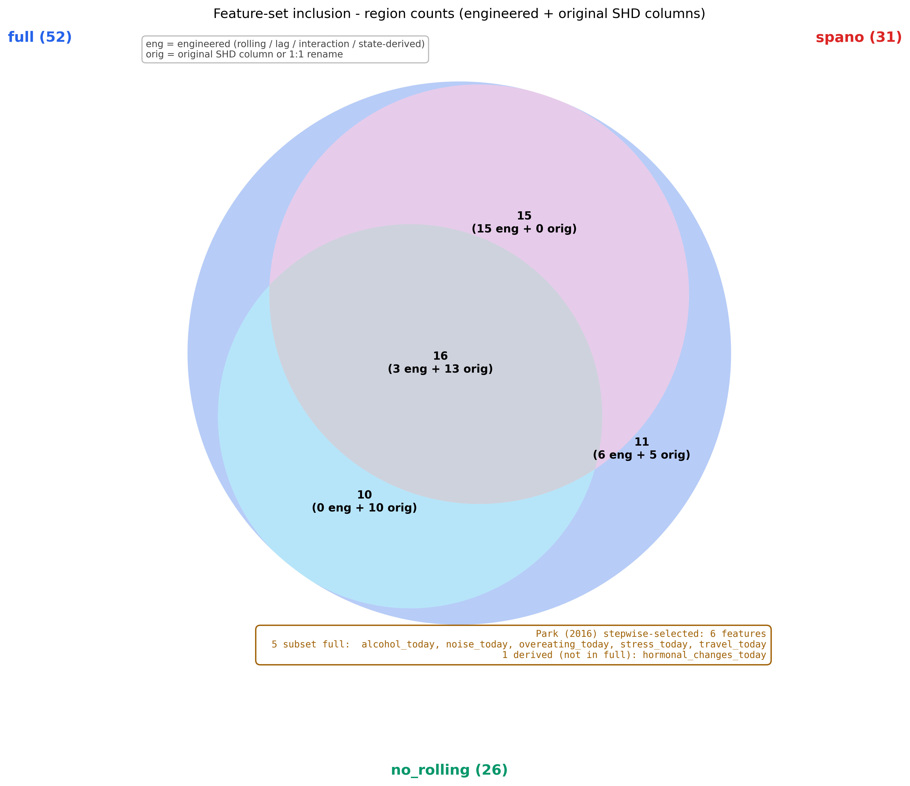
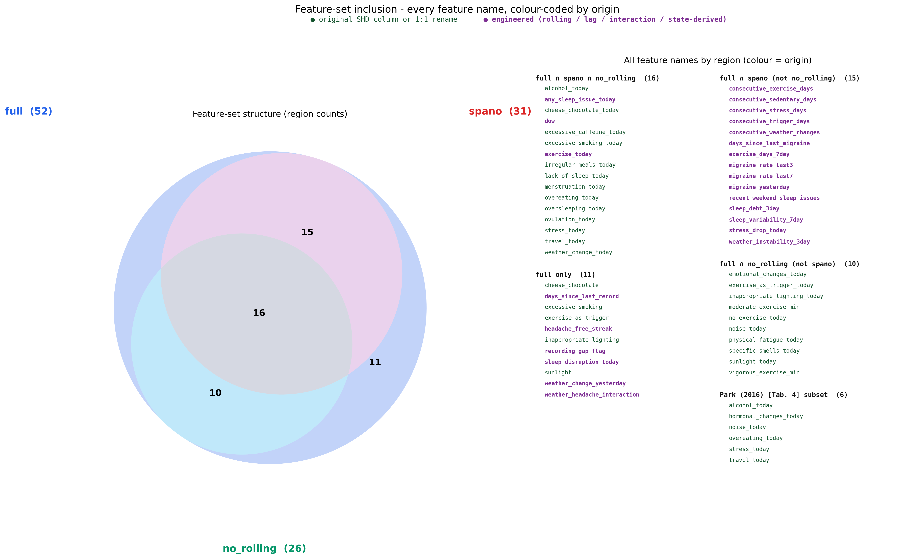
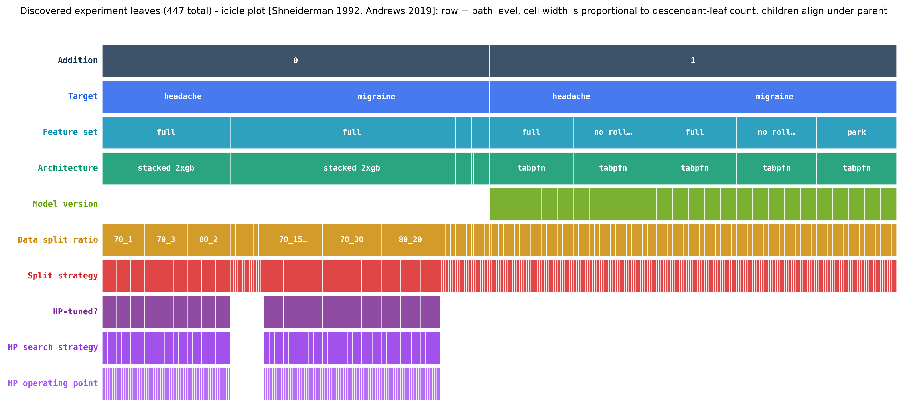
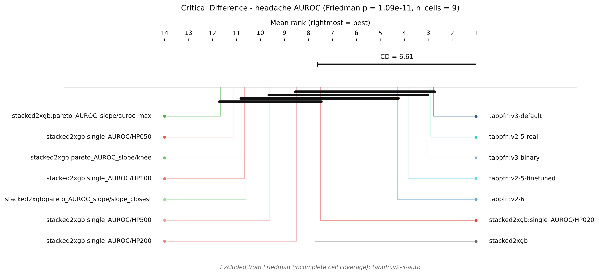
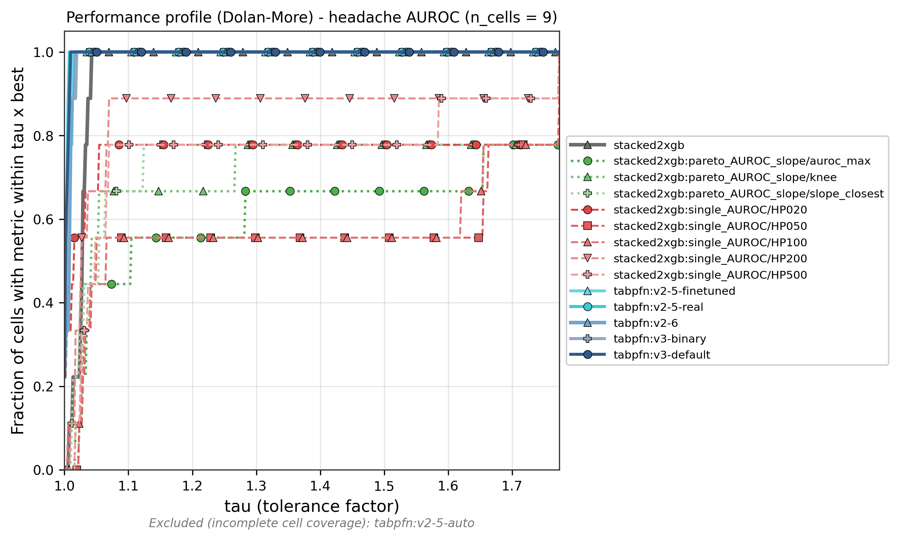
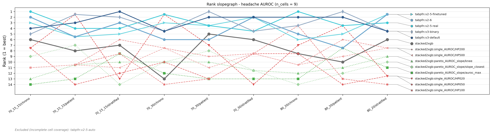
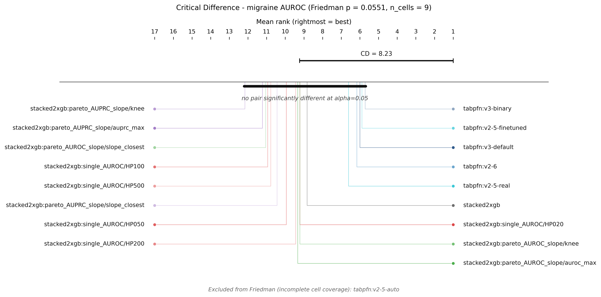
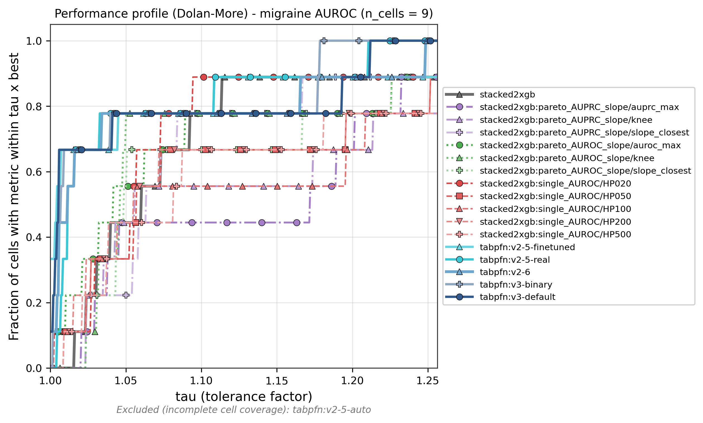
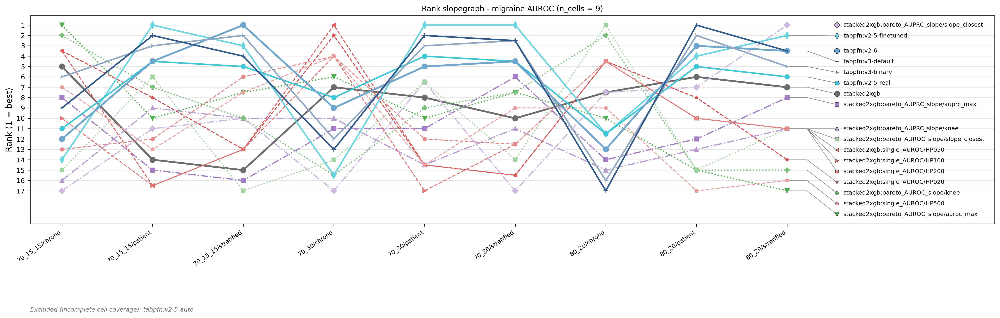

rows ↓ Architecture cols → Data Package | headache | migraine | |||||||||||||||||
|---|---|---|---|---|---|---|---|---|---|---|---|---|---|---|---|---|---|---|---|
| 70_15_15 chrono | 70_15_15 patient | 70_15_15 stratified | 70_30 chrono | 70_30 patient | 70_30 stratified | 80_20 chrono | 80_20 patient | 80_20 stratified | 70_15_15 chrono | 70_15_15 patient | 70_15_15 stratified | 70_30 chrono | 70_30 patient | 70_30 stratified | 80_20 chrono | 80_20 patient | 80_20 stratified | ||
| Addition 0 | arch: blended xgb lr spano2026 fs: [spano] | H+CV AUROC0.534[0.394-0.671] AUPRC0.168[0.089-0.264] Brier ↓0.132[0.097-0.171] ECE10 ↓0.078[0.038-0.126] CalSlope0.012[-0.154-0.673] MCC-0.012[-0.116-0.181] Sens≥0.50.262[0.067-0.471] Acc (base!)0.816[0.750-0.875] Prec0.124[0.000-0.417] Recall0.050[0.000-0.167] F10.069[0.000-0.235] | - | - | - | - | - | - | - | - | H+CV AUROC0.558[0.430-0.700] AUPRC0.057[0.019-0.107] Brier ↓0.042[0.018-0.074] ECE10 ↓0.055[0.033-0.088] CalSlope0.270[0.073-0.657] MCC-0.021[-0.044-0.000] Sens≥0.50.000[0.000-0.000] Acc (base!)0.948[0.904-0.978] Prec0.000[0.000-0.000] Recall0.000[0.000-0.000] F10.000[0.000-0.000] | - | - | - | - | - | - | - | - |
| Addition 0 | arch: stacked 2xgb meta lr fs: [full] | H+CV AUROC0.507[0.362-0.643] AUPRC0.189[0.094-0.317] Brier ↓0.129[0.096-0.163] ECE10 ↓0.076[0.031-0.124] CalSlope0.190[-0.831-1.228] MCC0.016[-0.129-0.206] Sens≥0.50.417[0.188-0.643] Acc (base!)0.794[0.728-0.860] Prec0.157[0.000-0.400] Recall0.108[0.000-0.263] F10.124[0.000-0.286] | AUROC0.639[0.584-0.693] AUPRC0.376[0.295-0.459] Brier ↓0.157[0.143-0.173] ECE10 ↓0.064[0.036-0.091] CalSlope1.448[0.930-1.987] MCC0.154[0.075-0.230] Sens≥0.50.453[0.371-0.534] Acc (base!)0.649[0.613-0.686] Prec0.293[0.235-0.355] Recall0.489[0.406-0.565] F10.366[0.301-0.431] | AUROC0.669[0.618-0.718] AUPRC0.434[0.356-0.510] Brier ↓0.166[0.150-0.181] ECE10 ↓0.043[0.019-0.069] CalSlope1.348[0.941-1.782] MCC0.240[0.164-0.322] Sens≥0.50.579[0.504-0.653] Acc (base!)0.722[0.689-0.755] Prec0.412[0.343-0.483] Recall0.433[0.359-0.509] F10.422[0.359-0.488] | AUROC0.639[0.579-0.703] AUPRC0.383[0.296-0.470] Brier ↓0.148[0.129-0.169] ECE10 ↓0.036[0.016-0.060] CalSlope1.357[0.822-1.928] MCC0.246[0.149-0.345] Sens≥0.50.633[0.545-0.724] Acc (base!)0.780[0.746-0.814] Prec0.421[0.322-0.521] Recall0.338[0.252-0.433] F10.374[0.290-0.460] | AUROC0.633[0.597-0.668] AUPRC0.352[0.301-0.403] Brier ↓0.183[0.167-0.199] ECE10 ↓0.095[0.072-0.118] CalSlope1.532[1.125-1.951] MCC0.136[0.068-0.206] Sens≥0.50.764[0.718-0.810] Acc (base!)0.767[0.744-0.791] Prec0.516[0.372-0.667] Recall0.089[0.059-0.123] F10.152[0.104-0.206] | AUROC0.662[0.628-0.696] AUPRC0.427[0.377-0.482] Brier ↓0.189[0.172-0.205] ECE10 ↓0.105[0.082-0.126] CalSlope7.891[6.226-9.637] MCC0.200[0.137-0.261] Sens≥0.50.950[0.927-0.971] Acc (base!)0.776[0.753-0.799] Prec0.608[0.493-0.716] Recall0.127[0.091-0.165] F10.210[0.155-0.265] | AUROC0.534[0.411-0.652] AUPRC0.233[0.115-0.360] Brier ↓0.125[0.102-0.150] ECE10 ↓0.095[0.056-0.135] CalSlope0.489[-0.581-1.422] MCC0.068[-0.082-0.220] Sens≥0.50.403[0.229-0.577] Acc (base!)0.821[0.774-0.868] Prec0.216[0.000-0.417] Recall0.124[0.000-0.250] F10.155[0.000-0.290] | AUROC0.624[0.580-0.665] AUPRC0.359[0.301-0.423] Brier ↓0.183[0.164-0.200] ECE10 ↓0.090[0.063-0.115] CalSlope1.120[0.742-1.470] MCC0.134[0.062-0.208] Sens≥0.50.674[0.613-0.734] Acc (base!)0.737[0.710-0.765] Prec0.397[0.305-0.495] Recall0.193[0.143-0.247] F10.259[0.197-0.322] | AUROC0.679[0.639-0.717] AUPRC0.444[0.383-0.505] Brier ↓0.183[0.166-0.201] ECE10 ↓0.098[0.074-0.124] CalSlope2.964[2.276-3.668] MCC0.244[0.168-0.315] Sens≥0.50.837[0.787-0.883] Acc (base!)0.782[0.757-0.806] Prec0.627[0.509-0.738] Recall0.175[0.128-0.225] F10.272[0.205-0.339] | H+CV AUROC0.610[0.434-0.849] AUPRC0.236[0.018-0.686] Brier ↓0.039[0.015-0.067] ECE10 ↓0.051[0.033-0.074] CalSlope1.894[-0.114-2.284] MCC0.213[-0.035-0.660] Sens≥0.50.190[0.000-0.667] Acc (base!)0.955[0.919-0.985] Prec0.314[0.000-1.000] Recall0.190[0.000-0.667] F10.216[0.000-0.667] | AUROC0.660[0.554-0.757] AUPRC0.179[0.092-0.303] Brier ↓0.051[0.038-0.066] ECE10 ↓0.028[0.013-0.043] CalSlope1.199[0.573-1.789] MCC0.195[0.098-0.297] Sens≥0.50.378[0.225-0.532] Acc (base!)0.833[0.805-0.860] Prec0.157[0.094-0.230] Recall0.459[0.308-0.617] F10.233[0.148-0.326] | AUROC0.716[0.639-0.788] AUPRC0.225[0.129-0.350] Brier ↓0.062[0.047-0.078] ECE10 ↓0.018[0.006-0.035] CalSlope0.944[0.604-1.307] MCC0.142[-0.020-0.299] Sens≥0.50.470[0.341-0.604] Acc (base!)0.927[0.906-0.947] Prec0.442[0.000-1.000] Recall0.062[0.000-0.145] F10.107[0.000-0.241] | AUROC0.777[0.680-0.855] AUPRC0.320[0.184-0.462] Brier ↓0.057[0.042-0.074] ECE10 ↓0.024[0.008-0.042] CalSlope1.599[1.048-2.182] MCC0.292[0.183-0.396] Sens≥0.50.712[0.561-0.842] Acc (base!)0.842[0.812-0.871] Prec0.227[0.148-0.320] Recall0.581[0.429-0.735] F10.325[0.224-0.428] | AUROC0.308[0.256-0.362] AUPRC0.059[0.043-0.083] Brier ↓0.074[0.061-0.087] ECE10 ↓0.049[0.034-0.062] CalSlope-1.944[-2.521--1.385] MCC-0.069[-0.098--0.029] Sens≥0.50.183[0.106-0.261] Acc (base!)0.824[0.803-0.845] Prec0.023[0.000-0.053] Recall0.030[0.000-0.071] F10.026[0.000-0.060] | AUROC0.682[0.622-0.738] AUPRC0.214[0.144-0.295] Brier ↓0.066[0.053-0.079] ECE10 ↓0.036[0.022-0.052] CalSlope0.781[0.557-1.012] MCC0.216[0.134-0.303] Sens≥0.50.264[0.184-0.354] Acc (base!)0.897[0.880-0.913] Prec0.279[0.193-0.374] Recall0.264[0.184-0.354] F10.270[0.193-0.354] | AUROC0.592[0.382-0.779] AUPRC0.091[0.030-0.195] Brier ↓0.044[0.023-0.068] ECE10 ↓0.031[0.013-0.052] CalSlope0.348[-0.498-1.117] MCC-0.036[-0.054--0.020] Sens≥0.50.193[0.000-0.500] Acc (base!)0.927[0.893-0.957] Prec0.000[0.000-0.000] Recall0.000[0.000-0.000] F10.000[0.000-0.000] | AUROC0.681[0.614-0.749] AUPRC0.184[0.118-0.265] Brier ↓0.069[0.055-0.086] ECE10 ↓0.031[0.015-0.049] CalSlope2.853[1.842-3.929] MCC0.116[0.056-0.173] Sens≥0.50.764[0.661-0.862] Acc (base!)0.479[0.445-0.513] Prec0.102[0.076-0.129] Recall0.764[0.661-0.862] F10.180[0.138-0.223] | AUROC0.695[0.630-0.759] AUPRC0.212[0.134-0.304] Brier ↓0.065[0.050-0.078] ECE10 ↓0.027[0.012-0.043] CalSlope0.874[0.594-1.193] MCC0.163[0.062-0.273] Sens≥0.50.401[0.287-0.518] Acc (base!)0.906[0.887-0.926] Prec0.264[0.139-0.400] Recall0.170[0.088-0.270] F10.205[0.111-0.308] |
| Addition 0 | arch: stacked 2xgb meta lr fs: [full] HP: pareto_AUPRC_slope/auprc_max | - | - | - | - | - | - | - | - | - | AUROC0.571[0.371-0.777] AUPRC0.061[0.019-0.121] Brier ↓0.047[0.023-0.078] ECE10 ↓0.054[0.030-0.082] CalSlope0.051[-0.827-0.712] MCC-0.059[-0.093--0.028] Sens≥0.50.000[0.000-0.000] Acc (base!)0.876[0.816-0.926] Prec0.000[0.000-0.000] Recall0.000[0.000-0.000] F10.000[0.000-0.000] | AUROC0.585[0.483-0.690] AUPRC0.145[0.069-0.264] Brier ↓0.053[0.040-0.068] ECE10 ↓0.037[0.019-0.053] CalSlope1.511[0.304-2.657] MCC0.129[0.029-0.259] Sens≥0.50.485[0.333-0.649] Acc (base!)0.893[0.869-0.915] Prec0.159[0.071-0.275] Recall0.216[0.100-0.360] F10.182[0.085-0.302] | AUROC0.706[0.628-0.781] AUPRC0.219[0.126-0.344] Brier ↓0.063[0.048-0.079] ECE10 ↓0.021[0.008-0.037] CalSlope0.725[0.431-1.029] MCC0.208[0.079-0.349] Sens≥0.50.431[0.304-0.571] Acc (base!)0.920[0.898-0.940] Prec0.367[0.176-0.588] Recall0.166[0.071-0.273] F10.226[0.102-0.356] | AUROC0.766[0.667-0.845] AUPRC0.278[0.160-0.416] Brier ↓0.056[0.041-0.073] ECE10 ↓0.018[0.005-0.033] CalSlope1.291[0.850-1.773] MCC0.302[0.151-0.454] Sens≥0.50.659[0.500-0.800] Acc (base!)0.925[0.904-0.946] Prec0.406[0.231-0.591] Recall0.288[0.146-0.432] F10.333[0.185-0.475] | AUROC0.287[0.237-0.339] AUPRC0.051[0.041-0.060] Brier ↓0.076[0.063-0.090] ECE10 ↓0.051[0.037-0.066] CalSlope-0.426[-0.540--0.318] MCC-0.148[-0.197--0.100] Sens≥0.50.040[0.008-0.080] Acc (base!)0.452[0.424-0.478] Prec0.038[0.024-0.053] Recall0.253[0.173-0.337] F10.066[0.042-0.091] | AUROC0.689[0.631-0.746] AUPRC0.193[0.133-0.269] Brier ↓0.065[0.053-0.079] ECE10 ↓0.034[0.021-0.050] CalSlope0.631[0.451-0.825] MCC0.189[0.100-0.290] Sens≥0.50.162[0.094-0.237] Acc (base!)0.915[0.899-0.929] Prec0.326[0.200-0.466] Recall0.162[0.094-0.237] F10.215[0.131-0.307] | AUROC0.542[0.338-0.732] AUPRC0.108[0.026-0.289] Brier ↓0.044[0.024-0.069] ECE10 ↓0.034[0.017-0.054] CalSlope0.173[-0.688-0.936] MCC0.086[-0.041-0.353] Sens≥0.50.193[0.000-0.500] Acc (base!)0.940[0.910-0.966] Prec0.149[0.000-0.500] Recall0.094[0.000-0.333] F10.109[0.000-0.364] | AUROC0.601[0.531-0.670] AUPRC0.147[0.088-0.220] Brier ↓0.070[0.056-0.086] ECE10 ↓0.032[0.016-0.050] CalSlope17.458[0.682-53.383] MCC0.000[0.000-0.000] Sens≥0.51.000[1.000-1.000] Acc (base!)0.075[0.059-0.092] Prec0.075[0.059-0.092] Recall1.000[1.000-1.000] F10.139[0.111-0.169] | AUROC0.692[0.625-0.757] AUPRC0.203[0.129-0.290] Brier ↓0.064[0.050-0.078] ECE10 ↓0.028[0.012-0.043] CalSlope0.813[0.527-1.112] MCC0.199[0.104-0.307] Sens≥0.50.446[0.329-0.569] Acc (base!)0.901[0.881-0.920] Prec0.275[0.167-0.393] Recall0.232[0.143-0.339] F10.250[0.159-0.355] |
| Addition 0 | arch: stacked 2xgb meta lr fs: [full] HP: pareto_AUPRC_slope/knee | - | - | - | - | - | - | - | - | - | AUROC0.476[0.303-0.647] AUPRC0.047[0.016-0.092] Brier ↓0.048[0.022-0.078] ECE10 ↓0.060[0.037-0.092] CalSlope-0.406[-1.301-0.117] MCC-0.095[-0.144--0.046] Sens≥0.50.000[0.000-0.000] Acc (base!)0.766[0.697-0.838] Prec0.000[0.000-0.000] Recall0.000[0.000-0.000] F10.000[0.000-0.000] | AUROC0.683[0.599-0.775] AUPRC0.180[0.094-0.307] Brier ↓0.051[0.038-0.066] ECE10 ↓0.024[0.009-0.039] CalSlope1.099[0.603-1.615] MCC0.128[0.035-0.228] Sens≥0.50.326[0.185-0.484] Acc (base!)0.824[0.796-0.853] Prec0.123[0.069-0.189] Recall0.353[0.212-0.512] F10.181[0.105-0.269] | AUROC0.721[0.634-0.797] AUPRC0.218[0.130-0.327] Brier ↓0.062[0.048-0.078] ECE10 ↓0.015[0.005-0.029] CalSlope0.794[0.483-1.118] MCC0.199[0.071-0.337] Sens≥0.50.431[0.293-0.585] Acc (base!)0.908[0.885-0.928] Prec0.296[0.147-0.469] Recall0.207[0.098-0.333] F10.241[0.118-0.372] | AUROC0.768[0.676-0.846] AUPRC0.309[0.174-0.455] Brier ↓0.056[0.042-0.073] ECE10 ↓0.019[0.007-0.034] CalSlope1.289[0.844-1.756] MCC0.224[0.047-0.392] Sens≥0.50.633[0.471-0.778] Acc (base!)0.936[0.913-0.955] Prec0.578[0.167-1.000] Recall0.105[0.023-0.211] F10.175[0.042-0.320] | AUROC0.283[0.233-0.332] AUPRC0.050[0.040-0.060] Brier ↓0.076[0.063-0.090] ECE10 ↓0.050[0.036-0.065] CalSlope-0.498[-0.634--0.374] MCC-0.150[-0.189--0.113] Sens≥0.50.111[0.053-0.173] Acc (base!)0.579[0.552-0.605] Prec0.024[0.011-0.038] Recall0.111[0.053-0.173] F10.039[0.018-0.062] | AUROC0.680[0.620-0.739] AUPRC0.193[0.132-0.267] Brier ↓0.065[0.053-0.079] ECE10 ↓0.034[0.021-0.049] CalSlope0.622[0.433-0.818] MCC0.156[0.059-0.255] Sens≥0.50.152[0.086-0.228] Acc (base!)0.923[0.908-0.937] Prec0.376[0.188-0.560] Recall0.092[0.042-0.149] F10.147[0.070-0.232] | AUROC0.541[0.334-0.731] AUPRC0.088[0.026-0.223] Brier ↓0.045[0.024-0.070] ECE10 ↓0.035[0.017-0.055] CalSlope0.165[-0.677-0.889] MCC-0.027[-0.043--0.012] Sens≥0.50.094[0.000-0.333] Acc (base!)0.940[0.910-0.966] Prec0.000[0.000-0.000] Recall0.000[0.000-0.000] F10.000[0.000-0.000] | AUROC0.595[0.519-0.670] AUPRC0.147[0.091-0.220] Brier ↓0.070[0.056-0.086] ECE10 ↓0.032[0.016-0.050] CalSlope2.464[0.792-4.064] MCC0.060[-0.003-0.125] Sens≥0.50.644[0.528-0.758] Acc (base!)0.482[0.448-0.514] Prec0.089[0.065-0.116] Recall0.644[0.528-0.758] F10.157[0.116-0.200] | AUROC0.690[0.623-0.758] AUPRC0.215[0.135-0.314] Brier ↓0.064[0.050-0.077] ECE10 ↓0.031[0.016-0.046] CalSlope0.766[0.497-1.064] MCC0.197[0.100-0.295] Sens≥0.50.492[0.373-0.618] Acc (base!)0.885[0.865-0.906] Prec0.241[0.149-0.338] Recall0.279[0.175-0.391] F10.258[0.163-0.350] |
| Addition 0 | arch: stacked 2xgb meta lr fs: [full] HP: pareto_AUPRC_slope/slope_closest | - | - | - | - | - | - | - | - | - | AUROC0.457[0.370-0.549] AUPRC0.046[0.014-0.081] Brier ↓0.047[0.021-0.079] ECE10 ↓0.058[0.036-0.088] CalSlope-0.758[-1.269--0.321] MCC-0.102[-0.153--0.049] Sens≥0.50.000[0.000-0.000] Acc (base!)0.743[0.669-0.816] Prec0.000[0.000-0.000] Recall0.000[0.000-0.000] F10.000[0.000-0.000] | AUROC0.678[0.592-0.771] AUPRC0.182[0.094-0.316] Brier ↓0.051[0.038-0.066] ECE10 ↓0.028[0.013-0.043] CalSlope1.235[0.697-1.772] MCC0.149[0.062-0.242] Sens≥0.50.324[0.184-0.472] Acc (base!)0.787[0.756-0.817] Prec0.122[0.072-0.180] Recall0.458[0.308-0.618] F10.192[0.118-0.269] | AUROC0.721[0.636-0.796] AUPRC0.225[0.133-0.347] Brier ↓0.062[0.048-0.078] ECE10 ↓0.018[0.006-0.033] CalSlope0.859[0.542-1.185] MCC0.228[0.096-0.355] Sens≥0.50.411[0.278-0.545] Acc (base!)0.907[0.885-0.926] Prec0.310[0.160-0.465] Recall0.249[0.121-0.377] F10.274[0.143-0.396] | AUROC0.754[0.658-0.833] AUPRC0.286[0.161-0.422] Brier ↓0.056[0.041-0.073] ECE10 ↓0.019[0.007-0.034] CalSlope1.301[0.851-1.790] MCC0.313[0.164-0.465] Sens≥0.50.659[0.500-0.800] Acc (base!)0.924[0.901-0.944] Prec0.399[0.226-0.591] Recall0.314[0.172-0.467] F10.349[0.203-0.488] | AUROC0.623[0.563-0.682] AUPRC0.147[0.098-0.204] Brier ↓0.071[0.059-0.084] ECE10 ↓0.038[0.025-0.052] CalSlope0.843[0.445-1.213] MCC0.102[0.036-0.171] Sens≥0.51.000[1.000-1.000] Acc (base!)0.780[0.758-0.802] Prec0.132[0.092-0.178] Recall0.334[0.241-0.432] F10.189[0.134-0.246] | AUROC0.670[0.609-0.724] AUPRC0.172[0.119-0.239] Brier ↓0.066[0.054-0.080] ECE10 ↓0.038[0.024-0.054] CalSlope0.749[0.519-0.978] MCC0.200[0.119-0.280] Sens≥0.50.294[0.204-0.386] Acc (base!)0.880[0.863-0.897] Prec0.238[0.165-0.314] Recall0.294[0.204-0.386] F10.262[0.185-0.339] | AUROC0.592[0.417-0.749] AUPRC0.064[0.028-0.111] Brier ↓0.048[0.027-0.072] ECE10 ↓0.046[0.028-0.067] CalSlope0.198[-0.403-0.737] MCC-0.061[-0.086--0.039] Sens≥0.50.105[0.000-0.375] Acc (base!)0.876[0.833-0.919] Prec0.000[0.000-0.000] Recall0.000[0.000-0.000] F10.000[0.000-0.000] | AUROC0.666[0.598-0.731] AUPRC0.160[0.104-0.232] Brier ↓0.069[0.055-0.085] ECE10 ↓0.031[0.015-0.049] CalSlope1.852[1.092-2.602] MCC0.113[0.046-0.174] Sens≥0.50.659[0.544-0.770] Acc (base!)0.562[0.530-0.596] Prec0.107[0.079-0.136] Recall0.659[0.544-0.770] F10.184[0.140-0.229] | AUROC0.706[0.638-0.773] AUPRC0.193[0.124-0.278] Brier ↓0.065[0.051-0.079] ECE10 ↓0.033[0.017-0.048] CalSlope1.073[0.735-1.433] MCC0.167[0.096-0.236] Sens≥0.50.523[0.407-0.644] Acc (base!)0.715[0.686-0.744] Prec0.138[0.100-0.178] Recall0.569[0.451-0.682] F10.222[0.167-0.278] |
| Addition 0 | arch: stacked 2xgb meta lr fs: [full] HP: pareto_AUROC_slope/auroc_max | AUROC0.405[0.269-0.541] AUPRC0.137[0.075-0.223] Brier ↓0.144[0.112-0.179] ECE10 ↓0.140[0.092-0.194] CalSlope-0.577[-1.541-0.254] MCC-0.191[-0.335--0.043] Sens≥0.50.262[0.067-0.458] Acc (base!)0.434[0.346-0.522] Prec0.074[0.016-0.136] Recall0.262[0.067-0.458] F10.114[0.025-0.202] | AUROC0.626[0.574-0.675] AUPRC0.324[0.253-0.401] Brier ↓0.160[0.147-0.176] ECE10 ↓0.052[0.027-0.079] CalSlope1.029[0.586-1.437] MCC0.130[0.056-0.208] Sens≥0.50.482[0.403-0.565] Acc (base!)0.605[0.570-0.641] Prec0.271[0.220-0.328] Recall0.533[0.454-0.618] F10.359[0.301-0.423] | AUROC0.663[0.612-0.711] AUPRC0.439[0.360-0.511] Brier ↓0.167[0.151-0.182] ECE10 ↓0.034[0.014-0.059] CalSlope1.282[0.887-1.711] MCC0.207[0.132-0.282] Sens≥0.50.567[0.496-0.643] Acc (base!)0.647[0.609-0.681] Prec0.346[0.292-0.402] Recall0.567[0.496-0.643] F10.429[0.369-0.484] | AUROC0.640[0.575-0.704] AUPRC0.395[0.307-0.485] Brier ↓0.147[0.128-0.168] ECE10 ↓0.042[0.019-0.068] CalSlope1.269[0.799-1.769] MCC0.255[0.144-0.360] Sens≥0.50.527[0.436-0.621] Acc (base!)0.813[0.781-0.845] Prec0.560[0.406-0.714] Recall0.204[0.132-0.284] F10.298[0.201-0.395] | AUROC0.385[0.352-0.422] AUPRC0.186[0.165-0.210] Brier ↓0.196[0.178-0.214] ECE10 ↓0.107[0.084-0.130] CalSlope-1.362[-1.786--0.946] MCC-0.102[-0.144--0.058] Sens≥0.50.252[0.204-0.298] Acc (base!)0.667[0.642-0.693] Prec0.123[0.077-0.174] Recall0.069[0.042-0.099] F10.088[0.055-0.125] | AUROC0.380[0.345-0.416] AUPRC0.188[0.164-0.212] Brier ↓0.199[0.181-0.216] ECE10 ↓0.122[0.099-0.144] CalSlope-1.052[-1.349--0.763] MCC-0.128[-0.181--0.075] Sens≥0.50.301[0.252-0.351] Acc (base!)0.419[0.392-0.444] Prec0.186[0.156-0.213] Recall0.436[0.384-0.491] F10.260[0.224-0.295] | AUROC0.497[0.380-0.612] AUPRC0.185[0.103-0.291] Brier ↓0.137[0.112-0.162] ECE10 ↓0.123[0.081-0.168] CalSlope-0.028[-0.821-0.770] MCC0.052[-0.080-0.176] Sens≥0.50.306[0.148-0.478] Acc (base!)0.405[0.338-0.474] Prec0.149[0.091-0.208] Recall0.716[0.545-0.875] F10.245[0.159-0.327] | AUROC0.630[0.582-0.670] AUPRC0.370[0.311-0.433] Brier ↓0.181[0.162-0.198] ECE10 ↓0.085[0.059-0.109] CalSlope0.990[0.659-1.289] MCC0.186[0.108-0.261] Sens≥0.50.666[0.603-0.727] Acc (base!)0.772[0.747-0.798] Prec0.632[0.464-0.790] Recall0.104[0.066-0.146] F10.178[0.116-0.243] | AUROC0.375[0.336-0.419] AUPRC0.191[0.163-0.223] Brier ↓0.200[0.181-0.221] ECE10 ↓0.124[0.099-0.151] CalSlope-1.032[-1.394--0.680] MCC-0.091[-0.143--0.033] Sens≥0.50.272[0.217-0.330] Acc (base!)0.637[0.606-0.667] Prec0.154[0.104-0.212] Recall0.121[0.082-0.165] F10.135[0.090-0.182] | AUROC0.679[0.552-0.799] AUPRC0.076[0.025-0.144] Brier ↓0.043[0.019-0.071] ECE10 ↓0.051[0.027-0.077] CalSlope0.474[0.054-0.992] MCC-0.032[-0.057--0.011] Sens≥0.50.000[0.000-0.000] Acc (base!)0.934[0.890-0.971] Prec0.000[0.000-0.000] Recall0.000[0.000-0.000] F10.000[0.000-0.000] | AUROC0.679[0.590-0.772] AUPRC0.179[0.095-0.302] Brier ↓0.051[0.038-0.066] ECE10 ↓0.029[0.012-0.044] CalSlope1.170[0.634-1.741] MCC0.152[0.064-0.247] Sens≥0.50.432[0.288-0.588] Acc (base!)0.791[0.760-0.821] Prec0.125[0.074-0.182] Recall0.458[0.308-0.618] F10.195[0.122-0.275] | AUROC0.723[0.641-0.798] AUPRC0.228[0.138-0.348] Brier ↓0.062[0.047-0.077] ECE10 ↓0.019[0.007-0.034] CalSlope0.787[0.501-1.099] MCC0.232[0.110-0.361] Sens≥0.50.411[0.275-0.550] Acc (base!)0.903[0.881-0.925] Prec0.303[0.176-0.452] Recall0.268[0.152-0.396] F10.282[0.162-0.404] | AUROC0.787[0.694-0.864] AUPRC0.267[0.159-0.398] Brier ↓0.055[0.042-0.072] ECE10 ↓0.020[0.007-0.035] CalSlope1.302[0.876-1.761] MCC0.289[0.177-0.397] Sens≥0.50.712[0.558-0.844] Acc (base!)0.850[0.823-0.880] Prec0.233[0.151-0.333] Recall0.552[0.407-0.711] F10.326[0.220-0.433] | AUROC0.290[0.241-0.341] AUPRC0.051[0.041-0.061] Brier ↓0.078[0.065-0.092] ECE10 ↓0.076[0.062-0.090] CalSlope-0.216[-0.276--0.160] MCC-0.112[-0.139--0.082] Sens≥0.50.030[0.000-0.067] Acc (base!)0.748[0.723-0.773] Prec0.013[0.000-0.029] Recall0.030[0.000-0.067] F10.018[0.000-0.041] | AUROC0.687[0.628-0.746] AUPRC0.201[0.138-0.280] Brier ↓0.065[0.053-0.079] ECE10 ↓0.037[0.023-0.051] CalSlope0.615[0.440-0.808] MCC0.170[0.070-0.280] Sens≥0.50.244[0.165-0.336] Acc (base!)0.925[0.911-0.939] Prec0.427[0.214-0.667] Recall0.091[0.041-0.157] F10.149[0.070-0.246] | AUROC0.583[0.382-0.755] AUPRC0.088[0.028-0.210] Brier ↓0.045[0.024-0.069] ECE10 ↓0.038[0.019-0.060] CalSlope0.264[-0.468-0.903] MCC0.087[-0.042-0.356] Sens≥0.50.094[0.000-0.333] Acc (base!)0.940[0.910-0.966] Prec0.152[0.000-0.500] Recall0.094[0.000-0.333] F10.109[0.000-0.375] | AUROC0.589[0.516-0.664] AUPRC0.144[0.088-0.216] Brier ↓0.069[0.055-0.086] ECE10 ↓0.033[0.017-0.050] CalSlope0.866[0.302-1.426] MCC0.050[-0.016-0.118] Sens≥0.50.334[0.224-0.452] Acc (base!)0.650[0.619-0.682] Prec0.093[0.061-0.129] Recall0.421[0.303-0.543] F10.152[0.102-0.205] | AUROC0.678[0.611-0.746] AUPRC0.178[0.113-0.260] Brier ↓0.065[0.051-0.078] ECE10 ↓0.030[0.015-0.046] CalSlope0.625[0.391-0.874] MCC0.163[0.090-0.236] Sens≥0.50.356[0.245-0.475] Acc (base!)0.729[0.702-0.758] Prec0.140[0.100-0.180] Recall0.540[0.420-0.672] F10.222[0.163-0.279] |
| Addition 0 | arch: stacked 2xgb meta lr fs: [full] HP: pareto_AUROC_slope/knee | AUROC0.410[0.276-0.549] AUPRC0.134[0.076-0.212] Brier ↓0.141[0.109-0.176] ECE10 ↓0.129[0.078-0.187] CalSlope-0.766[-1.950-0.257] MCC-0.106[-0.276-0.065] Sens≥0.50.365[0.143-0.588] Acc (base!)0.428[0.346-0.507] Prec0.107[0.044-0.182] Recall0.418[0.214-0.632] F10.169[0.073-0.275] | AUROC0.630[0.578-0.681] AUPRC0.338[0.266-0.414] Brier ↓0.159[0.145-0.174] ECE10 ↓0.058[0.032-0.086] CalSlope1.107[0.677-1.543] MCC0.118[0.041-0.199] Sens≥0.50.360[0.278-0.440] Acc (base!)0.666[0.632-0.701] Prec0.283[0.222-0.351] Recall0.396[0.312-0.479] F10.329[0.263-0.397] | AUROC0.662[0.609-0.710] AUPRC0.427[0.348-0.501] Brier ↓0.167[0.151-0.182] ECE10 ↓0.040[0.018-0.066] CalSlope1.254[0.841-1.706] MCC0.200[0.121-0.277] Sens≥0.50.528[0.450-0.605] Acc (base!)0.658[0.621-0.693] Prec0.349[0.291-0.406] Recall0.528[0.450-0.605] F10.419[0.358-0.479] | AUROC0.643[0.580-0.705] AUPRC0.397[0.309-0.485] Brier ↓0.146[0.127-0.167] ECE10 ↓0.044[0.022-0.069] CalSlope1.284[0.815-1.754] MCC0.291[0.184-0.397] Sens≥0.50.536[0.441-0.631] Acc (base!)0.813[0.781-0.843] Prec0.544[0.411-0.673] Recall0.276[0.193-0.365] F10.365[0.268-0.462] | AUROC0.619[0.582-0.656] AUPRC0.358[0.308-0.412] Brier ↓0.178[0.162-0.193] ECE10 ↓0.077[0.056-0.100] CalSlope0.781[0.555-1.002] MCC0.171[0.106-0.239] Sens≥0.50.924[0.891-0.953] Acc (base!)0.772[0.751-0.794] Prec0.568[0.440-0.697] Recall0.110[0.077-0.147] F10.183[0.132-0.238] | AUROC0.381[0.346-0.416] AUPRC0.189[0.164-0.214] Brier ↓0.199[0.182-0.216] ECE10 ↓0.119[0.095-0.141] CalSlope-0.926[-1.199--0.661] MCC-0.153[-0.207--0.098] Sens≥0.50.308[0.256-0.360] Acc (base!)0.358[0.331-0.383] Prec0.188[0.160-0.214] Recall0.521[0.469-0.576] F10.276[0.240-0.309] | AUROC0.521[0.408-0.643] AUPRC0.214[0.109-0.337] Brier ↓0.132[0.109-0.158] ECE10 ↓0.111[0.072-0.150] CalSlope0.198[-0.574-0.997] MCC0.043[-0.098-0.188] Sens≥0.50.338[0.162-0.515] Acc (base!)0.769[0.718-0.821] Prec0.171[0.044-0.306] Recall0.184[0.048-0.324] F10.175[0.044-0.299] | AUROC0.622[0.575-0.666] AUPRC0.366[0.306-0.430] Brier ↓0.182[0.163-0.199] ECE10 ↓0.086[0.060-0.111] CalSlope0.945[0.618-1.256] MCC0.175[0.096-0.252] Sens≥0.50.647[0.584-0.711] Acc (base!)0.769[0.744-0.796] Prec0.598[0.429-0.758] Recall0.104[0.066-0.146] F10.176[0.115-0.242] | AUROC0.389[0.348-0.432] AUPRC0.192[0.165-0.223] Brier ↓0.197[0.178-0.217] ECE10 ↓0.105[0.079-0.131] CalSlope-1.220[-1.654--0.771] MCC-0.109[-0.162--0.052] Sens≥0.50.291[0.233-0.350] Acc (base!)0.596[0.565-0.628] Prec0.153[0.112-0.199] Recall0.159[0.115-0.209] F10.156[0.116-0.201] | AUROC0.647[0.426-0.885] AUPRC0.155[0.020-0.495] Brier ↓0.039[0.016-0.068] ECE10 ↓0.045[0.026-0.068] CalSlope0.677[-0.269-2.069] MCC-0.021[-0.044-0.000] Sens≥0.50.190[0.000-0.667] Acc (base!)0.948[0.904-0.978] Prec0.000[0.000-0.000] Recall0.000[0.000-0.000] F10.000[0.000-0.000] | AUROC0.688[0.603-0.776] AUPRC0.189[0.094-0.318] Brier ↓0.051[0.038-0.066] ECE10 ↓0.024[0.009-0.038] CalSlope1.100[0.602-1.610] MCC0.131[0.039-0.233] Sens≥0.50.297[0.161-0.447] Acc (base!)0.827[0.798-0.854] Prec0.125[0.070-0.193] Recall0.353[0.212-0.512] F10.184[0.107-0.272] | AUROC0.721[0.641-0.795] AUPRC0.227[0.133-0.346] Brier ↓0.062[0.048-0.078] ECE10 ↓0.019[0.006-0.034] CalSlope0.825[0.525-1.156] MCC0.186[0.051-0.321] Sens≥0.50.430[0.295-0.568] Acc (base!)0.909[0.888-0.931] Prec0.292[0.125-0.469] Recall0.186[0.077-0.306] F10.224[0.096-0.356] | AUROC0.761[0.662-0.846] AUPRC0.294[0.163-0.433] Brier ↓0.055[0.041-0.072] ECE10 ↓0.018[0.006-0.034] CalSlope1.277[0.857-1.732] MCC0.341[0.196-0.472] Sens≥0.50.633[0.471-0.778] Acc (base!)0.913[0.890-0.934] Prec0.361[0.222-0.511] Recall0.418[0.263-0.576] F10.385[0.246-0.512] | AUROC0.291[0.242-0.342] AUPRC0.052[0.041-0.062] Brier ↓0.076[0.063-0.090] ECE10 ↓0.052[0.037-0.066] CalSlope-0.454[-0.578--0.334] MCC-0.090[-0.116--0.057] Sens≥0.50.081[0.032-0.135] Acc (base!)0.790[0.768-0.813] Prec0.017[0.000-0.038] Recall0.030[0.000-0.067] F10.022[0.000-0.048] | AUROC0.687[0.628-0.746] AUPRC0.201[0.138-0.280] Brier ↓0.065[0.053-0.079] ECE10 ↓0.037[0.023-0.051] CalSlope0.615[0.440-0.808] MCC0.170[0.070-0.280] Sens≥0.50.244[0.165-0.336] Acc (base!)0.925[0.911-0.939] Prec0.427[0.214-0.667] Recall0.091[0.041-0.157] F10.149[0.070-0.246] | AUROC0.607[0.430-0.766] AUPRC0.071[0.030-0.130] Brier ↓0.048[0.028-0.071] ECE10 ↓0.048[0.026-0.070] CalSlope0.329[-0.271-0.929] MCC-0.054[-0.076--0.033] Sens≥0.50.105[0.000-0.375] Acc (base!)0.893[0.855-0.932] Prec0.000[0.000-0.000] Recall0.000[0.000-0.000] F10.000[0.000-0.000] | AUROC0.589[0.516-0.664] AUPRC0.144[0.088-0.216] Brier ↓0.069[0.055-0.086] ECE10 ↓0.033[0.017-0.050] CalSlope0.866[0.302-1.426] MCC0.050[-0.016-0.118] Sens≥0.50.334[0.224-0.452] Acc (base!)0.650[0.619-0.682] Prec0.093[0.061-0.129] Recall0.421[0.303-0.543] F10.152[0.102-0.205] | AUROC0.685[0.615-0.756] AUPRC0.216[0.139-0.308] Brier ↓0.064[0.050-0.078] ECE10 ↓0.029[0.014-0.043] CalSlope0.728[0.467-1.021] MCC0.150[0.082-0.220] Sens≥0.50.430[0.315-0.558] Acc (base!)0.681[0.650-0.712] Prec0.127[0.092-0.163] Recall0.586[0.470-0.710] F10.208[0.156-0.261] |
| Addition 0 | arch: stacked 2xgb meta lr fs: [full] HP: pareto_AUROC_slope/slope_closest | AUROC0.493[0.342-0.643] AUPRC0.196[0.095-0.349] Brier ↓0.131[0.099-0.167] ECE10 ↓0.092[0.045-0.140] CalSlope0.001[-1.160-1.125] MCC-0.004[-0.174-0.158] Sens≥0.50.364[0.160-0.583] Acc (base!)0.329[0.250-0.404] Prec0.139[0.075-0.212] Recall0.732[0.526-0.933] F10.233[0.133-0.331] | AUROC0.640[0.586-0.691] AUPRC0.355[0.273-0.436] Brier ↓0.158[0.144-0.173] ECE10 ↓0.056[0.030-0.083] CalSlope1.228[0.788-1.675] MCC0.153[0.071-0.227] Sens≥0.50.431[0.352-0.511] Acc (base!)0.630[0.592-0.665] Prec0.287[0.229-0.344] Recall0.526[0.441-0.606] F10.371[0.305-0.429] | AUROC0.649[0.598-0.701] AUPRC0.431[0.355-0.505] Brier ↓0.168[0.152-0.183] ECE10 ↓0.040[0.018-0.067] CalSlope1.192[0.807-1.603] MCC0.197[0.111-0.277] Sens≥0.50.567[0.491-0.645] Acc (base!)0.694[0.659-0.727] Prec0.370[0.302-0.439] Recall0.434[0.358-0.513] F10.399[0.332-0.464] | AUROC0.643[0.580-0.705] AUPRC0.397[0.309-0.485] Brier ↓0.146[0.127-0.167] ECE10 ↓0.044[0.022-0.069] CalSlope1.284[0.815-1.754] MCC0.291[0.184-0.397] Sens≥0.50.536[0.441-0.631] Acc (base!)0.813[0.781-0.843] Prec0.544[0.411-0.673] Recall0.276[0.193-0.365] F10.365[0.268-0.462] | AUROC0.629[0.592-0.664] AUPRC0.360[0.310-0.413] Brier ↓0.179[0.163-0.194] ECE10 ↓0.081[0.058-0.104] CalSlope0.914[0.670-1.162] MCC0.174[0.107-0.239] Sens≥0.50.709[0.660-0.761] Acc (base!)0.773[0.751-0.796] Prec0.577[0.446-0.706] Recall0.109[0.075-0.143] F10.183[0.129-0.234] | AUROC0.381[0.347-0.417] AUPRC0.191[0.165-0.216] Brier ↓0.196[0.179-0.212] ECE10 ↓0.103[0.080-0.126] CalSlope-1.696[-2.180--1.218] MCC-0.164[-0.220--0.109] Sens≥0.50.502[0.447-0.557] Acc (base!)0.316[0.292-0.339] Prec0.193[0.166-0.217] Recall0.599[0.548-0.653] F10.291[0.257-0.324] | AUROC0.489[0.381-0.595] AUPRC0.160[0.091-0.245] Brier ↓0.136[0.113-0.161] ECE10 ↓0.108[0.068-0.148] CalSlope-0.122[-0.941-0.660] MCC-0.009[-0.140-0.122] Sens≥0.50.408[0.227-0.588] Acc (base!)0.468[0.406-0.530] Prec0.133[0.074-0.193] Recall0.529[0.357-0.704] F10.211[0.122-0.296] | AUROC0.621[0.574-0.664] AUPRC0.367[0.307-0.431] Brier ↓0.181[0.163-0.198] ECE10 ↓0.083[0.058-0.108] CalSlope0.926[0.602-1.236] MCC0.196[0.117-0.270] Sens≥0.50.600[0.532-0.667] Acc (base!)0.774[0.748-0.801] Prec0.680[0.516-0.842] Recall0.099[0.062-0.139] F10.172[0.112-0.235] | AUROC0.378[0.337-0.423] AUPRC0.186[0.162-0.214] Brier ↓0.196[0.177-0.217] ECE10 ↓0.105[0.079-0.132] CalSlope-1.595[-2.122--1.056] MCC-0.053[-0.104-0.003] Sens≥0.50.358[0.298-0.423] Acc (base!)0.723[0.697-0.750] Prec0.145[0.060-0.245] Recall0.037[0.015-0.066] F10.059[0.024-0.101] | AUROC0.499[0.340-0.674] AUPRC0.050[0.017-0.095] Brier ↓0.046[0.021-0.078] ECE10 ↓0.050[0.028-0.079] CalSlope-0.859[-2.996-0.083] MCC-0.086[-0.128--0.042] Sens≥0.50.000[0.000-0.000] Acc (base!)0.796[0.728-0.860] Prec0.000[0.000-0.000] Recall0.000[0.000-0.000] F10.000[0.000-0.000] | AUROC0.691[0.605-0.779] AUPRC0.186[0.097-0.313] Brier ↓0.051[0.038-0.066] ECE10 ↓0.025[0.009-0.039] CalSlope1.181[0.674-1.702] MCC0.146[0.059-0.242] Sens≥0.50.353[0.212-0.512] Acc (base!)0.784[0.751-0.815] Prec0.120[0.071-0.177] Recall0.458[0.308-0.618] F10.190[0.117-0.267] | AUROC0.704[0.625-0.778] AUPRC0.229[0.130-0.355] Brier ↓0.063[0.048-0.079] ECE10 ↓0.016[0.005-0.030] CalSlope0.829[0.496-1.169] MCC0.204[0.063-0.348] Sens≥0.50.390[0.256-0.537] Acc (base!)0.923[0.901-0.943] Prec0.393[0.167-0.636] Recall0.145[0.056-0.255] F10.209[0.082-0.338] | AUROC0.762[0.666-0.844] AUPRC0.287[0.162-0.429] Brier ↓0.056[0.041-0.073] ECE10 ↓0.020[0.007-0.036] CalSlope1.283[0.869-1.742] MCC0.250[0.137-0.357] Sens≥0.50.633[0.471-0.778] Acc (base!)0.844[0.814-0.871] Prec0.211[0.128-0.300] Recall0.498[0.333-0.661] F10.295[0.190-0.397] | AUROC0.623[0.563-0.682] AUPRC0.147[0.098-0.204] Brier ↓0.071[0.059-0.084] ECE10 ↓0.038[0.025-0.052] CalSlope0.843[0.445-1.213] MCC0.102[0.036-0.171] Sens≥0.51.000[1.000-1.000] Acc (base!)0.780[0.758-0.802] Prec0.132[0.092-0.178] Recall0.334[0.241-0.432] F10.189[0.134-0.246] | AUROC0.675[0.618-0.726] AUPRC0.165[0.115-0.224] Brier ↓0.067[0.054-0.080] ECE10 ↓0.036[0.023-0.052] CalSlope0.896[0.612-1.165] MCC0.179[0.106-0.262] Sens≥0.50.294[0.212-0.387] Acc (base!)0.869[0.852-0.886] Prec0.211[0.145-0.287] Recall0.294[0.212-0.387] F10.245[0.176-0.323] | AUROC0.635[0.436-0.819] AUPRC0.088[0.032-0.176] Brier ↓0.046[0.026-0.070] ECE10 ↓0.046[0.028-0.069] CalSlope0.386[-0.505-1.123] MCC0.058[-0.081-0.213] Sens≥0.50.312[0.000-0.667] Acc (base!)0.786[0.731-0.838] Prec0.066[0.000-0.143] Recall0.312[0.000-0.667] F10.107[0.000-0.226] | AUROC0.589[0.516-0.664] AUPRC0.144[0.088-0.216] Brier ↓0.069[0.055-0.086] ECE10 ↓0.033[0.017-0.050] CalSlope0.866[0.302-1.426] MCC0.050[-0.016-0.118] Sens≥0.50.334[0.224-0.452] Acc (base!)0.650[0.619-0.682] Prec0.093[0.061-0.129] Recall0.421[0.303-0.543] F10.152[0.102-0.205] | AUROC0.690[0.623-0.757] AUPRC0.190[0.123-0.275] Brier ↓0.065[0.051-0.079] ECE10 ↓0.030[0.015-0.046] CalSlope0.965[0.616-1.332] MCC0.173[0.096-0.252] Sens≥0.50.370[0.258-0.491] Acc (base!)0.786[0.760-0.813] Prec0.159[0.109-0.213] Recall0.462[0.343-0.586] F10.236[0.167-0.304] |
| Addition 0 | arch: stacked 2xgb meta lr fs: [full] HP: single_AUROC/HP020 | AUROC0.503[0.360-0.634] AUPRC0.160[0.090-0.251] Brier ↓0.139[0.107-0.173] ECE10 ↓0.117[0.070-0.165] CalSlope-0.083[-0.962-0.753] MCC-0.084[-0.126--0.044] Sens≥0.50.471[0.250-0.684] Acc (base!)0.816[0.750-0.875] Prec0.000[0.000-0.000] Recall0.000[0.000-0.000] F10.000[0.000-0.000] | AUROC0.647[0.595-0.697] AUPRC0.364[0.286-0.440] Brier ↓0.157[0.143-0.172] ECE10 ↓0.062[0.033-0.089] CalSlope1.435[0.941-1.924] MCC0.144[0.070-0.222] Sens≥0.50.446[0.369-0.533] Acc (base!)0.651[0.616-0.685] Prec0.290[0.232-0.357] Recall0.468[0.389-0.552] F10.357[0.297-0.422] | AUROC0.655[0.603-0.705] AUPRC0.433[0.353-0.506] Brier ↓0.167[0.151-0.183] ECE10 ↓0.035[0.015-0.059] CalSlope1.266[0.844-1.744] MCC0.216[0.136-0.292] Sens≥0.50.516[0.439-0.592] Acc (base!)0.688[0.653-0.723] Prec0.373[0.309-0.435] Recall0.485[0.405-0.564] F10.421[0.356-0.483] | AUROC0.657[0.596-0.719] AUPRC0.404[0.313-0.493] Brier ↓0.146[0.126-0.165] ECE10 ↓0.035[0.016-0.059] CalSlope1.405[0.941-1.896] MCC0.235[0.145-0.324] Sens≥0.50.581[0.486-0.675] Acc (base!)0.734[0.696-0.769] Prec0.357[0.279-0.436] Recall0.455[0.364-0.554] F10.399[0.323-0.475] | AUROC0.630[0.594-0.664] AUPRC0.366[0.316-0.420] Brier ↓0.179[0.163-0.194] ECE10 ↓0.081[0.058-0.103] CalSlope0.939[0.674-1.198] MCC0.180[0.114-0.248] Sens≥0.50.759[0.708-0.805] Acc (base!)0.773[0.751-0.796] Prec0.570[0.448-0.692] Recall0.120[0.085-0.155] F10.197[0.145-0.250] | AUROC0.377[0.342-0.411] AUPRC0.186[0.163-0.209] Brier ↓0.194[0.177-0.211] ECE10 ↓0.105[0.082-0.127] CalSlope-3.116[-3.980--2.290] MCC-0.156[-0.210--0.103] Sens≥0.50.556[0.502-0.609] Acc (base!)0.340[0.315-0.362] Prec0.190[0.165-0.215] Recall0.556[0.502-0.609] F10.283[0.251-0.315] | AUROC0.541[0.417-0.669] AUPRC0.243[0.125-0.377] Brier ↓0.124[0.100-0.150] ECE10 ↓0.094[0.054-0.134] CalSlope0.442[-0.568-1.382] MCC0.104[-0.059-0.256] Sens≥0.50.337[0.161-0.500] Acc (base!)0.812[0.765-0.859] Prec0.242[0.059-0.421] Recall0.182[0.040-0.333] F10.205[0.047-0.345] | AUROC0.638[0.591-0.679] AUPRC0.381[0.318-0.448] Brier ↓0.182[0.163-0.199] ECE10 ↓0.088[0.061-0.113] CalSlope1.173[0.788-1.539] MCC0.190[0.109-0.263] Sens≥0.50.675[0.613-0.734] Acc (base!)0.771[0.747-0.797] Prec0.596[0.444-0.742] Recall0.122[0.083-0.167] F10.203[0.142-0.267] | AUROC0.374[0.335-0.418] AUPRC0.187[0.160-0.217] Brier ↓0.197[0.178-0.217] ECE10 ↓0.112[0.086-0.138] CalSlope-1.544[-2.019--1.014] MCC-0.085[-0.136--0.029] Sens≥0.50.333[0.275-0.400] Acc (base!)0.658[0.631-0.687] Prec0.150[0.095-0.213] Recall0.098[0.063-0.140] F10.118[0.075-0.166] | AUROC0.633[0.462-0.842] AUPRC0.130[0.020-0.395] Brier ↓0.040[0.018-0.069] ECE10 ↓0.049[0.030-0.073] CalSlope0.633[-0.072-1.775] MCC-0.026[-0.134-0.158] Sens≥0.50.190[0.000-0.667] Acc (base!)0.729[0.654-0.801] Prec0.028[0.000-0.096] Recall0.190[0.000-0.667] F10.048[0.000-0.158] | AUROC0.685[0.598-0.775] AUPRC0.176[0.093-0.303] Brier ↓0.051[0.038-0.066] ECE10 ↓0.028[0.012-0.043] CalSlope1.187[0.678-1.716] MCC0.164[0.066-0.267] Sens≥0.50.377[0.233-0.537] Acc (base!)0.845[0.817-0.874] Prec0.149[0.083-0.226] Recall0.377[0.233-0.537] F10.212[0.126-0.307] | AUROC0.719[0.636-0.796] AUPRC0.233[0.137-0.354] Brier ↓0.062[0.048-0.078] ECE10 ↓0.015[0.005-0.030] CalSlope0.797[0.487-1.116] MCC0.179[0.056-0.319] Sens≥0.50.451[0.311-0.590] Acc (base!)0.912[0.889-0.932] Prec0.300[0.133-0.500] Recall0.166[0.068-0.278] F10.211[0.094-0.338] | AUROC0.793[0.701-0.873] AUPRC0.314[0.187-0.457] Brier ↓0.055[0.041-0.072] ECE10 ↓0.020[0.007-0.036] CalSlope1.417[0.952-1.942] MCC0.293[0.187-0.401] Sens≥0.50.607[0.450-0.756] Acc (base!)0.833[0.803-0.861] Prec0.221[0.144-0.309] Recall0.607[0.450-0.756] F10.323[0.226-0.427] | AUROC0.283[0.233-0.333] AUPRC0.051[0.041-0.061] Brier ↓0.075[0.062-0.089] ECE10 ↓0.051[0.037-0.065] CalSlope-0.748[-0.954--0.556] MCC-0.162[-0.217--0.110] Sens≥0.50.192[0.117-0.272] Acc (base!)0.373[0.345-0.397] Prec0.042[0.028-0.055] Recall0.324[0.234-0.417] F10.074[0.050-0.097] | AUROC0.671[0.612-0.728] AUPRC0.182[0.125-0.252] Brier ↓0.066[0.054-0.080] ECE10 ↓0.038[0.024-0.053] CalSlope0.824[0.570-1.095] MCC0.181[0.104-0.269] Sens≥0.50.264[0.182-0.358] Acc (base!)0.882[0.866-0.898] Prec0.228[0.156-0.314] Recall0.264[0.182-0.358] F10.244[0.173-0.327] | AUROC0.602[0.389-0.771] AUPRC0.089[0.029-0.204] Brier ↓0.045[0.024-0.069] ECE10 ↓0.040[0.020-0.061] CalSlope0.348[-0.343-0.966] MCC0.058[-0.051-0.282] Sens≥0.50.094[0.000-0.333] Acc (base!)0.927[0.893-0.957] Prec0.102[0.000-0.364] Recall0.094[0.000-0.333] F10.093[0.000-0.308] | AUROC0.660[0.591-0.728] AUPRC0.155[0.102-0.223] Brier ↓0.069[0.055-0.086] ECE10 ↓0.031[0.015-0.049] CalSlope2.501[1.490-3.572] MCC0.121[0.062-0.178] Sens≥0.50.764[0.658-0.861] Acc (base!)0.487[0.453-0.520] Prec0.103[0.077-0.131] Recall0.764[0.658-0.861] F10.182[0.139-0.226] | AUROC0.686[0.617-0.753] AUPRC0.194[0.122-0.283] Brier ↓0.064[0.050-0.078] ECE10 ↓0.026[0.011-0.041] CalSlope0.794[0.514-1.100] MCC0.189[0.100-0.284] Sens≥0.50.570[0.452-0.691] Acc (base!)0.876[0.854-0.898] Prec0.223[0.142-0.310] Recall0.292[0.194-0.403] F10.252[0.168-0.341] |
| Addition 0 | arch: stacked 2xgb meta lr fs: [full] HP: single_AUROC/HP050 | AUROC0.503[0.360-0.634] AUPRC0.160[0.090-0.251] Brier ↓0.139[0.107-0.173] ECE10 ↓0.117[0.070-0.165] CalSlope-0.083[-0.962-0.753] MCC-0.084[-0.126--0.044] Sens≥0.50.471[0.250-0.684] Acc (base!)0.816[0.750-0.875] Prec0.000[0.000-0.000] Recall0.000[0.000-0.000] F10.000[0.000-0.000] | AUROC0.621[0.566-0.671] AUPRC0.343[0.269-0.424] Brier ↓0.160[0.146-0.176] ECE10 ↓0.050[0.025-0.075] CalSlope0.978[0.575-1.368] MCC0.148[0.069-0.229] Sens≥0.50.388[0.308-0.468] Acc (base!)0.692[0.659-0.728] Prec0.309[0.240-0.379] Recall0.388[0.308-0.468] F10.343[0.275-0.410] | AUROC0.657[0.608-0.706] AUPRC0.433[0.354-0.505] Brier ↓0.168[0.152-0.183] ECE10 ↓0.041[0.020-0.067] CalSlope1.248[0.842-1.697] MCC0.190[0.109-0.265] Sens≥0.50.523[0.443-0.595] Acc (base!)0.669[0.633-0.704] Prec0.351[0.292-0.410] Recall0.485[0.410-0.560] F10.407[0.346-0.466] | AUROC0.643[0.581-0.706] AUPRC0.379[0.294-0.467] Brier ↓0.148[0.129-0.169] ECE10 ↓0.036[0.018-0.062] CalSlope1.358[0.853-1.918] MCC0.168[0.079-0.256] Sens≥0.50.661[0.571-0.752] Acc (base!)0.662[0.623-0.701] Prec0.289[0.225-0.354] Recall0.499[0.408-0.590] F10.365[0.296-0.432] | AUROC0.385[0.352-0.421] AUPRC0.186[0.164-0.210] Brier ↓0.194[0.177-0.212] ECE10 ↓0.109[0.085-0.132] CalSlope-2.139[-2.813--1.467] MCC-0.156[-0.206--0.105] Sens≥0.50.249[0.199-0.300] Acc (base!)0.497[0.469-0.524] Prec0.151[0.120-0.184] Recall0.249[0.199-0.300] F10.188[0.152-0.224] | AUROC0.389[0.353-0.422] AUPRC0.195[0.169-0.222] Brier ↓0.197[0.180-0.214] ECE10 ↓0.103[0.080-0.126] CalSlope-1.212[-1.597--0.858] MCC-0.129[-0.175--0.079] Sens≥0.50.376[0.326-0.429] Acc (base!)0.540[0.512-0.565] Prec0.157[0.125-0.192] Recall0.220[0.176-0.266] F10.183[0.148-0.223] | AUROC0.534[0.415-0.657] AUPRC0.229[0.116-0.351] Brier ↓0.129[0.105-0.154] ECE10 ↓0.111[0.073-0.150] CalSlope0.310[-0.638-1.194] MCC0.061[-0.090-0.204] Sens≥0.50.402[0.231-0.581] Acc (base!)0.765[0.709-0.816] Prec0.184[0.056-0.310] Recall0.214[0.062-0.367] F10.196[0.061-0.320] | AUROC0.385[0.342-0.431] AUPRC0.191[0.164-0.222] Brier ↓0.196[0.176-0.216] ECE10 ↓0.101[0.074-0.128] CalSlope-1.864[-2.587--1.138] MCC-0.137[-0.203--0.066] Sens≥0.50.345[0.282-0.409] Acc (base!)0.393[0.359-0.425] Prec0.191[0.158-0.225] Recall0.476[0.407-0.544] F10.272[0.230-0.316] | AUROC0.374[0.335-0.418] AUPRC0.187[0.160-0.217] Brier ↓0.197[0.178-0.217] ECE10 ↓0.112[0.086-0.138] CalSlope-1.544[-2.019--1.014] MCC-0.085[-0.136--0.029] Sens≥0.50.333[0.275-0.400] Acc (base!)0.658[0.631-0.687] Prec0.150[0.095-0.213] Recall0.098[0.063-0.140] F10.118[0.075-0.166] | AUROC0.633[0.462-0.842] AUPRC0.130[0.020-0.395] Brier ↓0.040[0.018-0.069] ECE10 ↓0.049[0.030-0.073] CalSlope0.633[-0.072-1.775] MCC-0.026[-0.134-0.158] Sens≥0.50.190[0.000-0.667] Acc (base!)0.729[0.654-0.801] Prec0.028[0.000-0.096] Recall0.190[0.000-0.667] F10.048[0.000-0.158] | AUROC0.576[0.468-0.685] AUPRC0.156[0.072-0.288] Brier ↓0.053[0.040-0.067] ECE10 ↓0.037[0.020-0.053] CalSlope1.480[0.341-2.526] MCC0.092[0.002-0.194] Sens≥0.50.406[0.256-0.565] Acc (base!)0.801[0.769-0.830] Prec0.101[0.049-0.162] Recall0.326[0.175-0.486] F10.153[0.077-0.240] | AUROC0.719[0.636-0.796] AUPRC0.233[0.137-0.354] Brier ↓0.062[0.048-0.078] ECE10 ↓0.015[0.005-0.030] CalSlope0.797[0.487-1.116] MCC0.179[0.056-0.319] Sens≥0.50.451[0.311-0.590] Acc (base!)0.912[0.889-0.932] Prec0.300[0.133-0.500] Recall0.166[0.068-0.278] F10.211[0.094-0.338] | AUROC0.795[0.701-0.872] AUPRC0.317[0.185-0.455] Brier ↓0.055[0.041-0.072] ECE10 ↓0.025[0.010-0.042] CalSlope1.419[0.953-1.937] MCC0.223[0.062-0.378] Sens≥0.50.660[0.500-0.800] Acc (base!)0.925[0.903-0.946] Prec0.369[0.143-0.600] Recall0.183[0.069-0.310] F10.242[0.095-0.386] | AUROC0.283[0.233-0.333] AUPRC0.051[0.041-0.061] Brier ↓0.075[0.062-0.089] ECE10 ↓0.051[0.037-0.065] CalSlope-0.748[-0.954--0.556] MCC-0.162[-0.217--0.110] Sens≥0.50.192[0.117-0.272] Acc (base!)0.373[0.345-0.397] Prec0.042[0.028-0.055] Recall0.324[0.234-0.417] F10.074[0.050-0.097] | AUROC0.671[0.612-0.728] AUPRC0.182[0.125-0.252] Brier ↓0.066[0.054-0.080] ECE10 ↓0.038[0.024-0.053] CalSlope0.824[0.570-1.095] MCC0.181[0.104-0.269] Sens≥0.50.264[0.182-0.358] Acc (base!)0.882[0.866-0.898] Prec0.228[0.156-0.314] Recall0.264[0.182-0.358] F10.244[0.173-0.327] | AUROC0.602[0.389-0.771] AUPRC0.089[0.029-0.204] Brier ↓0.045[0.024-0.069] ECE10 ↓0.040[0.020-0.061] CalSlope0.348[-0.343-0.966] MCC0.058[-0.051-0.282] Sens≥0.50.094[0.000-0.333] Acc (base!)0.927[0.893-0.957] Prec0.102[0.000-0.364] Recall0.094[0.000-0.333] F10.093[0.000-0.308] | AUROC0.604[0.533-0.675] AUPRC0.150[0.091-0.225] Brier ↓0.069[0.055-0.086] ECE10 ↓0.032[0.017-0.050] CalSlope1.123[0.471-1.803] MCC0.077[0.008-0.151] Sens≥0.50.391[0.279-0.516] Acc (base!)0.765[0.736-0.791] Prec0.114[0.072-0.160] Recall0.317[0.214-0.427] F10.168[0.110-0.229] | AUROC0.690[0.624-0.758] AUPRC0.209[0.133-0.302] Brier ↓0.064[0.050-0.078] ECE10 ↓0.027[0.013-0.043] CalSlope0.729[0.478-1.020] MCC0.136[0.069-0.211] Sens≥0.50.446[0.339-0.572] Acc (base!)0.726[0.697-0.756] Prec0.129[0.090-0.169] Recall0.492[0.382-0.623] F10.204[0.148-0.260] |
| Addition 0 | arch: stacked 2xgb meta lr fs: [full] HP: single_AUROC/HP100 | AUROC0.487[0.338-0.623] AUPRC0.164[0.088-0.271] Brier ↓0.140[0.106-0.176] ECE10 ↓0.118[0.070-0.169] CalSlope-0.205[-1.122-0.637] MCC0.003[-0.143-0.178] Sens≥0.50.262[0.067-0.471] Acc (base!)0.787[0.720-0.853] Prec0.145[0.000-0.364] Recall0.104[0.000-0.250] F10.118[0.000-0.278] | AUROC0.630[0.575-0.684] AUPRC0.352[0.273-0.435] Brier ↓0.160[0.146-0.175] ECE10 ↓0.057[0.033-0.083] CalSlope0.983[0.593-1.381] MCC0.218[0.125-0.301] Sens≥0.50.481[0.400-0.563] Acc (base!)0.755[0.722-0.786] Prec0.396[0.309-0.486] Recall0.345[0.268-0.420] F10.368[0.291-0.440] | AUROC0.663[0.614-0.712] AUPRC0.437[0.362-0.509] Brier ↓0.167[0.151-0.182] ECE10 ↓0.038[0.018-0.063] CalSlope1.304[0.892-1.754] MCC0.206[0.123-0.281] Sens≥0.50.554[0.481-0.626] Acc (base!)0.678[0.640-0.712] Prec0.362[0.296-0.425] Recall0.491[0.413-0.565] F10.416[0.350-0.477] | AUROC0.638[0.573-0.703] AUPRC0.382[0.293-0.467] Brier ↓0.148[0.129-0.168] ECE10 ↓0.038[0.017-0.063] CalSlope1.252[0.729-1.799] MCC0.274[0.179-0.375] Sens≥0.50.545[0.450-0.641] Acc (base!)0.789[0.755-0.821] Prec0.449[0.348-0.552] Recall0.356[0.267-0.453] F10.396[0.312-0.484] | AUROC0.385[0.352-0.421] AUPRC0.186[0.164-0.210] Brier ↓0.194[0.177-0.212] ECE10 ↓0.109[0.085-0.132] CalSlope-2.139[-2.813--1.467] MCC-0.156[-0.206--0.105] Sens≥0.50.249[0.199-0.300] Acc (base!)0.497[0.469-0.524] Prec0.151[0.120-0.184] Recall0.249[0.199-0.300] F10.188[0.152-0.224] | AUROC0.389[0.353-0.422] AUPRC0.195[0.169-0.222] Brier ↓0.197[0.180-0.214] ECE10 ↓0.103[0.080-0.126] CalSlope-1.212[-1.597--0.858] MCC-0.129[-0.175--0.079] Sens≥0.50.376[0.326-0.429] Acc (base!)0.540[0.512-0.565] Prec0.157[0.125-0.192] Recall0.220[0.176-0.266] F10.183[0.148-0.223] | AUROC0.546[0.429-0.672] AUPRC0.222[0.116-0.338] Brier ↓0.130[0.106-0.155] ECE10 ↓0.115[0.076-0.155] CalSlope0.315[-0.552-1.176] MCC0.066[-0.089-0.210] Sens≥0.50.369[0.192-0.539] Acc (base!)0.769[0.714-0.821] Prec0.188[0.056-0.324] Recall0.214[0.062-0.367] F10.198[0.062-0.324] | AUROC0.395[0.355-0.440] AUPRC0.194[0.167-0.224] Brier ↓0.197[0.176-0.217] ECE10 ↓0.101[0.074-0.128] CalSlope-1.412[-1.993--0.783] MCC-0.135[-0.188--0.074] Sens≥0.50.391[0.329-0.462] Acc (base!)0.561[0.532-0.594] Prec0.148[0.104-0.191] Recall0.176[0.126-0.228] F10.160[0.114-0.205] | AUROC0.357[0.318-0.400] AUPRC0.182[0.156-0.210] Brier ↓0.199[0.181-0.219] ECE10 ↓0.121[0.095-0.147] CalSlope-1.416[-1.847--0.996] MCC-0.173[-0.229--0.118] Sens≥0.50.206[0.155-0.261] Acc (base!)0.506[0.476-0.537] Prec0.135[0.100-0.172] Recall0.206[0.155-0.261] F10.163[0.124-0.203] | AUROC0.562[0.357-0.817] AUPRC0.097[0.018-0.282] Brier ↓0.042[0.019-0.072] ECE10 ↓0.056[0.034-0.082] CalSlope0.260[-0.509-1.321] MCC0.120[-0.054-0.451] Sens≥0.50.190[0.000-0.667] Acc (base!)0.926[0.875-0.963] Prec0.140[0.000-0.500] Recall0.190[0.000-0.667] F10.149[0.000-0.444] | AUROC0.576[0.468-0.685] AUPRC0.156[0.072-0.288] Brier ↓0.053[0.040-0.067] ECE10 ↓0.037[0.020-0.053] CalSlope1.480[0.341-2.526] MCC0.092[0.002-0.194] Sens≥0.50.406[0.256-0.565] Acc (base!)0.801[0.769-0.830] Prec0.101[0.049-0.162] Recall0.326[0.175-0.486] F10.153[0.077-0.240] | AUROC0.719[0.636-0.796] AUPRC0.233[0.137-0.354] Brier ↓0.062[0.048-0.078] ECE10 ↓0.015[0.005-0.030] CalSlope0.797[0.487-1.116] MCC0.179[0.056-0.319] Sens≥0.50.451[0.311-0.590] Acc (base!)0.912[0.889-0.932] Prec0.300[0.133-0.500] Recall0.166[0.068-0.278] F10.211[0.094-0.338] | AUROC0.788[0.693-0.868] AUPRC0.323[0.189-0.466] Brier ↓0.055[0.041-0.072] ECE10 ↓0.021[0.009-0.037] CalSlope1.385[0.927-1.890] MCC0.368[0.200-0.506] Sens≥0.50.633[0.476-0.771] Acc (base!)0.929[0.908-0.948] Prec0.450[0.269-0.625] Recall0.367[0.217-0.514] F10.401[0.237-0.535] | AUROC0.280[0.231-0.329] AUPRC0.050[0.040-0.060] Brier ↓0.076[0.063-0.090] ECE10 ↓0.050[0.036-0.065] CalSlope-0.463[-0.585--0.350] MCC-0.064[-0.074--0.054] Sens≥0.50.060[0.018-0.111] Acc (base!)0.876[0.859-0.894] Prec0.000[0.000-0.000] Recall0.000[0.000-0.000] F10.000[0.000-0.000] | AUROC0.679[0.621-0.735] AUPRC0.175[0.122-0.244] Brier ↓0.066[0.053-0.079] ECE10 ↓0.036[0.023-0.051] CalSlope0.597[0.414-0.795] MCC0.141[0.053-0.237] Sens≥0.50.041[0.009-0.084] Acc (base!)0.916[0.900-0.930] Prec0.289[0.154-0.435] Recall0.112[0.055-0.182] F10.160[0.082-0.248] | AUROC0.602[0.389-0.771] AUPRC0.089[0.029-0.204] Brier ↓0.045[0.024-0.069] ECE10 ↓0.040[0.020-0.061] CalSlope0.348[-0.343-0.966] MCC0.058[-0.051-0.282] Sens≥0.50.094[0.000-0.333] Acc (base!)0.927[0.893-0.957] Prec0.102[0.000-0.364] Recall0.094[0.000-0.333] F10.093[0.000-0.308] | AUROC0.604[0.531-0.679] AUPRC0.148[0.092-0.221] Brier ↓0.069[0.055-0.086] ECE10 ↓0.031[0.015-0.049] CalSlope1.186[0.469-1.892] MCC0.046[-0.021-0.115] Sens≥0.50.497[0.380-0.614] Acc (base!)0.583[0.549-0.614] Prec0.089[0.062-0.121] Recall0.497[0.380-0.614] F10.151[0.106-0.199] | AUROC0.690[0.624-0.758] AUPRC0.209[0.133-0.302] Brier ↓0.064[0.050-0.078] ECE10 ↓0.027[0.013-0.043] CalSlope0.729[0.478-1.020] MCC0.136[0.069-0.211] Sens≥0.50.446[0.339-0.572] Acc (base!)0.726[0.697-0.756] Prec0.129[0.090-0.169] Recall0.492[0.382-0.623] F10.204[0.148-0.260] |
| Addition 0 | arch: stacked 2xgb meta lr fs: [full] HP: single_AUROC/HP200 | AUROC0.487[0.338-0.623] AUPRC0.164[0.088-0.271] Brier ↓0.140[0.106-0.176] ECE10 ↓0.118[0.070-0.169] CalSlope-0.205[-1.122-0.637] MCC0.003[-0.143-0.178] Sens≥0.50.262[0.067-0.471] Acc (base!)0.787[0.720-0.853] Prec0.145[0.000-0.364] Recall0.104[0.000-0.250] F10.118[0.000-0.278] | AUROC0.630[0.575-0.684] AUPRC0.352[0.273-0.435] Brier ↓0.160[0.146-0.175] ECE10 ↓0.057[0.033-0.083] CalSlope0.983[0.593-1.381] MCC0.218[0.125-0.301] Sens≥0.50.481[0.400-0.563] Acc (base!)0.755[0.722-0.786] Prec0.396[0.309-0.486] Recall0.345[0.268-0.420] F10.368[0.291-0.440] | AUROC0.679[0.629-0.729] AUPRC0.446[0.375-0.519] Brier ↓0.165[0.149-0.180] ECE10 ↓0.044[0.022-0.070] CalSlope1.284[0.930-1.662] MCC0.228[0.145-0.302] Sens≥0.50.546[0.471-0.627] Acc (base!)0.719[0.686-0.751] Prec0.405[0.333-0.472] Recall0.420[0.347-0.497] F10.412[0.344-0.472] | AUROC0.646[0.584-0.708] AUPRC0.393[0.302-0.480] Brier ↓0.147[0.127-0.167] ECE10 ↓0.044[0.022-0.071] CalSlope1.320[0.847-1.827] MCC0.293[0.190-0.398] Sens≥0.50.544[0.450-0.638] Acc (base!)0.817[0.786-0.849] Prec0.569[0.429-0.696] Recall0.258[0.178-0.349] F10.354[0.258-0.455] | AUROC0.622[0.584-0.657] AUPRC0.360[0.309-0.412] Brier ↓0.179[0.163-0.195] ECE10 ↓0.082[0.059-0.105] CalSlope0.921[0.654-1.166] MCC0.169[0.102-0.234] Sens≥0.50.954[0.930-0.975] Acc (base!)0.772[0.750-0.794] Prec0.569[0.441-0.696] Recall0.106[0.074-0.141] F10.178[0.127-0.232] | AUROC0.389[0.353-0.422] AUPRC0.195[0.169-0.222] Brier ↓0.197[0.180-0.214] ECE10 ↓0.103[0.080-0.126] CalSlope-1.212[-1.597--0.858] MCC-0.129[-0.175--0.079] Sens≥0.50.376[0.326-0.429] Acc (base!)0.540[0.512-0.565] Prec0.157[0.125-0.192] Recall0.220[0.176-0.266] F10.183[0.148-0.223] | AUROC0.530[0.414-0.650] AUPRC0.212[0.112-0.329] Brier ↓0.128[0.104-0.154] ECE10 ↓0.099[0.063-0.137] CalSlope0.290[-0.566-1.116] MCC0.086[-0.062-0.268] Sens≥0.50.340[0.176-0.519] Acc (base!)0.855[0.812-0.897] Prec0.321[0.000-0.750] Recall0.061[0.000-0.156] F10.100[0.000-0.242] | AUROC0.634[0.588-0.678] AUPRC0.381[0.313-0.449] Brier ↓0.186[0.166-0.204] ECE10 ↓0.101[0.073-0.126] CalSlope1.508[1.002-2.005] MCC0.169[0.098-0.240] Sens≥0.50.562[0.493-0.628] Acc (base!)0.688[0.658-0.717] Prec0.360[0.301-0.423] Recall0.394[0.326-0.459] F10.376[0.317-0.434] | AUROC0.659[0.620-0.699] AUPRC0.406[0.347-0.468] Brier ↓0.182[0.165-0.201] ECE10 ↓0.100[0.076-0.125] CalSlope1.983[1.505-2.485] MCC0.206[0.133-0.277] Sens≥0.50.747[0.689-0.805] Acc (base!)0.745[0.718-0.772] Prec0.435[0.357-0.510] Recall0.293[0.232-0.357] F10.350[0.287-0.411] | AUROC0.540[0.376-0.725] AUPRC0.056[0.018-0.113] Brier ↓0.045[0.021-0.076] ECE10 ↓0.058[0.032-0.087] CalSlope-0.012[-0.641-0.659] MCC-0.088[-0.133--0.043] Sens≥0.50.000[0.000-0.000] Acc (base!)0.788[0.713-0.853] Prec0.000[0.000-0.000] Recall0.000[0.000-0.000] F10.000[0.000-0.000] | AUROC0.673[0.585-0.768] AUPRC0.171[0.088-0.290] Brier ↓0.051[0.038-0.066] ECE10 ↓0.028[0.012-0.042] CalSlope1.224[0.656-1.819] MCC0.135[0.037-0.234] Sens≥0.50.326[0.185-0.484] Acc (base!)0.845[0.817-0.872] Prec0.134[0.068-0.207] Recall0.326[0.185-0.484] F10.188[0.101-0.281] | AUROC0.727[0.644-0.802] AUPRC0.264[0.151-0.398] Brier ↓0.062[0.047-0.077] ECE10 ↓0.021[0.008-0.037] CalSlope0.792[0.510-1.101] MCC0.256[0.129-0.400] Sens≥0.50.452[0.316-0.585] Acc (base!)0.915[0.892-0.937] Prec0.365[0.208-0.543] Recall0.247[0.137-0.375] F10.292[0.169-0.430] | AUROC0.788[0.693-0.868] AUPRC0.323[0.189-0.466] Brier ↓0.055[0.041-0.072] ECE10 ↓0.021[0.009-0.037] CalSlope1.385[0.927-1.890] MCC0.368[0.200-0.506] Sens≥0.50.633[0.476-0.771] Acc (base!)0.929[0.908-0.948] Prec0.450[0.269-0.625] Recall0.367[0.217-0.514] F10.401[0.237-0.535] | AUROC0.285[0.236-0.335] AUPRC0.051[0.040-0.061] Brier ↓0.077[0.064-0.091] ECE10 ↓0.061[0.047-0.075] CalSlope-0.263[-0.335--0.196] MCC-0.139[-0.171--0.102] Sens≥0.50.070[0.023-0.125] Acc (base!)0.646[0.620-0.672] Prec0.019[0.006-0.034] Recall0.070[0.023-0.125] F10.030[0.009-0.053] | AUROC0.679[0.621-0.735] AUPRC0.175[0.122-0.244] Brier ↓0.066[0.053-0.079] ECE10 ↓0.036[0.023-0.051] CalSlope0.597[0.414-0.795] MCC0.141[0.053-0.237] Sens≥0.50.041[0.009-0.084] Acc (base!)0.916[0.900-0.930] Prec0.289[0.154-0.435] Recall0.112[0.055-0.182] F10.160[0.082-0.248] | AUROC0.602[0.389-0.771] AUPRC0.089[0.029-0.204] Brier ↓0.045[0.024-0.069] ECE10 ↓0.040[0.020-0.061] CalSlope0.348[-0.343-0.966] MCC0.058[-0.051-0.282] Sens≥0.50.094[0.000-0.333] Acc (base!)0.927[0.893-0.957] Prec0.102[0.000-0.364] Recall0.094[0.000-0.333] F10.093[0.000-0.308] | AUROC0.604[0.531-0.679] AUPRC0.148[0.092-0.221] Brier ↓0.069[0.055-0.086] ECE10 ↓0.031[0.015-0.049] CalSlope1.186[0.469-1.892] MCC0.046[-0.021-0.115] Sens≥0.50.497[0.380-0.614] Acc (base!)0.583[0.549-0.614] Prec0.089[0.062-0.121] Recall0.497[0.380-0.614] F10.151[0.106-0.199] | AUROC0.690[0.624-0.758] AUPRC0.209[0.133-0.302] Brier ↓0.064[0.050-0.078] ECE10 ↓0.027[0.013-0.043] CalSlope0.729[0.478-1.020] MCC0.136[0.069-0.211] Sens≥0.50.446[0.339-0.572] Acc (base!)0.726[0.697-0.756] Prec0.129[0.090-0.169] Recall0.492[0.382-0.623] F10.204[0.148-0.260] |
| Addition 0 | arch: stacked 2xgb meta lr fs: [full] HP: single_AUROC/HP500 | AUROC0.487[0.341-0.624] AUPRC0.155[0.086-0.245] Brier ↓0.139[0.108-0.175] ECE10 ↓0.107[0.058-0.159] CalSlope-0.197[-1.087-0.625] MCC-0.088[-0.182-0.053] Sens≥0.50.365[0.154-0.579] Acc (base!)0.750[0.676-0.824] Prec0.058[0.000-0.200] Recall0.050[0.000-0.167] F10.053[0.000-0.174] | AUROC0.630[0.575-0.684] AUPRC0.352[0.273-0.435] Brier ↓0.160[0.146-0.175] ECE10 ↓0.057[0.033-0.083] CalSlope0.983[0.593-1.381] MCC0.218[0.125-0.301] Sens≥0.50.481[0.400-0.563] Acc (base!)0.755[0.722-0.786] Prec0.396[0.309-0.486] Recall0.345[0.268-0.420] F10.368[0.291-0.440] | AUROC0.659[0.606-0.711] AUPRC0.425[0.343-0.501] Brier ↓0.167[0.152-0.182] ECE10 ↓0.044[0.021-0.068] CalSlope1.205[0.786-1.644] MCC0.180[0.092-0.269] Sens≥0.50.586[0.510-0.657] Acc (base!)0.776[0.746-0.808] Prec0.687[0.471-0.885] Recall0.082[0.045-0.127] F10.145[0.083-0.217] | AUROC0.646[0.584-0.708] AUPRC0.393[0.302-0.480] Brier ↓0.147[0.127-0.167] ECE10 ↓0.044[0.022-0.071] CalSlope1.320[0.847-1.827] MCC0.293[0.190-0.398] Sens≥0.50.544[0.450-0.638] Acc (base!)0.817[0.786-0.849] Prec0.569[0.429-0.696] Recall0.258[0.178-0.349] F10.354[0.258-0.455] | AUROC0.402[0.367-0.439] AUPRC0.197[0.171-0.223] Brier ↓0.200[0.182-0.218] ECE10 ↓0.123[0.100-0.147] CalSlope-0.698[-0.956--0.445] MCC-0.080[-0.128--0.031] Sens≥0.50.199[0.155-0.246] Acc (base!)0.663[0.637-0.688] Prec0.152[0.102-0.205] Recall0.096[0.063-0.132] F10.117[0.079-0.160] | AUROC0.389[0.353-0.422] AUPRC0.195[0.169-0.222] Brier ↓0.197[0.180-0.214] ECE10 ↓0.103[0.080-0.126] CalSlope-1.212[-1.597--0.858] MCC-0.129[-0.175--0.079] Sens≥0.50.376[0.326-0.429] Acc (base!)0.540[0.512-0.565] Prec0.157[0.125-0.192] Recall0.220[0.176-0.266] F10.183[0.148-0.223] | AUROC0.530[0.414-0.650] AUPRC0.212[0.112-0.329] Brier ↓0.128[0.104-0.154] ECE10 ↓0.099[0.063-0.137] CalSlope0.290[-0.566-1.116] MCC0.086[-0.062-0.268] Sens≥0.50.340[0.176-0.519] Acc (base!)0.855[0.812-0.897] Prec0.321[0.000-0.750] Recall0.061[0.000-0.156] F10.100[0.000-0.242] | AUROC0.625[0.581-0.667] AUPRC0.354[0.293-0.415] Brier ↓0.187[0.167-0.206] ECE10 ↓0.101[0.073-0.126] CalSlope1.515[0.986-2.034] MCC0.137[0.057-0.210] Sens≥0.50.562[0.493-0.628] Acc (base!)0.766[0.741-0.793] Prec0.577[0.385-0.762] Recall0.070[0.038-0.107] F10.125[0.068-0.183] | AUROC0.659[0.620-0.699] AUPRC0.406[0.347-0.468] Brier ↓0.182[0.165-0.201] ECE10 ↓0.100[0.076-0.125] CalSlope1.983[1.505-2.485] MCC0.206[0.133-0.277] Sens≥0.50.747[0.689-0.805] Acc (base!)0.745[0.718-0.772] Prec0.435[0.357-0.510] Recall0.293[0.232-0.357] F10.350[0.287-0.411] | AUROC0.575[0.342-0.791] AUPRC0.064[0.020-0.127] Brier ↓0.043[0.019-0.073] ECE10 ↓0.052[0.028-0.079] CalSlope0.231[-0.572-1.046] MCC0.011[-0.107-0.215] Sens≥0.50.000[0.000-0.000] Acc (base!)0.810[0.743-0.875] Prec0.043[0.000-0.143] Recall0.190[0.000-0.667] F10.067[0.000-0.217] | AUROC0.667[0.576-0.768] AUPRC0.169[0.088-0.291] Brier ↓0.051[0.038-0.066] ECE10 ↓0.028[0.014-0.044] CalSlope1.092[0.553-1.611] MCC0.121[0.038-0.215] Sens≥0.50.379[0.233-0.535] Acc (base!)0.769[0.737-0.802] Prec0.108[0.062-0.162] Recall0.432[0.286-0.596] F10.172[0.103-0.250] | AUROC0.723[0.640-0.796] AUPRC0.245[0.143-0.375] Brier ↓0.062[0.047-0.078] ECE10 ↓0.019[0.007-0.035] CalSlope0.803[0.520-1.105] MCC0.216[0.099-0.355] Sens≥0.50.431[0.298-0.561] Acc (base!)0.908[0.883-0.928] Prec0.309[0.167-0.485] Recall0.228[0.120-0.352] F10.260[0.146-0.395] | AUROC0.788[0.693-0.868] AUPRC0.323[0.189-0.466] Brier ↓0.055[0.041-0.072] ECE10 ↓0.021[0.009-0.037] CalSlope1.385[0.927-1.890] MCC0.368[0.200-0.506] Sens≥0.50.633[0.476-0.771] Acc (base!)0.929[0.908-0.948] Prec0.450[0.269-0.625] Recall0.367[0.217-0.514] F10.401[0.237-0.535] | AUROC0.283[0.233-0.334] AUPRC0.051[0.041-0.062] Brier ↓0.076[0.062-0.089] ECE10 ↓0.050[0.036-0.064] CalSlope-0.586[-0.748--0.434] MCC-0.139[-0.172--0.106] Sens≥0.50.060[0.019-0.110] Acc (base!)0.656[0.629-0.680] Prec0.017[0.005-0.031] Recall0.060[0.019-0.110] F10.026[0.009-0.048] | AUROC0.683[0.621-0.741] AUPRC0.184[0.126-0.254] Brier ↓0.066[0.054-0.079] ECE10 ↓0.036[0.022-0.051] CalSlope0.654[0.462-0.856] MCC0.150[0.071-0.239] Sens≥0.50.162[0.096-0.241] Acc (base!)0.897[0.880-0.912] Prec0.231[0.143-0.329] Recall0.183[0.112-0.266] F10.203[0.126-0.287] | AUROC0.584[0.370-0.757] AUPRC0.094[0.028-0.227] Brier ↓0.044[0.023-0.068] ECE10 ↓0.035[0.016-0.056] CalSlope0.292[-0.451-0.978] MCC0.087[-0.042-0.356] Sens≥0.50.094[0.000-0.333] Acc (base!)0.940[0.910-0.966] Prec0.152[0.000-0.500] Recall0.094[0.000-0.333] F10.109[0.000-0.375] | AUROC0.566[0.490-0.640] AUPRC0.152[0.088-0.231] Brier ↓0.069[0.055-0.085] ECE10 ↓0.030[0.015-0.048] CalSlope0.631[0.060-1.151] MCC0.012[-0.052-0.077] Sens≥0.50.347[0.240-0.463] Acc (base!)0.649[0.616-0.682] Prec0.079[0.049-0.111] Recall0.347[0.240-0.463] F10.129[0.083-0.178] | AUROC0.681[0.608-0.749] AUPRC0.193[0.122-0.281] Brier ↓0.065[0.051-0.078] ECE10 ↓0.029[0.014-0.044] CalSlope0.700[0.437-0.988] MCC0.150[0.076-0.228] Sens≥0.50.430[0.318-0.552] Acc (base!)0.780[0.753-0.806] Prec0.147[0.100-0.195] Recall0.430[0.318-0.552] F10.218[0.153-0.282] |
| Addition 0 | arch: stacked 2xgb meta lr fs: [no_rolling] | H+CV AUROC0.518[0.373-0.670] AUPRC0.189[0.098-0.326] Brier ↓0.126[0.095-0.160] ECE10 ↓0.076[0.026-0.127] CalSlope-0.032[-4.082-3.119] MCC0.015[-0.150-0.200] Sens≥0.50.584[0.357-0.824] Acc (base!)0.685[0.610-0.765] Prec0.149[0.036-0.281] Recall0.265[0.071-0.474] F10.188[0.047-0.333] | AUROC0.514[0.462-0.564] AUPRC0.209[0.174-0.247] Brier ↓0.169[0.155-0.183] ECE10 ↓0.058[0.028-0.086] CalSlope-0.356[-1.681-1.012] MCC-0.092[-0.124--0.047] Sens≥0.50.834[0.771-0.896] Acc (base!)0.751[0.717-0.781] Prec0.033[0.000-0.121] Recall0.007[0.000-0.025] F10.012[0.000-0.039] | AUROC0.577[0.528-0.632] AUPRC0.296[0.238-0.352] Brier ↓0.178[0.161-0.194] ECE10 ↓0.018[0.004-0.040] CalSlope1.948[0.600-3.311] MCC0.136[0.058-0.218] Sens≥0.50.594[0.516-0.671] Acc (base!)0.710[0.677-0.743] Prec0.353[0.271-0.440] Recall0.286[0.219-0.357] F10.315[0.249-0.387] | AUROC0.553[0.495-0.617] AUPRC0.246[0.192-0.307] Brier ↓0.156[0.136-0.178] ECE10 ↓0.020[0.004-0.044] CalSlope0.799[-0.371-1.932] MCC0.065[-0.023-0.163] Sens≥0.50.785[0.710-0.861] Acc (base!)0.778[0.743-0.814] Prec0.294[0.154-0.445] Recall0.097[0.050-0.154] F10.145[0.076-0.227] | AUROC0.507[0.468-0.546] AUPRC0.250[0.216-0.284] Brier ↓0.190[0.173-0.207] ECE10 ↓0.105[0.081-0.128] CalSlope0.230[-0.520-1.007] MCC0.025[-0.033-0.086] Sens≥0.50.604[0.550-0.654] Acc (base!)0.750[0.726-0.773] Prec0.287[0.159-0.423] Recall0.047[0.024-0.072] F10.080[0.042-0.121] | AUROC0.435[0.397-0.472] AUPRC0.214[0.184-0.242] Brier ↓0.193[0.176-0.209] ECE10 ↓0.104[0.081-0.127] CalSlope-1.452[-2.105--0.791] MCC-0.032[-0.078-0.017] Sens≥0.50.612[0.558-0.666] Acc (base!)0.728[0.706-0.754] Prec0.179[0.100-0.268] Recall0.044[0.023-0.066] F10.070[0.038-0.106] | AUROC0.475[0.370-0.588] AUPRC0.141[0.087-0.204] Brier ↓0.131[0.108-0.156] ECE10 ↓0.100[0.056-0.143] CalSlope-0.956[-2.815-0.701] MCC-0.043[-0.160-0.091] Sens≥0.50.372[0.206-0.548] Acc (base!)0.539[0.479-0.607] Prec0.118[0.057-0.184] Recall0.372[0.206-0.548] F10.178[0.091-0.265] | AUROC0.522[0.479-0.567] AUPRC0.264[0.225-0.309] Brier ↓0.192[0.171-0.211] ECE10 ↓0.101[0.073-0.127] CalSlope0.999[-1.038-3.085] MCC0.041[-0.034-0.118] Sens≥0.50.855[0.809-0.900] Acc (base!)0.753[0.726-0.781] Prec0.347[0.150-0.563] Recall0.037[0.014-0.065] F10.067[0.025-0.116] | AUROC0.433[0.389-0.474] AUPRC0.206[0.178-0.237] Brier ↓0.192[0.174-0.212] ECE10 ↓0.109[0.084-0.136] CalSlope-1.560[-2.396--0.761] MCC-0.038[-0.084-0.022] Sens≥0.50.546[0.480-0.609] Acc (base!)0.748[0.719-0.775] Prec0.132[0.000-0.294] Recall0.014[0.000-0.032] F10.025[0.000-0.056] | H+CV AUROC0.420[0.112-0.794] AUPRC0.066[0.013-0.185] Brier ↓0.038[0.013-0.068] ECE10 ↓0.040[0.011-0.069] CalSlope-1.514[-8.846-3.558] MCC-0.043[-0.070--0.020] Sens≥0.50.598[0.000-1.000] Acc (base!)0.912[0.860-0.956] Prec0.000[0.000-0.000] Recall0.000[0.000-0.000] F10.000[0.000-0.000] | AUROC0.446[0.352-0.542] AUPRC0.083[0.038-0.152] Brier ↓0.055[0.042-0.070] ECE10 ↓0.046[0.030-0.061] CalSlope-1.357[-3.993-2.404] MCC0.012[-0.062-0.093] Sens≥0.50.727[0.583-0.852] Acc (base!)0.863[0.835-0.891] Prec0.064[0.014-0.132] Recall0.108[0.022-0.216] F10.080[0.018-0.152] | AUROC0.549[0.472-0.627] AUPRC0.109[0.063-0.182] Brier ↓0.067[0.051-0.085] ECE10 ↓0.015[0.004-0.030] CalSlope0.568[-0.418-1.479] MCC0.004[-0.068-0.086] Sens≥0.50.920[0.829-0.983] Acc (base!)0.775[0.743-0.808] Prec0.074[0.030-0.121] Recall0.185[0.077-0.304] F10.105[0.046-0.168] | AUROC0.619[0.520-0.716] AUPRC0.155[0.075-0.249] Brier ↓0.060[0.044-0.080] ECE10 ↓0.016[0.004-0.032] CalSlope1.628[0.513-2.607] MCC0.072[-0.023-0.243] Sens≥0.50.682[0.533-0.829] Acc (base!)0.932[0.911-0.951] Prec0.310[0.000-1.000] Recall0.026[0.000-0.083] F10.047[0.000-0.150] | AUROC0.496[0.436-0.560] AUPRC0.082[0.061-0.105] Brier ↓0.073[0.060-0.087] ECE10 ↓0.048[0.034-0.062] CalSlope-0.077[-0.616-0.483] MCC-0.007[-0.056-0.048] Sens≥0.50.859[0.789-0.923] Acc (base!)0.856[0.836-0.876] Prec0.070[0.024-0.122] Recall0.071[0.024-0.128] F10.070[0.023-0.122] | AUROC0.427[0.367-0.487] AUPRC0.066[0.050-0.085] Brier ↓0.069[0.056-0.083] ECE10 ↓0.042[0.027-0.057] CalSlope-7.055[-13.500-0.723] MCC-0.047[-0.108-0.011] Sens≥0.50.806[0.725-0.879] Acc (base!)0.180[0.161-0.201] Prec0.068[0.054-0.083] Recall0.806[0.725-0.879] F10.125[0.101-0.152] | AUROC0.573[0.388-0.762] AUPRC0.157[0.026-0.403] Brier ↓0.041[0.021-0.065] ECE10 ↓0.040[0.014-0.063] CalSlope1.265[-1.082-3.417] MCC0.142[-0.028-0.495] Sens≥0.50.908[0.667-1.000] Acc (base!)0.953[0.923-0.979] Prec0.294[0.000-1.000] Recall0.094[0.000-0.333] F10.134[0.000-0.445] | AUROC0.479[0.401-0.558] AUPRC0.081[0.056-0.114] Brier ↓0.070[0.056-0.087] ECE10 ↓0.032[0.016-0.050] CalSlope-0.427[-2.249-1.158] MCC-0.018[-0.107-0.048] Sens≥0.50.662[0.554-0.769] Acc (base!)0.101[0.082-0.121] Prec0.074[0.058-0.092] Recall0.955[0.895-1.000] F10.137[0.109-0.167] | AUROC0.530[0.462-0.601] AUPRC0.086[0.062-0.120] Brier ↓0.068[0.053-0.083] ECE10 ↓0.037[0.020-0.054] CalSlope0.201[-0.214-0.572] MCC0.039[-0.025-0.108] Sens≥0.50.308[0.200-0.421] Acc (base!)0.726[0.696-0.754] Prec0.090[0.057-0.126] Recall0.308[0.200-0.421] F10.138[0.090-0.191] |
| Addition 0 | arch: stacked 2xgb meta lr fs: [park] | - | - | - | - | - | - | - | - | - | H+CV AUROC0.588[0.399-0.842] AUPRC0.058[0.015-0.135] Brier ↓0.040[0.015-0.070] ECE10 ↓0.039[0.015-0.066] CalSlope-0.397[-2.987-1.292] MCC-0.047[-0.078--0.022] Sens≥0.51.000[1.000-1.000] Acc (base!)0.904[0.853-0.949] Prec0.000[0.000-0.000] Recall0.000[0.000-0.000] F10.000[0.000-0.000] | AUROC0.536[0.474-0.601] AUPRC0.062[0.042-0.088] Brier ↓0.055[0.042-0.069] ECE10 ↓0.046[0.028-0.062] CalSlope0.684[-2.169-2.977] MCC0.039[-0.038-0.130] Sens≥0.51.000[1.000-1.000] Acc (base!)0.829[0.801-0.857] Prec0.078[0.031-0.137] Recall0.192[0.077-0.323] F10.110[0.045-0.187] | AUROC0.540[0.477-0.606] AUPRC0.116[0.067-0.182] Brier ↓0.067[0.050-0.085] ECE10 ↓0.028[0.013-0.048] CalSlope0.438[-0.222-0.968] MCC0.036[-0.041-0.113] Sens≥0.51.000[1.000-1.000] Acc (base!)0.784[0.749-0.813] Prec0.092[0.047-0.146] Recall0.226[0.115-0.347] F10.130[0.066-0.199] | AUROC0.625[0.546-0.705] AUPRC0.115[0.065-0.183] Brier ↓0.061[0.045-0.080] ECE10 ↓0.015[0.005-0.029] CalSlope0.824[0.321-1.289] MCC0.121[0.000-0.261] Sens≥0.51.000[1.000-1.000] Acc (base!)0.911[0.887-0.932] Prec0.214[0.059-0.393] Recall0.130[0.030-0.257] F10.160[0.039-0.290] | AUROC0.541[0.496-0.586] AUPRC0.086[0.067-0.107] Brier ↓0.073[0.060-0.086] ECE10 ↓0.045[0.031-0.059] CalSlope0.671[0.620-0.727] MCC0.000[0.000-0.000] Sens≥0.51.000[1.000-1.000] Acc (base!)0.077[0.063-0.091] Prec0.077[0.063-0.091] Recall1.000[1.000-1.000] F10.143[0.118-0.167] | AUROC0.576[0.526-0.627] AUPRC0.117[0.081-0.165] Brier ↓0.068[0.055-0.082] ECE10 ↓0.042[0.028-0.057] CalSlope0.555[0.233-0.867] MCC0.085[0.022-0.150] Sens≥0.50.265[0.176-0.356] Acc (base!)0.779[0.756-0.801] Prec0.118[0.078-0.161] Recall0.316[0.224-0.410] F10.171[0.117-0.229] | AUROC0.555[0.409-0.729] AUPRC0.068[0.022-0.172] Brier ↓0.043[0.024-0.068] ECE10 ↓0.040[0.021-0.063] CalSlope0.119[-1.992-1.521] MCC0.043[-0.062-0.256] Sens≥0.51.000[1.000-1.000] Acc (base!)0.911[0.872-0.949] Prec0.078[0.000-0.267] Recall0.105[0.000-0.375] F10.085[0.000-0.286] | AUROC0.492[0.443-0.548] AUPRC0.074[0.057-0.094] Brier ↓0.070[0.056-0.087] ECE10 ↓0.033[0.017-0.051] CalSlope-0.152[-1.958-1.559] MCC-0.039[-0.050--0.029] Sens≥0.50.985[0.952-1.000] Acc (base!)0.906[0.888-0.924] Prec0.000[0.000-0.000] Recall0.000[0.000-0.000] F10.000[0.000-0.000] | AUROC0.568[0.510-0.624] AUPRC0.118[0.074-0.177] Brier ↓0.067[0.052-0.082] ECE10 ↓0.034[0.018-0.050] CalSlope0.569[0.098-0.964] MCC0.063[-0.009-0.134] Sens≥0.50.276[0.172-0.379] Acc (base!)0.781[0.754-0.808] Prec0.106[0.062-0.153] Recall0.276[0.172-0.379] F10.153[0.092-0.216] |
| Addition 0 | arch: stacked 2xgb meta lr fs: [spano] | H+CV AUROC0.535[0.390-0.673] AUPRC0.226[0.104-0.394] Brier ↓0.127[0.093-0.164] ECE10 ↓0.078[0.036-0.124] CalSlope0.263[-0.748-1.294] MCC0.059[-0.083-0.306] Sens≥0.50.313[0.111-0.526] Acc (base!)0.846[0.787-0.897] Prec0.265[0.000-1.000] Recall0.053[0.000-0.176] F10.086[0.000-0.273] | AUROC0.620[0.567-0.677] AUPRC0.376[0.295-0.456] Brier ↓0.158[0.144-0.174] ECE10 ↓0.061[0.031-0.089] CalSlope1.362[0.864-1.906] MCC0.069[-0.006-0.140] Sens≥0.50.424[0.345-0.505] Acc (base!)0.407[0.371-0.443] Prec0.226[0.188-0.265] Recall0.764[0.692-0.831] F10.348[0.300-0.399] | AUROC0.664[0.615-0.714] AUPRC0.413[0.339-0.487] Brier ↓0.168[0.152-0.183] ECE10 ↓0.035[0.015-0.060] CalSlope1.379[0.963-1.841] MCC0.170[0.082-0.259] Sens≥0.50.528[0.452-0.606] Acc (base!)0.774[0.743-0.805] Prec0.649[0.444-0.862] Recall0.082[0.044-0.127] F10.144[0.083-0.216] | AUROC0.638[0.573-0.704] AUPRC0.389[0.297-0.480] Brier ↓0.149[0.130-0.170] ECE10 ↓0.044[0.018-0.070] CalSlope1.490[0.853-2.183] MCC0.253[0.151-0.352] Sens≥0.50.598[0.504-0.687] Acc (base!)0.797[0.765-0.830] Prec0.469[0.351-0.588] Recall0.284[0.198-0.371] F10.352[0.260-0.439] | AUROC0.631[0.593-0.667] AUPRC0.354[0.306-0.404] Brier ↓0.182[0.165-0.198] ECE10 ↓0.093[0.070-0.115] CalSlope1.290[0.942-1.614] MCC0.170[0.114-0.223] Sens≥0.50.715[0.663-0.767] Acc (base!)0.668[0.640-0.693] Prec0.341[0.296-0.387] Recall0.452[0.395-0.506] F10.388[0.344-0.432] | AUROC0.662[0.626-0.696] AUPRC0.423[0.370-0.478] Brier ↓0.183[0.167-0.199] ECE10 ↓0.097[0.074-0.118] CalSlope2.515[1.964-3.087] MCC0.226[0.163-0.291] Sens≥0.50.834[0.792-0.876] Acc (base!)0.777[0.754-0.799] Prec0.579[0.487-0.676] Recall0.178[0.136-0.220] F10.272[0.214-0.328] | AUROC0.547[0.434-0.667] AUPRC0.248[0.122-0.376] Brier ↓0.124[0.100-0.150] ECE10 ↓0.094[0.055-0.137] CalSlope0.540[-0.412-1.439] MCC0.060[-0.086-0.201] Sens≥0.50.370[0.194-0.543] Acc (base!)0.764[0.709-0.816] Prec0.183[0.056-0.311] Recall0.213[0.069-0.360] F10.194[0.063-0.314] | AUROC0.632[0.587-0.676] AUPRC0.370[0.305-0.434] Brier ↓0.185[0.166-0.203] ECE10 ↓0.095[0.067-0.120] CalSlope1.616[1.080-2.141] MCC0.152[0.078-0.229] Sens≥0.50.698[0.636-0.758] Acc (base!)0.756[0.732-0.783] Prec0.467[0.352-0.594] Recall0.146[0.103-0.193] F10.222[0.162-0.287] | AUROC0.674[0.633-0.711] AUPRC0.438[0.376-0.500] Brier ↓0.190[0.172-0.209] ECE10 ↓0.106[0.082-0.132] CalSlope35.854[27.348-44.382] MCC0.212[0.139-0.281] Sens≥0.51.000[1.000-1.000] Acc (base!)0.733[0.704-0.761] Prec0.417[0.347-0.486] Recall0.346[0.286-0.409] F10.378[0.317-0.436] | H+CV AUROC0.653[0.489-0.873] AUPRC0.185[0.021-0.546] Brier ↓0.040[0.016-0.068] ECE10 ↓0.051[0.032-0.075] CalSlope0.814[-0.072-2.120] MCC0.137[-0.050-0.489] Sens≥0.50.190[0.000-0.667] Acc (base!)0.934[0.890-0.971] Prec0.166[0.000-0.500] Recall0.190[0.000-0.667] F10.163[0.000-0.500] | AUROC0.579[0.467-0.692] AUPRC0.168[0.078-0.290] Brier ↓0.052[0.038-0.067] ECE10 ↓0.028[0.011-0.043] CalSlope0.948[0.241-1.590] MCC0.081[0.002-0.165] Sens≥0.50.325[0.179-0.476] Acc (base!)0.731[0.695-0.766] Prec0.087[0.050-0.133] Recall0.405[0.256-0.561] F10.143[0.084-0.211] | AUROC0.716[0.634-0.796] AUPRC0.230[0.138-0.353] Brier ↓0.062[0.047-0.078] ECE10 ↓0.015[0.005-0.030] CalSlope0.939[0.612-1.282] MCC0.233[0.089-0.379] Sens≥0.50.471[0.340-0.605] Acc (base!)0.921[0.900-0.941] Prec0.395[0.190-0.613] Recall0.186[0.081-0.300] F10.250[0.115-0.381] | AUROC0.770[0.669-0.855] AUPRC0.307[0.176-0.448] Brier ↓0.057[0.042-0.075] ECE10 ↓0.035[0.015-0.054] CalSlope1.901[1.210-2.613] MCC0.344[0.181-0.495] Sens≥0.50.686[0.529-0.818] Acc (base!)0.934[0.913-0.953] Prec0.498[0.280-0.714] Recall0.287[0.148-0.429] F10.360[0.204-0.500] | AUROC0.326[0.269-0.386] AUPRC0.069[0.046-0.101] Brier ↓0.075[0.062-0.089] ECE10 ↓0.051[0.037-0.065] CalSlope-0.614[-0.810--0.427] MCC-0.162[-0.213--0.109] Sens≥0.50.232[0.151-0.319] Acc (base!)0.382[0.355-0.406] Prec0.041[0.028-0.056] Recall0.313[0.226-0.412] F10.072[0.050-0.097] | AUROC0.685[0.624-0.742] AUPRC0.202[0.138-0.278] Brier ↓0.066[0.053-0.079] ECE10 ↓0.038[0.024-0.053] CalSlope0.689[0.504-0.890] MCC0.187[0.115-0.271] Sens≥0.50.285[0.202-0.376] Acc (base!)0.877[0.860-0.894] Prec0.226[0.154-0.305] Recall0.285[0.202-0.376] F10.251[0.182-0.331] | AUROC0.574[0.351-0.772] AUPRC0.092[0.029-0.217] Brier ↓0.043[0.023-0.068] ECE10 ↓0.034[0.016-0.054] CalSlope0.247[-0.789-1.092] MCC0.075[-0.044-0.329] Sens≥0.50.193[0.000-0.500] Acc (base!)0.936[0.906-0.962] Prec0.127[0.000-0.444] Recall0.094[0.000-0.333] F10.103[0.000-0.353] | AUROC0.651[0.575-0.726] AUPRC0.176[0.110-0.253] Brier ↓0.070[0.055-0.086] ECE10 ↓0.032[0.016-0.050] CalSlope4.959[2.953-7.020] MCC0.065[0.002-0.127] Sens≥0.50.704[0.589-0.806] Acc (base!)0.439[0.405-0.471] Prec0.089[0.066-0.113] Recall0.704[0.589-0.806] F10.158[0.119-0.197] | AUROC0.687[0.620-0.756] AUPRC0.193[0.126-0.276] Brier ↓0.065[0.051-0.079] ECE10 ↓0.032[0.016-0.047] CalSlope0.902[0.610-1.241] MCC0.158[0.059-0.259] Sens≥0.50.477[0.367-0.600] Acc (base!)0.900[0.881-0.919] Prec0.241[0.132-0.356] Recall0.185[0.097-0.280] F10.208[0.113-0.305] |
| Addition 1 | arch: tabpfn ver: v2-5-auto fs: [full] | - | - | - | - | - | AUROC0.664[0.631-0.696] AUPRC0.403[0.354-0.455] Brier ↓0.167[0.154-0.179] ECE10 ↓0.033[0.016-0.051] CalSlope0.897[0.720-1.077] MCC0.249[0.196-0.304] Sens≥0.50.709[0.660-0.755] Acc (base!)0.732[0.709-0.755] Prec0.429[0.379-0.482] Recall0.418[0.367-0.469] F10.423[0.378-0.471] | - | - | AUROC0.669[0.629-0.708] AUPRC0.413[0.350-0.477] Brier ↓0.167[0.152-0.182] ECE10 ↓0.045[0.025-0.069] CalSlope0.918[0.696-1.145] MCC0.208[0.129-0.283] Sens≥0.50.920[0.882-0.954] Acc (base!)0.766[0.738-0.791] Prec0.500[0.400-0.598] Recall0.212[0.161-0.269] F10.298[0.233-0.363] | - | - | AUROC0.733[0.653-0.803] AUPRC0.240[0.140-0.362] Brier ↓0.062[0.047-0.078] ECE10 ↓0.027[0.012-0.045] CalSlope0.770[0.511-1.051] MCC0.146[0.014-0.292] Sens≥0.50.369[0.228-0.500] Acc (base!)0.924[0.903-0.944] Prec0.371[0.091-0.667] Recall0.083[0.020-0.171] F10.133[0.034-0.262] | AUROC0.745[0.656-0.825] AUPRC0.261[0.139-0.395] Brier ↓0.056[0.042-0.074] ECE10 ↓0.019[0.007-0.036] CalSlope0.992[0.642-1.346] MCC0.284[0.163-0.398] Sens≥0.50.473[0.314-0.630] Acc (base!)0.874[0.849-0.899] Prec0.256[0.159-0.361] Recall0.473[0.314-0.630] F10.330[0.216-0.440] | - | - | - | - | - |
| Addition 1 | arch: tabpfn ver: v2-5-finetuned fs: [full] | H+CV AUROC0.516[0.360-0.666] AUPRC0.176[0.093-0.284] Brier ↓0.126[0.091-0.164] ECE10 ↓0.063[0.026-0.111] CalSlope-0.014[-1.422-1.297] MCC0.000[0.000-0.000] Sens≥0.50.158[0.000-0.333] Acc (base!)0.860[0.801-0.912] Prec0.000[0.000-0.000] Recall0.000[0.000-0.000] F10.000[0.000-0.000] | AUROC0.642[0.590-0.694] AUPRC0.381[0.300-0.465] Brier ↓0.154[0.136-0.173] ECE10 ↓0.057[0.032-0.085] CalSlope0.788[0.524-1.053] MCC0.151[0.072-0.230] Sens≥0.50.410[0.329-0.493] Acc (base!)0.620[0.583-0.658] Prec0.283[0.232-0.339] Recall0.541[0.456-0.622] F10.371[0.309-0.433] | AUROC0.681[0.633-0.733] AUPRC0.424[0.350-0.498] Brier ↓0.165[0.147-0.181] ECE10 ↓0.039[0.021-0.060] CalSlope0.913[0.665-1.174] MCC0.253[0.169-0.335] Sens≥0.50.566[0.491-0.645] Acc (base!)0.741[0.706-0.773] Prec0.442[0.364-0.519] Recall0.396[0.324-0.474] F10.417[0.347-0.485] | AUROC0.656[0.596-0.715] AUPRC0.408[0.317-0.497] Brier ↓0.143[0.124-0.163] ECE10 ↓0.035[0.017-0.059] CalSlope1.160[0.787-1.499] MCC0.268[0.166-0.372] Sens≥0.50.527[0.434-0.617] Acc (base!)0.797[0.765-0.830] Prec0.472[0.355-0.579] Recall0.312[0.228-0.406] F10.374[0.283-0.464] | AUROC0.634[0.597-0.668] AUPRC0.356[0.306-0.407] Brier ↓0.175[0.161-0.188] ECE10 ↓0.057[0.038-0.079] CalSlope0.641[0.463-0.810] MCC0.160[0.095-0.227] Sens≥0.50.666[0.611-0.717] Acc (base!)0.767[0.744-0.791] Prec0.513[0.400-0.632] Recall0.122[0.088-0.160] F10.197[0.144-0.252] | AUROC0.690[0.657-0.723] AUPRC0.427[0.373-0.481] Brier ↓0.165[0.152-0.177] ECE10 ↓0.031[0.015-0.050] CalSlope0.999[0.811-1.191] MCC0.252[0.193-0.317] Sens≥0.50.859[0.818-0.896] Acc (base!)0.767[0.744-0.790] Prec0.506[0.436-0.582] Recall0.290[0.242-0.342] F10.368[0.317-0.425] | AUROC0.542[0.418-0.658] AUPRC0.235[0.117-0.358] Brier ↓0.117[0.091-0.146] ECE10 ↓0.064[0.033-0.103] CalSlope0.572[-0.610-1.339] MCC0.098[-0.057-0.260] Sens≥0.50.213[0.069-0.360] Acc (base!)0.808[0.761-0.855] Prec0.233[0.062-0.409] Recall0.184[0.050-0.325] F10.202[0.048-0.344] | AUROC0.637[0.594-0.681] AUPRC0.384[0.321-0.448] Brier ↓0.173[0.158-0.188] ECE10 ↓0.044[0.022-0.066] CalSlope0.822[0.576-1.058] MCC0.175[0.094-0.252] Sens≥0.50.628[0.560-0.693] Acc (base!)0.765[0.741-0.792] Prec0.532[0.396-0.667] Recall0.137[0.095-0.185] F10.217[0.155-0.282] | AUROC0.704[0.664-0.742] AUPRC0.436[0.371-0.502] Brier ↓0.163[0.150-0.177] ECE10 ↓0.051[0.029-0.076] CalSlope1.193[0.945-1.469] MCC0.209[0.130-0.283] Sens≥0.50.822[0.771-0.870] Acc (base!)0.762[0.735-0.788] Prec0.485[0.388-0.577] Recall0.231[0.175-0.288] F10.312[0.244-0.376] | H+CV AUROC0.530[0.276-0.818] AUPRC0.141[0.015-0.470] Brier ↓0.037[0.012-0.068] ECE10 ↓0.023[0.005-0.046] CalSlope0.593[-0.318-2.151] MCC0.180[-0.042-0.604] Sens≥0.50.190[0.000-0.667] Acc (base!)0.948[0.904-0.985] Prec0.241[0.000-1.000] Recall0.190[0.000-0.667] F10.195[0.000-0.571] | AUROC0.721[0.643-0.804] AUPRC0.177[0.097-0.288] Brier ↓0.051[0.038-0.067] ECE10 ↓0.029[0.014-0.046] CalSlope0.697[0.459-0.967] MCC0.176[0.088-0.271] Sens≥0.50.429[0.281-0.600] Acc (base!)0.802[0.771-0.833] Prec0.137[0.084-0.201] Recall0.485[0.342-0.647] F10.213[0.137-0.298] | AUROC0.736[0.655-0.805] AUPRC0.266[0.153-0.393] Brier ↓0.062[0.047-0.078] ECE10 ↓0.020[0.007-0.038] CalSlope1.010[0.683-1.355] MCC0.198[0.035-0.350] Sens≥0.50.391[0.250-0.527] Acc (base!)0.930[0.910-0.948] Prec0.582[0.167-1.000] Recall0.083[0.018-0.167] F10.144[0.034-0.275] | AUROC0.761[0.668-0.838] AUPRC0.320[0.186-0.475] Brier ↓0.055[0.040-0.072] ECE10 ↓0.021[0.009-0.036] CalSlope0.964[0.604-1.346] MCC0.215[0.107-0.319] Sens≥0.50.472[0.316-0.635] Acc (base!)0.828[0.797-0.857] Prec0.185[0.111-0.262] Recall0.472[0.316-0.635] F10.264[0.167-0.357] | AUROC0.727[0.681-0.773] AUPRC0.162[0.121-0.206] Brier ↓0.071[0.059-0.083] ECE10 ↓0.037[0.023-0.051] CalSlope0.627[0.481-0.790] MCC0.213[0.150-0.274] Sens≥0.50.940[0.888-0.987] Acc (base!)0.763[0.739-0.789] Prec0.176[0.135-0.215] Recall0.565[0.468-0.663] F10.268[0.212-0.323] | AUROC0.709[0.656-0.764] AUPRC0.230[0.153-0.319] Brier ↓0.064[0.053-0.076] ECE10 ↓0.033[0.021-0.047] CalSlope0.664[0.513-0.827] MCC0.218[0.110-0.330] Sens≥0.50.162[0.089-0.238] Acc (base!)0.927[0.913-0.941] Prec0.496[0.286-0.714] Recall0.121[0.060-0.192] F10.193[0.102-0.295] | AUROC0.573[0.373-0.738] AUPRC0.071[0.027-0.148] Brier ↓0.042[0.020-0.069] ECE10 ↓0.023[0.009-0.046] CalSlope0.218[-0.443-0.863] MCC0.006[-0.079-0.171] Sens≥0.50.094[0.000-0.333] Acc (base!)0.880[0.838-0.919] Prec0.047[0.000-0.174] Recall0.094[0.000-0.333] F10.060[0.000-0.200] | AUROC0.717[0.652-0.781] AUPRC0.173[0.120-0.242] Brier ↓0.068[0.055-0.083] ECE10 ↓0.032[0.017-0.049] CalSlope0.673[0.461-0.893] MCC0.172[0.102-0.239] Sens≥0.50.614[0.500-0.732] Acc (base!)0.658[0.627-0.690] Prec0.135[0.097-0.172] Recall0.658[0.544-0.771] F10.223[0.167-0.280] | AUROC0.703[0.635-0.767] AUPRC0.231[0.146-0.326] Brier ↓0.063[0.050-0.076] ECE10 ↓0.031[0.016-0.046] CalSlope0.694[0.499-0.907] MCC0.181[0.046-0.306] Sens≥0.50.493[0.379-0.617] Acc (base!)0.927[0.910-0.944] Prec0.464[0.176-0.750] Recall0.093[0.030-0.167] F10.153[0.052-0.264] |
| Addition 1 | arch: tabpfn ver: v2-5-finetuned fs: [no_rolling] | H+CV AUROC0.506[0.363-0.655] AUPRC0.180[0.096-0.292] Brier ↓0.132[0.101-0.165] ECE10 ↓0.092[0.041-0.143] CalSlope-0.195[-2.631-1.406] MCC0.009[-0.153-0.186] Sens≥0.50.425[0.200-0.667] Acc (base!)0.679[0.603-0.757] Prec0.146[0.034-0.273] Recall0.265[0.071-0.474] F10.185[0.045-0.322] | AUROC0.472[0.418-0.528] AUPRC0.213[0.170-0.263] Brier ↓0.171[0.155-0.189] ECE10 ↓0.064[0.038-0.094] CalSlope-0.102[-0.660-0.407] MCC-0.051[-0.123-0.022] Sens≥0.50.670[0.594-0.747] Acc (base!)0.617[0.582-0.655] Prec0.173[0.120-0.233] Recall0.224[0.158-0.292] F10.195[0.138-0.254] | AUROC0.578[0.528-0.630] AUPRC0.308[0.245-0.373] Brier ↓0.178[0.160-0.195] ECE10 ↓0.033[0.011-0.060] CalSlope0.814[0.254-1.379] MCC0.095[0.008-0.178] Sens≥0.50.745[0.676-0.808] Acc (base!)0.763[0.732-0.794] Prec0.454[0.250-0.667] Recall0.063[0.029-0.103] F10.110[0.052-0.175] | AUROC0.556[0.494-0.616] AUPRC0.242[0.188-0.302] Brier ↓0.158[0.139-0.176] ECE10 ↓0.038[0.015-0.067] CalSlope0.603[0.007-1.194] MCC0.041[-0.046-0.127] Sens≥0.50.534[0.448-0.628] Acc (base!)0.763[0.727-0.798] Prec0.250[0.130-0.368] Recall0.107[0.053-0.165] F10.149[0.077-0.222] | AUROC0.483[0.446-0.524] AUPRC0.235[0.205-0.268] Brier ↓0.185[0.171-0.198] ECE10 ↓0.055[0.031-0.077] CalSlope-0.084[-0.470-0.290] MCC-0.031[-0.087-0.024] Sens≥0.50.674[0.621-0.724] Acc (base!)0.382[0.357-0.409] Prec0.225[0.200-0.253] Recall0.674[0.621-0.724] F10.338[0.306-0.371] | AUROC0.564[0.528-0.601] AUPRC0.314[0.268-0.361] Brier ↓0.177[0.164-0.190] ECE10 ↓0.028[0.009-0.050] CalSlope1.061[0.629-1.491] MCC0.125[0.061-0.194] Sens≥0.50.853[0.814-0.890] Acc (base!)0.765[0.744-0.787] Prec0.501[0.370-0.636] Recall0.082[0.053-0.114] F10.141[0.094-0.192] | AUROC0.489[0.372-0.603] AUPRC0.155[0.094-0.235] Brier ↓0.129[0.105-0.155] ECE10 ↓0.084[0.045-0.127] CalSlope-0.233[-1.652-0.914] MCC-0.004[-0.128-0.136] Sens≥0.50.817[0.676-0.941] Acc (base!)0.748[0.692-0.808] Prec0.132[0.029-0.262] Recall0.154[0.033-0.292] F10.141[0.031-0.262] | AUROC0.456[0.413-0.501] AUPRC0.233[0.194-0.277] Brier ↓0.188[0.172-0.204] ECE10 ↓0.069[0.044-0.097] CalSlope-0.340[-0.882-0.191] MCC-0.006[-0.067-0.060] Sens≥0.50.466[0.407-0.533] Acc (base!)0.691[0.661-0.719] Prec0.232[0.161-0.310] Recall0.127[0.084-0.175] F10.164[0.115-0.220] | AUROC0.568[0.527-0.615] AUPRC0.307[0.254-0.361] Brier ↓0.177[0.163-0.192] ECE10 ↓0.026[0.008-0.049] CalSlope0.970[0.444-1.505] MCC0.088[0.010-0.161] Sens≥0.50.728[0.670-0.789] Acc (base!)0.760[0.733-0.788] Prec0.425[0.250-0.586] Recall0.067[0.034-0.101] F10.115[0.060-0.169] | H+CV AUROC0.737[0.498-0.925] AUPRC0.129[0.025-0.284] Brier ↓0.037[0.012-0.068] ECE10 ↓0.033[0.012-0.058] CalSlope0.690[-1.525-1.828] MCC-0.050[-0.079--0.024] Sens≥0.50.592[0.000-1.000] Acc (base!)0.897[0.846-0.941] Prec0.000[0.000-0.000] Recall0.000[0.000-0.000] F10.000[0.000-0.000] | AUROC0.548[0.447-0.641] AUPRC0.085[0.049-0.139] Brier ↓0.053[0.039-0.070] ECE10 ↓0.016[0.005-0.032] CalSlope0.353[-0.336-0.869] MCC0.027[-0.047-0.101] Sens≥0.50.408[0.255-0.563] Acc (base!)0.635[0.600-0.668] Prec0.064[0.034-0.096] Recall0.408[0.255-0.563] F10.110[0.061-0.162] | AUROC0.522[0.433-0.612] AUPRC0.097[0.059-0.145] Brier ↓0.067[0.051-0.086] ECE10 ↓0.026[0.010-0.047] CalSlope0.342[-0.401-0.917] MCC-0.043[-0.055--0.031] Sens≥0.50.306[0.176-0.442] Acc (base!)0.905[0.882-0.926] Prec0.000[0.000-0.000] Recall0.000[0.000-0.000] F10.000[0.000-0.000] | AUROC0.641[0.550-0.732] AUPRC0.137[0.074-0.225] Brier ↓0.061[0.045-0.081] ECE10 ↓0.017[0.005-0.036] CalSlope0.799[0.268-1.278] MCC0.084[-0.016-0.189] Sens≥0.50.521[0.367-0.677] Acc (base!)0.852[0.824-0.880] Prec0.125[0.049-0.208] Recall0.208[0.091-0.349] F10.155[0.062-0.250] | AUROC0.578[0.520-0.638] AUPRC0.098[0.073-0.126] Brier ↓0.072[0.060-0.085] ECE10 ↓0.034[0.021-0.049] CalSlope0.335[-0.031-0.675] MCC-0.006[-0.038-0.048] Sens≥0.50.514[0.413-0.614] Acc (base!)0.912[0.897-0.928] Prec0.062[0.000-0.200] Recall0.010[0.000-0.033] F10.017[0.000-0.056] | AUROC0.614[0.553-0.677] AUPRC0.128[0.090-0.178] Brier ↓0.067[0.055-0.080] ECE10 ↓0.027[0.014-0.041] CalSlope0.573[0.300-0.827] MCC0.116[0.040-0.202] Sens≥0.50.141[0.080-0.213] Acc (base!)0.894[0.877-0.910] Prec0.197[0.111-0.297] Recall0.152[0.085-0.223] F10.170[0.098-0.252] | AUROC0.655[0.508-0.801] AUPRC0.093[0.034-0.199] Brier ↓0.042[0.021-0.066] ECE10 ↓0.024[0.010-0.043] CalSlope0.507[-0.814-1.364] MCC0.043[-0.064-0.253] Sens≥0.50.388[0.000-0.714] Acc (base!)0.910[0.872-0.944] Prec0.078[0.000-0.267] Recall0.105[0.000-0.375] F10.085[0.000-0.286] | AUROC0.570[0.500-0.647] AUPRC0.102[0.070-0.143] Brier ↓0.070[0.056-0.086] ECE10 ↓0.030[0.015-0.048] CalSlope0.374[-0.100-0.850] MCC0.025[-0.041-0.115] Sens≥0.50.362[0.242-0.486] Acc (base!)0.911[0.893-0.928] Prec0.122[0.000-0.300] Recall0.031[0.000-0.075] F10.048[0.000-0.118] | AUROC0.551[0.480-0.626] AUPRC0.104[0.070-0.149] Brier ↓0.068[0.053-0.082] ECE10 ↓0.031[0.014-0.047] CalSlope0.322[-0.052-0.670] MCC0.100[0.014-0.193] Sens≥0.50.261[0.158-0.375] Acc (base!)0.892[0.873-0.912] Prec0.177[0.083-0.279] Recall0.140[0.062-0.228] F10.155[0.074-0.246] |
| Addition 1 | arch: tabpfn ver: v2-5-finetuned fs: [park] | - | - | - | - | - | - | - | - | - | H+CV AUROC0.603[0.385-0.915] AUPRC0.083[0.015-0.220] Brier ↓0.037[0.011-0.068] ECE10 ↓0.026[0.008-0.051] CalSlope-1.091[-13.804-1.789] MCC-0.047[-0.078--0.022] Sens≥0.51.000[1.000-1.000] Acc (base!)0.904[0.853-0.949] Prec0.000[0.000-0.000] Recall0.000[0.000-0.000] F10.000[0.000-0.000] | AUROC0.532[0.471-0.599] AUPRC0.062[0.042-0.087] Brier ↓0.053[0.039-0.070] ECE10 ↓0.017[0.006-0.035] CalSlope0.097[-0.840-0.757] MCC0.043[-0.036-0.130] Sens≥0.51.000[1.000-1.000] Acc (base!)0.814[0.783-0.842] Prec0.079[0.033-0.134] Recall0.220[0.097-0.355] F10.115[0.048-0.191] | AUROC0.528[0.467-0.590] AUPRC0.086[0.058-0.126] Brier ↓0.067[0.050-0.085] ECE10 ↓0.019[0.003-0.041] CalSlope0.499[-0.396-1.176] MCC0.020[-0.056-0.097] Sens≥0.51.000[1.000-1.000] Acc (base!)0.779[0.746-0.811] Prec0.083[0.035-0.133] Recall0.206[0.098-0.314] F10.117[0.052-0.184] | AUROC0.625[0.543-0.707] AUPRC0.121[0.066-0.195] Brier ↓0.060[0.044-0.080] ECE10 ↓0.014[0.003-0.033] CalSlope1.137[0.486-1.731] MCC0.146[0.022-0.281] Sens≥0.51.000[1.000-1.000] Acc (base!)0.902[0.878-0.925] Prec0.216[0.083-0.367] Recall0.182[0.069-0.314] F10.196[0.074-0.321] | AUROC0.541[0.498-0.588] AUPRC0.084[0.067-0.104] Brier ↓0.073[0.060-0.085] ECE10 ↓0.036[0.022-0.051] CalSlope0.153[-0.352-0.570] MCC-0.040[-0.048--0.031] Sens≥0.51.000[1.000-1.000] Acc (base!)0.904[0.888-0.920] Prec0.000[0.000-0.000] Recall0.000[0.000-0.000] F10.000[0.000-0.000] | AUROC0.567[0.518-0.618] AUPRC0.099[0.071-0.135] Brier ↓0.067[0.055-0.080] ECE10 ↓0.018[0.006-0.032] CalSlope0.650[0.253-1.031] MCC0.081[0.019-0.147] Sens≥0.50.296[0.206-0.388] Acc (base!)0.787[0.765-0.808] Prec0.117[0.077-0.163] Recall0.296[0.206-0.388] F10.167[0.113-0.225] | AUROC0.527[0.352-0.729] AUPRC0.081[0.025-0.203] Brier ↓0.041[0.020-0.066] ECE10 ↓0.019[0.004-0.040] CalSlope-23.753[-9.529-1.763] MCC0.048[-0.060-0.269] Sens≥0.51.000[1.000-1.000] Acc (base!)0.915[0.876-0.949] Prec0.084[0.000-0.286] Recall0.105[0.000-0.375] F10.089[0.000-0.286] | AUROC0.521[0.475-0.578] AUPRC0.078[0.060-0.100] Brier ↓0.071[0.057-0.087] ECE10 ↓0.034[0.019-0.052] CalSlope0.049[-0.586-0.602] MCC-0.009[-0.059-0.062] Sens≥0.51.000[1.000-1.000] Acc (base!)0.892[0.871-0.910] Prec0.062[0.000-0.161] Recall0.032[0.000-0.083] F10.042[0.000-0.105] | AUROC0.556[0.500-0.611] AUPRC0.094[0.066-0.128] Brier ↓0.066[0.052-0.081] ECE10 ↓0.019[0.005-0.034] CalSlope0.585[0.053-1.023] MCC0.085[0.005-0.174] Sens≥0.50.244[0.141-0.343] Acc (base!)0.877[0.856-0.897] Prec0.150[0.070-0.235] Recall0.152[0.075-0.242] F10.150[0.074-0.233] |
| Addition 1 | arch: tabpfn ver: v2-5-real fs: [full] | H+CV AUROC0.519[0.365-0.671] AUPRC0.174[0.094-0.277] Brier ↓0.126[0.090-0.164] ECE10 ↓0.063[0.026-0.110] CalSlope-0.036[-1.516-1.278] MCC0.000[0.000-0.000] Sens≥0.50.158[0.000-0.333] Acc (base!)0.860[0.801-0.912] Prec0.000[0.000-0.000] Recall0.000[0.000-0.000] F10.000[0.000-0.000] | AUROC0.644[0.591-0.697] AUPRC0.379[0.299-0.465] Brier ↓0.153[0.136-0.172] ECE10 ↓0.044[0.021-0.071] CalSlope0.895[0.600-1.200] MCC0.131[0.051-0.213] Sens≥0.50.417[0.336-0.497] Acc (base!)0.663[0.626-0.696] Prec0.288[0.225-0.352] Recall0.424[0.343-0.507] F10.342[0.276-0.411] | AUROC0.685[0.636-0.736] AUPRC0.420[0.346-0.495] Brier ↓0.165[0.147-0.181] ECE10 ↓0.039[0.020-0.062] CalSlope0.939[0.686-1.219] MCC0.246[0.162-0.332] Sens≥0.50.578[0.503-0.658] Acc (base!)0.734[0.701-0.767] Prec0.429[0.349-0.507] Recall0.408[0.333-0.487] F10.418[0.345-0.489] | AUROC0.657[0.596-0.715] AUPRC0.408[0.317-0.497] Brier ↓0.143[0.124-0.162] ECE10 ↓0.035[0.017-0.059] CalSlope1.165[0.801-1.512] MCC0.281[0.183-0.379] Sens≥0.50.509[0.418-0.602] Acc (base!)0.799[0.765-0.831] Prec0.479[0.371-0.587] Recall0.329[0.244-0.422] F10.389[0.301-0.475] | AUROC0.634[0.597-0.668] AUPRC0.356[0.306-0.408] Brier ↓0.173[0.160-0.187] ECE10 ↓0.047[0.026-0.067] CalSlope0.720[0.522-0.912] MCC0.155[0.088-0.222] Sens≥0.50.640[0.587-0.693] Acc (base!)0.764[0.741-0.787] Prec0.482[0.375-0.593] Recall0.136[0.099-0.175] F10.211[0.159-0.264] | AUROC0.689[0.657-0.723] AUPRC0.427[0.374-0.482] Brier ↓0.165[0.152-0.177] ECE10 ↓0.029[0.015-0.047] CalSlope0.973[0.783-1.163] MCC0.259[0.201-0.324] Sens≥0.50.849[0.807-0.886] Acc (base!)0.762[0.737-0.784] Prec0.489[0.422-0.557] Recall0.328[0.278-0.382] F10.392[0.340-0.446] | AUROC0.549[0.421-0.666] AUPRC0.240[0.122-0.365] Brier ↓0.117[0.091-0.146] ECE10 ↓0.064[0.032-0.104] CalSlope0.625[-0.580-1.421] MCC0.078[-0.070-0.234] Sens≥0.50.274[0.118-0.440] Acc (base!)0.795[0.748-0.846] Prec0.209[0.059-0.375] Recall0.184[0.050-0.325] F10.192[0.048-0.327] | AUROC0.638[0.595-0.681] AUPRC0.383[0.322-0.445] Brier ↓0.173[0.158-0.188] ECE10 ↓0.049[0.027-0.071] CalSlope0.808[0.566-1.041] MCC0.172[0.094-0.247] Sens≥0.50.670[0.604-0.733] Acc (base!)0.764[0.739-0.792] Prec0.523[0.386-0.654] Recall0.137[0.095-0.185] F10.216[0.155-0.282] | AUROC0.702[0.663-0.740] AUPRC0.435[0.372-0.501] Brier ↓0.163[0.149-0.177] ECE10 ↓0.045[0.023-0.070] CalSlope1.055[0.835-1.290] MCC0.207[0.128-0.280] Sens≥0.50.817[0.765-0.866] Acc (base!)0.764[0.735-0.789] Prec0.489[0.388-0.587] Recall0.222[0.168-0.277] F10.304[0.235-0.368] | H+CV AUROC0.561[0.309-0.839] AUPRC0.122[0.016-0.421] Brier ↓0.037[0.012-0.068] ECE10 ↓0.023[0.006-0.045] CalSlope0.546[-0.329-2.022] MCC0.180[-0.042-0.604] Sens≥0.50.190[0.000-0.667] Acc (base!)0.948[0.904-0.985] Prec0.241[0.000-1.000] Recall0.190[0.000-0.667] F10.195[0.000-0.571] | AUROC0.710[0.626-0.797] AUPRC0.173[0.095-0.285] Brier ↓0.052[0.038-0.067] ECE10 ↓0.030[0.015-0.046] CalSlope0.669[0.426-0.944] MCC0.182[0.085-0.276] Sens≥0.50.403[0.256-0.562] Acc (base!)0.808[0.777-0.838] Prec0.142[0.086-0.209] Recall0.485[0.342-0.647] F10.218[0.140-0.303] | AUROC0.732[0.647-0.804] AUPRC0.257[0.147-0.381] Brier ↓0.062[0.047-0.078] ECE10 ↓0.027[0.012-0.045] CalSlope0.793[0.529-1.071] MCC0.111[-0.022-0.265] Sens≥0.50.391[0.250-0.527] Acc (base!)0.927[0.906-0.947] Prec0.410[0.000-1.000] Recall0.043[0.000-0.106] F10.076[0.000-0.186] | AUROC0.770[0.679-0.846] AUPRC0.306[0.175-0.457] Brier ↓0.055[0.041-0.073] ECE10 ↓0.020[0.009-0.036] CalSlope0.994[0.657-1.358] MCC0.327[0.199-0.447] Sens≥0.50.472[0.316-0.635] Acc (base!)0.896[0.873-0.918] Prec0.310[0.193-0.429] Recall0.472[0.316-0.635] F10.372[0.247-0.484] | AUROC0.722[0.673-0.768] AUPRC0.163[0.121-0.209] Brier ↓0.071[0.059-0.083] ECE10 ↓0.037[0.024-0.052] CalSlope0.620[0.472-0.785] MCC0.179[0.118-0.244] Sens≥0.50.787[0.708-0.863] Acc (base!)0.779[0.756-0.803] Prec0.168[0.126-0.211] Recall0.474[0.381-0.571] F10.247[0.193-0.303] | AUROC0.706[0.652-0.759] AUPRC0.229[0.154-0.317] Brier ↓0.064[0.053-0.076] ECE10 ↓0.032[0.021-0.045] CalSlope0.623[0.477-0.778] MCC0.175[0.079-0.272] Sens≥0.50.152[0.081-0.228] Acc (base!)0.911[0.895-0.926] Prec0.295[0.170-0.429] Recall0.162[0.089-0.238] F10.208[0.117-0.297] | AUROC0.573[0.376-0.735] AUPRC0.076[0.026-0.170] Brier ↓0.043[0.021-0.069] ECE10 ↓0.025[0.009-0.049] CalSlope0.223[-0.386-0.814] MCC-0.030[-0.047--0.015] Sens≥0.50.094[0.000-0.333] Acc (base!)0.936[0.906-0.966] Prec0.000[0.000-0.000] Recall0.000[0.000-0.000] F10.000[0.000-0.000] | AUROC0.714[0.650-0.778] AUPRC0.171[0.119-0.239] Brier ↓0.068[0.055-0.083] ECE10 ↓0.034[0.019-0.051] CalSlope0.660[0.450-0.879] MCC0.128[0.031-0.241] Sens≥0.50.555[0.434-0.671] Acc (base!)0.901[0.882-0.920] Prec0.230[0.111-0.375] Recall0.138[0.060-0.231] F10.172[0.079-0.276] | AUROC0.698[0.629-0.764] AUPRC0.232[0.147-0.330] Brier ↓0.063[0.050-0.076] ECE10 ↓0.033[0.018-0.049] CalSlope0.641[0.455-0.841] MCC0.182[0.049-0.310] Sens≥0.50.477[0.364-0.603] Acc (base!)0.927[0.910-0.944] Prec0.465[0.182-0.750] Recall0.093[0.031-0.164] F10.154[0.054-0.265] |
| Addition 1 | arch: tabpfn ver: v2-5-real fs: [no_rolling] | H+CV AUROC0.548[0.405-0.691] AUPRC0.186[0.103-0.304] Brier ↓0.131[0.100-0.165] ECE10 ↓0.089[0.043-0.142] CalSlope-0.118[-2.231-1.412] MCC0.069[-0.106-0.244] Sens≥0.50.425[0.200-0.667] Acc (base!)0.635[0.551-0.721] Prec0.173[0.075-0.286] Recall0.425[0.200-0.667] F10.243[0.105-0.371] | AUROC0.473[0.418-0.526] AUPRC0.213[0.171-0.263] Brier ↓0.169[0.153-0.188] ECE10 ↓0.057[0.030-0.087] CalSlope-0.093[-0.691-0.479] MCC-0.045[-0.118-0.027] Sens≥0.50.670[0.594-0.747] Acc (base!)0.623[0.588-0.661] Prec0.177[0.123-0.236] Recall0.224[0.158-0.292] F10.197[0.140-0.256] | AUROC0.573[0.523-0.625] AUPRC0.311[0.250-0.378] Brier ↓0.178[0.159-0.195] ECE10 ↓0.035[0.012-0.063] CalSlope0.805[0.235-1.377] MCC0.101[0.010-0.187] Sens≥0.50.725[0.657-0.791] Acc (base!)0.764[0.735-0.795] Prec0.475[0.258-0.682] Recall0.063[0.029-0.103] F10.111[0.053-0.176] | AUROC0.573[0.512-0.631] AUPRC0.247[0.192-0.308] Brier ↓0.158[0.139-0.177] ECE10 ↓0.048[0.023-0.077] CalSlope0.589[0.013-1.135] MCC0.040[-0.047-0.122] Sens≥0.50.885[0.817-0.939] Acc (base!)0.744[0.704-0.781] Prec0.239[0.133-0.339] Recall0.143[0.080-0.209] F10.178[0.104-0.249] | AUROC0.480[0.444-0.520] AUPRC0.234[0.205-0.266] Brier ↓0.184[0.170-0.197] ECE10 ↓0.052[0.028-0.075] CalSlope-0.108[-0.545-0.317] MCC-0.033[-0.088-0.022] Sens≥0.50.668[0.614-0.721] Acc (base!)0.383[0.358-0.410] Prec0.225[0.200-0.253] Recall0.668[0.614-0.721] F10.336[0.304-0.372] | AUROC0.557[0.523-0.593] AUPRC0.313[0.265-0.360] Brier ↓0.177[0.164-0.190] ECE10 ↓0.030[0.010-0.050] CalSlope1.090[0.638-1.529] MCC0.128[0.065-0.194] Sens≥0.50.743[0.695-0.790] Acc (base!)0.765[0.743-0.787] Prec0.500[0.372-0.632] Recall0.085[0.057-0.119] F10.145[0.099-0.198] | AUROC0.514[0.396-0.632] AUPRC0.167[0.098-0.256] Brier ↓0.129[0.105-0.155] ECE10 ↓0.089[0.047-0.131] CalSlope-0.218[-1.735-1.017] MCC0.005[-0.123-0.152] Sens≥0.50.467[0.290-0.649] Acc (base!)0.756[0.705-0.816] Prec0.140[0.030-0.276] Recall0.154[0.033-0.292] F10.145[0.032-0.269] | AUROC0.455[0.414-0.500] AUPRC0.233[0.194-0.279] Brier ↓0.188[0.172-0.203] ECE10 ↓0.065[0.040-0.093] CalSlope-0.351[-0.927-0.201] MCC-0.056[-0.120-0.003] Sens≥0.50.646[0.580-0.705] Acc (base!)0.377[0.346-0.409] Prec0.223[0.191-0.253] Recall0.646[0.580-0.705] F10.331[0.291-0.369] | AUROC0.572[0.531-0.617] AUPRC0.307[0.255-0.361] Brier ↓0.177[0.163-0.193] ECE10 ↓0.036[0.014-0.061] CalSlope0.884[0.398-1.376] MCC0.092[0.014-0.166] Sens≥0.50.747[0.690-0.806] Acc (base!)0.761[0.735-0.789] Prec0.438[0.263-0.607] Recall0.067[0.034-0.101] F10.116[0.060-0.168] | H+CV AUROC0.749[0.517-0.926] AUPRC0.132[0.026-0.291] Brier ↓0.038[0.012-0.068] ECE10 ↓0.032[0.012-0.058] CalSlope0.712[-1.088-1.710] MCC-0.012[-0.035-0.000] Sens≥0.50.798[0.333-1.000] Acc (base!)0.955[0.919-0.985] Prec0.000[0.000-0.000] Recall0.000[0.000-0.000] F10.000[0.000-0.000] | AUROC0.544[0.445-0.638] AUPRC0.086[0.049-0.141] Brier ↓0.053[0.039-0.069] ECE10 ↓0.016[0.005-0.032] CalSlope0.368[-0.303-0.876] MCC0.018[-0.052-0.092] Sens≥0.50.300[0.167-0.444] Acc (base!)0.711[0.679-0.743] Prec0.063[0.030-0.100] Recall0.300[0.167-0.444] F10.103[0.051-0.160] | AUROC0.537[0.448-0.626] AUPRC0.102[0.062-0.152] Brier ↓0.068[0.051-0.086] ECE10 ↓0.029[0.012-0.050] CalSlope0.280[-0.322-0.762] MCC-0.033[-0.045--0.022] Sens≥0.50.306[0.176-0.442] Acc (base!)0.914[0.892-0.934] Prec0.000[0.000-0.000] Recall0.000[0.000-0.000] F10.000[0.000-0.000] | AUROC0.630[0.535-0.725] AUPRC0.142[0.074-0.232] Brier ↓0.061[0.045-0.080] ECE10 ↓0.021[0.007-0.042] CalSlope0.717[0.245-1.141] MCC0.047[-0.030-0.195] Sens≥0.50.597[0.450-0.742] Acc (base!)0.928[0.904-0.948] Prec0.194[0.000-0.667] Recall0.026[0.000-0.083] F10.045[0.000-0.140] | AUROC0.575[0.515-0.638] AUPRC0.098[0.073-0.125] Brier ↓0.072[0.060-0.085] ECE10 ↓0.034[0.021-0.049] CalSlope0.330[-0.025-0.666] MCC-0.006[-0.038-0.048] Sens≥0.50.950[0.902-0.990] Acc (base!)0.912[0.897-0.928] Prec0.062[0.000-0.200] Recall0.010[0.000-0.033] F10.017[0.000-0.056] | AUROC0.596[0.534-0.656] AUPRC0.126[0.089-0.176] Brier ↓0.067[0.055-0.080] ECE10 ↓0.024[0.012-0.038] CalSlope0.613[0.316-0.878] MCC0.112[0.037-0.191] Sens≥0.50.141[0.080-0.213] Acc (base!)0.896[0.880-0.912] Prec0.196[0.109-0.295] Recall0.141[0.080-0.213] F10.163[0.093-0.240] | AUROC0.679[0.522-0.830] AUPRC0.097[0.036-0.201] Brier ↓0.042[0.021-0.066] ECE10 ↓0.025[0.011-0.045] CalSlope0.503[-0.876-1.334] MCC0.078[-0.068-0.274] Sens≥0.50.388[0.000-0.714] Acc (base!)0.885[0.842-0.923] Prec0.093[0.000-0.250] Recall0.199[0.000-0.500] F10.123[0.000-0.300] | AUROC0.551[0.476-0.628] AUPRC0.098[0.067-0.140] Brier ↓0.070[0.057-0.086] ECE10 ↓0.030[0.015-0.047] CalSlope0.287[-0.235-0.773] MCC0.010[-0.049-0.083] Sens≥0.50.210[0.126-0.313] Acc (base!)0.761[0.734-0.787] Prec0.080[0.043-0.124] Recall0.210[0.126-0.313] F10.116[0.065-0.174] | AUROC0.542[0.469-0.619] AUPRC0.102[0.069-0.147] Brier ↓0.068[0.053-0.082] ECE10 ↓0.028[0.012-0.045] CalSlope0.330[-0.066-0.697] MCC0.095[0.010-0.189] Sens≥0.50.215[0.123-0.318] Acc (base!)0.896[0.877-0.916] Prec0.179[0.079-0.292] Recall0.124[0.053-0.214] F10.146[0.066-0.238] |
| Addition 1 | arch: tabpfn ver: v2-5-real fs: [park] | - | - | - | - | - | - | - | - | - | H+CV AUROC0.601[0.385-0.911] AUPRC0.081[0.015-0.213] Brier ↓0.037[0.011-0.068] ECE10 ↓0.025[0.009-0.050] CalSlope-1.128[-14.838-1.792] MCC-0.047[-0.078--0.022] Sens≥0.51.000[1.000-1.000] Acc (base!)0.904[0.853-0.949] Prec0.000[0.000-0.000] Recall0.000[0.000-0.000] F10.000[0.000-0.000] | AUROC0.532[0.471-0.599] AUPRC0.062[0.042-0.087] Brier ↓0.053[0.039-0.070] ECE10 ↓0.018[0.006-0.036] CalSlope0.096[-0.868-0.757] MCC0.043[-0.036-0.130] Sens≥0.51.000[1.000-1.000] Acc (base!)0.814[0.783-0.842] Prec0.079[0.033-0.134] Recall0.220[0.097-0.355] F10.115[0.048-0.191] | AUROC0.533[0.470-0.597] AUPRC0.100[0.062-0.154] Brier ↓0.067[0.050-0.085] ECE10 ↓0.022[0.004-0.044] CalSlope0.437[-0.318-1.026] MCC0.033[-0.043-0.115] Sens≥0.51.000[1.000-1.000] Acc (base!)0.781[0.748-0.811] Prec0.090[0.044-0.142] Recall0.225[0.115-0.345] F10.128[0.064-0.197] | AUROC0.625[0.544-0.707] AUPRC0.121[0.066-0.195] Brier ↓0.060[0.044-0.080] ECE10 ↓0.014[0.003-0.034] CalSlope1.119[0.484-1.690] MCC0.146[0.022-0.281] Sens≥0.51.000[1.000-1.000] Acc (base!)0.902[0.878-0.925] Prec0.216[0.083-0.367] Recall0.182[0.069-0.314] F10.196[0.074-0.321] | AUROC0.539[0.496-0.585] AUPRC0.084[0.067-0.104] Brier ↓0.073[0.060-0.085] ECE10 ↓0.037[0.023-0.051] CalSlope0.148[-0.354-0.559] MCC-0.039[-0.048--0.030] Sens≥0.51.000[1.000-1.000] Acc (base!)0.905[0.889-0.921] Prec0.000[0.000-0.000] Recall0.000[0.000-0.000] F10.000[0.000-0.000] | AUROC0.567[0.517-0.618] AUPRC0.100[0.072-0.139] Brier ↓0.067[0.055-0.080] ECE10 ↓0.019[0.007-0.034] CalSlope0.633[0.246-1.005] MCC0.081[0.019-0.147] Sens≥0.50.296[0.206-0.388] Acc (base!)0.787[0.765-0.808] Prec0.117[0.077-0.163] Recall0.296[0.206-0.388] F10.167[0.113-0.225] | AUROC0.558[0.397-0.748] AUPRC0.081[0.025-0.203] Brier ↓0.041[0.020-0.066] ECE10 ↓0.019[0.004-0.040] CalSlope-0.158[-10.985-1.871] MCC0.048[-0.060-0.269] Sens≥0.51.000[1.000-1.000] Acc (base!)0.915[0.876-0.949] Prec0.084[0.000-0.286] Recall0.105[0.000-0.375] F10.089[0.000-0.286] | AUROC0.521[0.475-0.578] AUPRC0.078[0.060-0.100] Brier ↓0.071[0.057-0.087] ECE10 ↓0.033[0.017-0.050] CalSlope-0.011[-0.811-0.601] MCC-0.008[-0.058-0.065] Sens≥0.51.000[1.000-1.000] Acc (base!)0.893[0.872-0.912] Prec0.064[0.000-0.162] Recall0.032[0.000-0.083] F10.042[0.000-0.106] | AUROC0.555[0.499-0.609] AUPRC0.094[0.066-0.128] Brier ↓0.066[0.052-0.081] ECE10 ↓0.019[0.005-0.035] CalSlope0.564[0.047-0.988] MCC0.085[0.005-0.174] Sens≥0.50.260[0.155-0.361] Acc (base!)0.877[0.856-0.897] Prec0.150[0.070-0.235] Recall0.152[0.075-0.242] F10.150[0.074-0.233] |
| Addition 1 | arch: tabpfn ver: v2-6 fs: [full] | H+CV AUROC0.518[0.354-0.673] AUPRC0.177[0.096-0.283] Brier ↓0.126[0.091-0.164] ECE10 ↓0.077[0.034-0.126] CalSlope-0.024[-1.466-1.147] MCC-0.083[-0.124--0.045] Sens≥0.50.208[0.050-0.400] Acc (base!)0.817[0.750-0.875] Prec0.000[0.000-0.000] Recall0.000[0.000-0.000] F10.000[0.000-0.000] | AUROC0.642[0.588-0.696] AUPRC0.388[0.306-0.471] Brier ↓0.153[0.135-0.172] ECE10 ↓0.046[0.023-0.074] CalSlope0.866[0.589-1.156] MCC0.144[0.064-0.222] Sens≥0.50.453[0.370-0.534] Acc (base!)0.633[0.598-0.670] Prec0.284[0.228-0.343] Recall0.504[0.422-0.581] F10.363[0.301-0.427] | AUROC0.686[0.637-0.737] AUPRC0.428[0.353-0.503] Brier ↓0.164[0.146-0.180] ECE10 ↓0.035[0.015-0.058] CalSlope0.938[0.692-1.184] MCC0.255[0.170-0.341] Sens≥0.50.578[0.503-0.658] Acc (base!)0.762[0.732-0.794] Prec0.489[0.393-0.586] Recall0.319[0.252-0.397] F10.385[0.310-0.462] | AUROC0.652[0.589-0.712] AUPRC0.411[0.321-0.497] Brier ↓0.142[0.124-0.162] ECE10 ↓0.035[0.016-0.061] CalSlope1.095[0.744-1.427] MCC0.228[0.135-0.317] Sens≥0.50.338[0.255-0.431] Acc (base!)0.759[0.725-0.793] Prec0.381[0.289-0.469] Recall0.374[0.285-0.470] F10.376[0.292-0.453] | AUROC0.631[0.593-0.664] AUPRC0.361[0.310-0.413] Brier ↓0.173[0.160-0.187] ECE10 ↓0.048[0.029-0.069] CalSlope0.697[0.503-0.878] MCC0.148[0.082-0.214] Sens≥0.50.640[0.584-0.691] Acc (base!)0.761[0.740-0.785] Prec0.465[0.362-0.573] Recall0.136[0.099-0.176] F10.210[0.158-0.263] | AUROC0.690[0.657-0.723] AUPRC0.430[0.375-0.485] Brier ↓0.164[0.151-0.177] ECE10 ↓0.030[0.015-0.048] CalSlope0.960[0.780-1.145] MCC0.248[0.188-0.307] Sens≥0.50.853[0.811-0.889] Acc (base!)0.764[0.740-0.787] Prec0.496[0.427-0.568] Recall0.296[0.248-0.347] F10.370[0.318-0.424] | AUROC0.543[0.417-0.664] AUPRC0.235[0.118-0.357] Brier ↓0.117[0.091-0.146] ECE10 ↓0.052[0.019-0.088] CalSlope0.591[-0.515-1.351] MCC0.066[-0.080-0.212] Sens≥0.50.184[0.050-0.325] Acc (base!)0.769[0.718-0.816] Prec0.189[0.059-0.323] Recall0.213[0.069-0.360] F10.198[0.064-0.324] | AUROC0.630[0.584-0.675] AUPRC0.382[0.321-0.445] Brier ↓0.174[0.158-0.189] ECE10 ↓0.049[0.028-0.072] CalSlope0.764[0.529-0.994] MCC0.172[0.096-0.248] Sens≥0.50.609[0.542-0.674] Acc (base!)0.764[0.739-0.791] Prec0.523[0.390-0.655] Recall0.137[0.095-0.185] F10.216[0.156-0.282] | AUROC0.704[0.667-0.744] AUPRC0.442[0.380-0.509] Brier ↓0.162[0.149-0.177] ECE10 ↓0.037[0.018-0.059] CalSlope1.051[0.851-1.284] MCC0.240[0.159-0.312] Sens≥0.50.765[0.707-0.819] Acc (base!)0.770[0.741-0.795] Prec0.520[0.423-0.616] Recall0.250[0.193-0.311] F10.337[0.268-0.401] | H+CV AUROC0.544[0.296-0.832] AUPRC0.142[0.016-0.473] Brier ↓0.037[0.012-0.068] ECE10 ↓0.028[0.011-0.053] CalSlope0.497[-0.549-2.109] MCC0.180[-0.042-0.604] Sens≥0.50.190[0.000-0.667] Acc (base!)0.948[0.904-0.985] Prec0.241[0.000-1.000] Recall0.190[0.000-0.667] F10.195[0.000-0.571] | AUROC0.710[0.629-0.796] AUPRC0.174[0.095-0.288] Brier ↓0.052[0.038-0.067] ECE10 ↓0.028[0.014-0.044] CalSlope0.649[0.407-0.906] MCC0.141[0.058-0.224] Sens≥0.50.429[0.281-0.600] Acc (base!)0.725[0.689-0.757] Prec0.107[0.067-0.154] Recall0.541[0.385-0.696] F10.179[0.115-0.249] | AUROC0.738[0.655-0.808] AUPRC0.257[0.147-0.388] Brier ↓0.062[0.047-0.078] ECE10 ↓0.028[0.012-0.046] CalSlope0.783[0.525-1.051] MCC0.196[0.033-0.341] Sens≥0.50.391[0.250-0.527] Acc (base!)0.930[0.909-0.948] Prec0.580[0.166-1.000] Recall0.082[0.019-0.167] F10.142[0.034-0.271] | AUROC0.769[0.681-0.843] AUPRC0.303[0.173-0.454] Brier ↓0.055[0.040-0.072] ECE10 ↓0.022[0.010-0.038] CalSlope0.975[0.671-1.313] MCC0.300[0.172-0.422] Sens≥0.50.420[0.270-0.572] Acc (base!)0.897[0.873-0.920] Prec0.301[0.185-0.422] Recall0.420[0.270-0.572] F10.348[0.225-0.463] | AUROC0.719[0.671-0.767] AUPRC0.161[0.120-0.208] Brier ↓0.072[0.060-0.084] ECE10 ↓0.038[0.024-0.052] CalSlope0.594[0.447-0.752] MCC0.196[0.134-0.259] Sens≥0.50.525[0.427-0.625] Acc (base!)0.767[0.743-0.791] Prec0.171[0.129-0.212] Recall0.525[0.427-0.625] F10.257[0.200-0.312] | AUROC0.706[0.653-0.761] AUPRC0.232[0.155-0.323] Brier ↓0.064[0.053-0.076] ECE10 ↓0.033[0.021-0.047] CalSlope0.631[0.486-0.787] MCC0.176[0.081-0.270] Sens≥0.50.152[0.081-0.228] Acc (base!)0.914[0.900-0.929] Prec0.311[0.176-0.457] Recall0.152[0.081-0.228] F10.203[0.114-0.293] | AUROC0.545[0.353-0.710] AUPRC0.068[0.025-0.145] Brier ↓0.043[0.022-0.070] ECE10 ↓0.026[0.011-0.050] CalSlope0.150[-0.491-0.746] MCC0.025[-0.068-0.214] Sens≥0.50.094[0.000-0.333] Acc (base!)0.902[0.863-0.936] Prec0.062[0.000-0.222] Recall0.094[0.000-0.333] F10.072[0.000-0.250] | AUROC0.718[0.656-0.778] AUPRC0.177[0.121-0.250] Brier ↓0.069[0.056-0.083] ECE10 ↓0.034[0.019-0.051] CalSlope0.647[0.449-0.851] MCC0.214[0.138-0.298] Sens≥0.50.526[0.410-0.645] Acc (base!)0.788[0.761-0.814] Prec0.182[0.133-0.242] Recall0.526[0.410-0.645] F10.270[0.205-0.344] | AUROC0.702[0.635-0.766] AUPRC0.226[0.144-0.323] Brier ↓0.064[0.050-0.076] ECE10 ↓0.033[0.018-0.049] CalSlope0.641[0.460-0.829] MCC0.167[0.083-0.255] Sens≥0.50.248[0.149-0.362] Acc (base!)0.842[0.817-0.866] Prec0.181[0.119-0.250] Recall0.340[0.235-0.459] F10.235[0.160-0.315] |
| Addition 1 | arch: tabpfn ver: v2-6 fs: [no_rolling] | H+CV AUROC0.489[0.331-0.640] AUPRC0.167[0.091-0.269] Brier ↓0.132[0.101-0.165] ECE10 ↓0.090[0.037-0.140] CalSlope-0.144[-2.246-1.341] MCC0.044[-0.137-0.208] Sens≥0.50.685[0.461-0.883] Acc (base!)0.420[0.338-0.507] Prec0.152[0.079-0.233] Recall0.685[0.461-0.883] F10.247[0.139-0.359] | AUROC0.469[0.419-0.521] AUPRC0.207[0.166-0.253] Brier ↓0.170[0.154-0.189] ECE10 ↓0.052[0.027-0.080] CalSlope-0.106[-0.654-0.421] MCC-0.022[-0.091-0.052] Sens≥0.50.490[0.414-0.573] Acc (base!)0.661[0.628-0.693] Prec0.191[0.130-0.260] Recall0.195[0.133-0.260] F10.192[0.132-0.255] | AUROC0.544[0.493-0.597] AUPRC0.298[0.238-0.367] Brier ↓0.178[0.160-0.196] ECE10 ↓0.038[0.014-0.067] CalSlope0.676[0.121-1.232] MCC0.097[0.007-0.184] Sens≥0.50.592[0.513-0.669] Acc (base!)0.766[0.736-0.798] Prec0.500[0.250-0.750] Recall0.051[0.019-0.084] F10.091[0.036-0.149] | AUROC0.579[0.517-0.637] AUPRC0.252[0.194-0.312] Brier ↓0.158[0.139-0.176] ECE10 ↓0.043[0.020-0.069] CalSlope0.613[0.082-1.131] MCC0.092[0.005-0.177] Sens≥0.50.740[0.657-0.816] Acc (base!)0.685[0.645-0.722] Prec0.259[0.187-0.331] Recall0.329[0.246-0.414] F10.289[0.218-0.362] | AUROC0.479[0.443-0.519] AUPRC0.232[0.202-0.265] Brier ↓0.185[0.171-0.198] ECE10 ↓0.058[0.035-0.078] CalSlope-0.150[-0.552-0.255] MCC-0.065[-0.130--0.002] Sens≥0.50.504[0.448-0.559] Acc (base!)0.239[0.215-0.261] Prec0.230[0.206-0.253] Recall0.957[0.932-0.978] F10.370[0.339-0.401] | AUROC0.560[0.521-0.598] AUPRC0.316[0.271-0.362] Brier ↓0.177[0.164-0.191] ECE10 ↓0.031[0.010-0.053] CalSlope1.023[0.565-1.472] MCC0.141[0.076-0.202] Sens≥0.50.724[0.676-0.770] Acc (base!)0.772[0.751-0.795] Prec0.766[0.556-0.941] Recall0.041[0.021-0.065] F10.078[0.040-0.121] | AUROC0.518[0.402-0.632] AUPRC0.165[0.100-0.252] Brier ↓0.130[0.106-0.155] ECE10 ↓0.088[0.048-0.130] CalSlope-0.158[-1.561-0.940] MCC0.014[-0.110-0.153] Sens≥0.50.784[0.633-0.923] Acc (base!)0.700[0.645-0.757] Prec0.144[0.060-0.250] Recall0.246[0.102-0.406] F10.180[0.076-0.296] | AUROC0.449[0.408-0.491] AUPRC0.226[0.190-0.266] Brier ↓0.189[0.173-0.205] ECE10 ↓0.075[0.050-0.104] CalSlope-0.418[-0.957-0.096] MCC-0.068[-0.129--0.008] Sens≥0.50.538[0.475-0.601] Acc (base!)0.421[0.389-0.452] Prec0.215[0.182-0.250] Recall0.538[0.475-0.601] F10.307[0.265-0.347] | AUROC0.552[0.507-0.595] AUPRC0.296[0.245-0.348] Brier ↓0.178[0.163-0.193] ECE10 ↓0.037[0.016-0.060] CalSlope0.756[0.296-1.220] MCC0.094[0.012-0.172] Sens≥0.50.822[0.768-0.867] Acc (base!)0.766[0.739-0.792] Prec0.498[0.263-0.714] Recall0.048[0.020-0.077] F10.086[0.036-0.138] | H+CV AUROC0.727[0.458-0.937] AUPRC0.138[0.024-0.318] Brier ↓0.037[0.013-0.067] ECE10 ↓0.041[0.016-0.069] CalSlope0.768[-1.791-1.791] MCC-0.050[-0.079--0.024] Sens≥0.50.798[0.333-1.000] Acc (base!)0.897[0.846-0.941] Prec0.000[0.000-0.000] Recall0.000[0.000-0.000] F10.000[0.000-0.000] | AUROC0.515[0.428-0.610] AUPRC0.080[0.045-0.135] Brier ↓0.053[0.039-0.070] ECE10 ↓0.017[0.006-0.033] CalSlope0.254[-0.485-0.777] MCC0.009[-0.060-0.087] Sens≥0.50.302[0.171-0.452] Acc (base!)0.693[0.658-0.726] Prec0.059[0.030-0.095] Recall0.302[0.171-0.452] F10.098[0.051-0.154] | AUROC0.533[0.445-0.623] AUPRC0.097[0.061-0.144] Brier ↓0.068[0.052-0.087] ECE10 ↓0.028[0.011-0.049] CalSlope0.210[-0.349-0.674] MCC-0.034[-0.045--0.022] Sens≥0.50.307[0.179-0.447] Acc (base!)0.913[0.892-0.934] Prec0.000[0.000-0.000] Recall0.000[0.000-0.000] F10.000[0.000-0.000] | AUROC0.640[0.546-0.731] AUPRC0.136[0.075-0.217] Brier ↓0.061[0.046-0.081] ECE10 ↓0.019[0.007-0.038] CalSlope0.733[0.273-1.142] MCC-0.029[-0.041--0.016] Sens≥0.50.707[0.559-0.848] Acc (base!)0.921[0.897-0.943] Prec0.000[0.000-0.000] Recall0.000[0.000-0.000] F10.000[0.000-0.000] | AUROC0.552[0.492-0.613] AUPRC0.094[0.071-0.122] Brier ↓0.073[0.060-0.085] ECE10 ↓0.035[0.022-0.051] CalSlope0.278[-0.084-0.625] MCC-0.016[-0.044-0.032] Sens≥0.50.991[0.968-1.000] Acc (base!)0.907[0.891-0.923] Prec0.045[0.000-0.143] Recall0.010[0.000-0.033] F10.016[0.000-0.052] | AUROC0.605[0.543-0.665] AUPRC0.120[0.086-0.165] Brier ↓0.068[0.056-0.080] ECE10 ↓0.025[0.013-0.039] CalSlope0.536[0.262-0.775] MCC0.108[0.037-0.190] Sens≥0.50.131[0.070-0.198] Acc (base!)0.899[0.883-0.914] Prec0.198[0.108-0.302] Recall0.131[0.070-0.198] F10.157[0.086-0.233] | AUROC0.633[0.439-0.816] AUPRC0.105[0.038-0.227] Brier ↓0.041[0.021-0.066] ECE10 ↓0.035[0.015-0.057] CalSlope0.625[-1.173-1.460] MCC0.028[-0.069-0.226] Sens≥0.50.388[0.000-0.714] Acc (base!)0.898[0.859-0.936] Prec0.063[0.000-0.222] Recall0.105[0.000-0.375] F10.076[0.000-0.250] | AUROC0.549[0.475-0.628] AUPRC0.096[0.067-0.136] Brier ↓0.071[0.057-0.086] ECE10 ↓0.031[0.016-0.047] CalSlope0.247[-0.254-0.696] MCC-0.004[-0.045-0.071] Sens≥0.50.361[0.246-0.477] Acc (base!)0.910[0.892-0.927] Prec0.068[0.000-0.231] Recall0.016[0.000-0.053] F10.025[0.000-0.082] | AUROC0.525[0.453-0.599] AUPRC0.094[0.065-0.133] Brier ↓0.069[0.054-0.083] ECE10 ↓0.031[0.015-0.047] CalSlope0.268[-0.100-0.607] MCC0.046[-0.030-0.139] Sens≥0.50.140[0.062-0.228] Acc (base!)0.905[0.886-0.924] Prec0.137[0.030-0.273] Recall0.061[0.015-0.123] F10.084[0.021-0.163] |
| Addition 1 | arch: tabpfn ver: v2-6 fs: [park] | - | - | - | - | - | - | - | - | - | H+CV AUROC0.604[0.387-0.911] AUPRC0.081[0.015-0.213] Brier ↓0.037[0.011-0.069] ECE10 ↓0.026[0.009-0.050] CalSlope-0.991[-13.475-1.718] MCC-0.047[-0.078--0.022] Sens≥0.51.000[1.000-1.000] Acc (base!)0.904[0.853-0.949] Prec0.000[0.000-0.000] Recall0.000[0.000-0.000] F10.000[0.000-0.000] | AUROC0.531[0.471-0.598] AUPRC0.062[0.042-0.088] Brier ↓0.053[0.039-0.070] ECE10 ↓0.017[0.006-0.034] CalSlope0.090[-0.918-0.768] MCC0.043[-0.036-0.130] Sens≥0.51.000[1.000-1.000] Acc (base!)0.814[0.783-0.842] Prec0.079[0.033-0.134] Recall0.220[0.097-0.355] F10.115[0.048-0.191] | AUROC0.530[0.469-0.594] AUPRC0.089[0.059-0.130] Brier ↓0.067[0.050-0.085] ECE10 ↓0.018[0.003-0.039] CalSlope0.513[-0.279-1.107] MCC0.029[-0.046-0.107] Sens≥0.51.000[1.000-1.000] Acc (base!)0.792[0.760-0.822] Prec0.088[0.042-0.141] Recall0.204[0.104-0.317] F10.123[0.061-0.190] | AUROC0.633[0.552-0.713] AUPRC0.124[0.068-0.199] Brier ↓0.060[0.044-0.080] ECE10 ↓0.014[0.003-0.033] CalSlope1.116[0.471-1.685] MCC0.146[0.022-0.281] Sens≥0.51.000[1.000-1.000] Acc (base!)0.902[0.878-0.925] Prec0.216[0.083-0.367] Recall0.182[0.069-0.314] F10.196[0.074-0.321] | AUROC0.541[0.498-0.587] AUPRC0.084[0.067-0.104] Brier ↓0.073[0.060-0.085] ECE10 ↓0.035[0.021-0.049] CalSlope0.147[-0.366-0.564] MCC-0.039[-0.048--0.030] Sens≥0.51.000[1.000-1.000] Acc (base!)0.905[0.889-0.921] Prec0.000[0.000-0.000] Recall0.000[0.000-0.000] F10.000[0.000-0.000] | AUROC0.567[0.517-0.619] AUPRC0.100[0.072-0.139] Brier ↓0.067[0.055-0.080] ECE10 ↓0.018[0.006-0.033] CalSlope0.660[0.261-1.038] MCC0.081[0.019-0.147] Sens≥0.50.275[0.189-0.368] Acc (base!)0.787[0.765-0.808] Prec0.117[0.077-0.163] Recall0.296[0.206-0.388] F10.167[0.113-0.225] | AUROC0.562[0.397-0.759] AUPRC0.086[0.026-0.211] Brier ↓0.041[0.020-0.066] ECE10 ↓0.020[0.004-0.041] CalSlope-0.177[-11.395-1.911] MCC0.048[-0.060-0.269] Sens≥0.51.000[1.000-1.000] Acc (base!)0.915[0.876-0.949] Prec0.084[0.000-0.286] Recall0.105[0.000-0.375] F10.089[0.000-0.286] | AUROC0.521[0.474-0.577] AUPRC0.078[0.059-0.100] Brier ↓0.071[0.057-0.086] ECE10 ↓0.032[0.017-0.050] CalSlope0.044[-0.676-0.649] MCC-0.012[-0.061-0.059] Sens≥0.51.000[1.000-1.000] Acc (base!)0.890[0.867-0.909] Prec0.059[0.000-0.154] Recall0.032[0.000-0.083] F10.041[0.000-0.103] | AUROC0.556[0.500-0.613] AUPRC0.095[0.066-0.130] Brier ↓0.066[0.052-0.081] ECE10 ↓0.018[0.004-0.033] CalSlope0.604[0.083-1.031] MCC0.081[0.002-0.168] Sens≥0.50.260[0.155-0.361] Acc (base!)0.883[0.863-0.903] Prec0.152[0.069-0.243] Recall0.138[0.061-0.226] F10.143[0.068-0.226] |
| Addition 1 | arch: tabpfn ver: v3-binary fs: [full] | H+CV AUROC0.510[0.363-0.657] AUPRC0.170[0.095-0.274] Brier ↓0.126[0.091-0.164] ECE10 ↓0.074[0.035-0.124] CalSlope-0.118[-1.596-1.192] MCC-0.056[-0.095-0.000] Sens≥0.50.158[0.000-0.333] Acc (base!)0.838[0.772-0.897] Prec0.000[0.000-0.000] Recall0.000[0.000-0.000] F10.000[0.000-0.000] | AUROC0.647[0.593-0.700] AUPRC0.387[0.307-0.471] Brier ↓0.152[0.135-0.171] ECE10 ↓0.033[0.014-0.058] CalSlope0.923[0.641-1.231] MCC0.128[0.061-0.189] Sens≥0.50.417[0.336-0.497] Acc (base!)0.415[0.376-0.451] Prec0.240[0.202-0.279] Recall0.835[0.774-0.891] F10.372[0.324-0.419] | AUROC0.687[0.638-0.738] AUPRC0.423[0.348-0.501] Brier ↓0.164[0.147-0.181] ECE10 ↓0.035[0.016-0.056] CalSlope0.966[0.699-1.246] MCC0.233[0.145-0.320] Sens≥0.50.597[0.521-0.679] Acc (base!)0.738[0.706-0.771] Prec0.432[0.349-0.512] Recall0.370[0.297-0.447] F10.398[0.324-0.468] | AUROC0.653[0.591-0.710] AUPRC0.393[0.307-0.477] Brier ↓0.144[0.125-0.163] ECE10 ↓0.034[0.016-0.059] CalSlope1.104[0.731-1.460] MCC0.276[0.180-0.375] Sens≥0.50.455[0.361-0.545] Acc (base!)0.792[0.760-0.824] Prec0.458[0.352-0.556] Recall0.347[0.259-0.442] F10.394[0.303-0.480] | AUROC0.637[0.601-0.672] AUPRC0.362[0.311-0.414] Brier ↓0.173[0.159-0.186] ECE10 ↓0.041[0.021-0.062] CalSlope0.746[0.542-0.933] MCC0.168[0.104-0.235] Sens≥0.50.610[0.551-0.662] Acc (base!)0.769[0.746-0.793] Prec0.526[0.413-0.646] Recall0.126[0.091-0.164] F10.203[0.150-0.258] | AUROC0.689[0.656-0.722] AUPRC0.426[0.371-0.482] Brier ↓0.164[0.152-0.177] ECE10 ↓0.030[0.016-0.047] CalSlope0.993[0.803-1.182] MCC0.232[0.168-0.296] Sens≥0.50.721[0.674-0.769] Acc (base!)0.774[0.751-0.796] Prec0.546[0.462-0.639] Recall0.212[0.168-0.258] F10.305[0.249-0.362] | AUROC0.546[0.415-0.665] AUPRC0.241[0.120-0.363] Brier ↓0.117[0.091-0.146] ECE10 ↓0.060[0.028-0.100] CalSlope0.628[-0.622-1.393] MCC0.106[-0.064-0.274] Sens≥0.50.213[0.069-0.360] Acc (base!)0.838[0.791-0.880] Prec0.280[0.000-0.538] Recall0.124[0.000-0.250] F10.168[0.000-0.320] | AUROC0.640[0.596-0.685] AUPRC0.388[0.327-0.452] Brier ↓0.173[0.157-0.187] ECE10 ↓0.046[0.025-0.069] CalSlope0.826[0.579-1.061] MCC0.170[0.100-0.247] Sens≥0.50.599[0.530-0.662] Acc (base!)0.745[0.717-0.773] Prec0.433[0.345-0.532] Recall0.220[0.170-0.279] F10.292[0.230-0.356] | AUROC0.700[0.662-0.738] AUPRC0.434[0.372-0.501] Brier ↓0.163[0.150-0.177] ECE10 ↓0.038[0.019-0.061] CalSlope1.047[0.830-1.290] MCC0.300[0.229-0.371] Sens≥0.50.699[0.637-0.755] Acc (base!)0.767[0.742-0.793] Prec0.503[0.429-0.577] Recall0.392[0.327-0.455] F10.440[0.377-0.499] | H+CV AUROC0.577[0.335-0.848] AUPRC0.144[0.017-0.488] Brier ↓0.037[0.013-0.068] ECE10 ↓0.034[0.016-0.058] CalSlope0.613[-0.386-2.048] MCC0.157[-0.049-0.569] Sens≥0.50.190[0.000-0.667] Acc (base!)0.940[0.897-0.978] Prec0.200[0.000-0.750] Recall0.190[0.000-0.667] F10.178[0.000-0.545] | AUROC0.716[0.634-0.807] AUPRC0.174[0.097-0.286] Brier ↓0.051[0.038-0.067] ECE10 ↓0.024[0.011-0.039] CalSlope0.707[0.457-0.993] MCC0.187[0.094-0.282] Sens≥0.50.351[0.206-0.500] Acc (base!)0.799[0.766-0.832] Prec0.141[0.087-0.203] Recall0.512[0.367-0.674] F10.220[0.141-0.306] | AUROC0.737[0.657-0.806] AUPRC0.250[0.143-0.372] Brier ↓0.062[0.047-0.078] ECE10 ↓0.025[0.010-0.043] CalSlope0.804[0.550-1.076] MCC0.111[-0.022-0.265] Sens≥0.50.370[0.234-0.500] Acc (base!)0.927[0.906-0.947] Prec0.410[0.000-1.000] Recall0.043[0.000-0.106] F10.076[0.000-0.186] | AUROC0.765[0.675-0.843] AUPRC0.298[0.173-0.451] Brier ↓0.055[0.041-0.072] ECE10 ↓0.024[0.011-0.041] CalSlope1.007[0.674-1.360] MCC0.311[0.149-0.459] Sens≥0.50.051[0.000-0.125] Acc (base!)0.927[0.904-0.946] Prec0.424[0.222-0.618] Recall0.288[0.146-0.424] F10.340[0.179-0.478] | AUROC0.724[0.678-0.771] AUPRC0.163[0.121-0.208] Brier ↓0.071[0.059-0.084] ECE10 ↓0.036[0.023-0.050] CalSlope0.638[0.482-0.799] MCC0.116[0.045-0.189] Sens≥0.50.172[0.101-0.246] Acc (base!)0.856[0.836-0.876] Prec0.169[0.108-0.231] Recall0.223[0.148-0.302] F10.192[0.127-0.259] | AUROC0.708[0.654-0.762] AUPRC0.232[0.159-0.320] Brier ↓0.064[0.053-0.077] ECE10 ↓0.033[0.022-0.047] CalSlope0.643[0.496-0.802] MCC0.175[0.099-0.257] Sens≥0.50.000[0.000-0.000] Acc (base!)0.886[0.869-0.903] Prec0.230[0.152-0.318] Recall0.244[0.164-0.327] F10.236[0.162-0.316] | AUROC0.539[0.343-0.710] AUPRC0.073[0.025-0.166] Brier ↓0.043[0.021-0.069] ECE10 ↓0.026[0.011-0.049] CalSlope0.185[-0.494-0.818] MCC-0.030[-0.047--0.013] Sens≥0.50.000[0.000-0.000] Acc (base!)0.936[0.906-0.966] Prec0.000[0.000-0.000] Recall0.000[0.000-0.000] F10.000[0.000-0.000] | AUROC0.720[0.655-0.785] AUPRC0.181[0.124-0.256] Brier ↓0.068[0.055-0.082] ECE10 ↓0.029[0.015-0.046] CalSlope0.701[0.486-0.924] MCC0.146[0.048-0.249] Sens≥0.50.183[0.093-0.283] Acc (base!)0.892[0.871-0.911] Prec0.226[0.118-0.339] Recall0.183[0.093-0.283] F10.201[0.107-0.298] | AUROC0.700[0.634-0.765] AUPRC0.223[0.142-0.319] Brier ↓0.064[0.050-0.077] ECE10 ↓0.034[0.019-0.049] CalSlope0.643[0.462-0.843] MCC0.162[0.069-0.268] Sens≥0.50.093[0.031-0.164] Acc (base!)0.890[0.871-0.910] Prec0.226[0.129-0.328] Recall0.217[0.125-0.322] F10.220[0.130-0.321] |
| Addition 1 | arch: tabpfn ver: v3-binary fs: [no_rolling] | H+CV AUROC0.537[0.399-0.674] AUPRC0.175[0.099-0.276] Brier ↓0.132[0.101-0.165] ECE10 ↓0.088[0.037-0.139] CalSlope-0.251[-2.594-1.401] MCC0.009[-0.155-0.192] Sens≥0.50.844[0.667-1.000] Acc (base!)0.679[0.603-0.765] Prec0.146[0.034-0.273] Recall0.265[0.071-0.474] F10.185[0.045-0.327] | AUROC0.473[0.418-0.530] AUPRC0.211[0.170-0.260] Brier ↓0.170[0.154-0.188] ECE10 ↓0.062[0.035-0.093] CalSlope-0.123[-0.716-0.436] MCC-0.019[-0.090-0.055] Sens≥0.50.504[0.422-0.587] Acc (base!)0.654[0.619-0.689] Prec0.193[0.132-0.258] Recall0.210[0.146-0.278] F10.201[0.141-0.265] | AUROC0.561[0.511-0.615] AUPRC0.308[0.246-0.376] Brier ↓0.177[0.159-0.195] ECE10 ↓0.032[0.010-0.059] CalSlope0.845[0.255-1.429] MCC0.066[-0.001-0.128] Sens≥0.50.763[0.701-0.826] Acc (base!)0.324[0.291-0.357] Prec0.245[0.211-0.278] Recall0.908[0.860-0.949] F10.386[0.342-0.427] | AUROC0.582[0.521-0.641] AUPRC0.258[0.199-0.321] Brier ↓0.158[0.139-0.176] ECE10 ↓0.038[0.015-0.066] CalSlope0.653[0.057-1.223] MCC0.024[-0.062-0.115] Sens≥0.50.885[0.817-0.939] Acc (base!)0.763[0.727-0.800] Prec0.228[0.111-0.354] Recall0.089[0.040-0.144] F10.128[0.059-0.199] | AUROC0.486[0.447-0.527] AUPRC0.237[0.206-0.272] Brier ↓0.184[0.170-0.197] ECE10 ↓0.052[0.028-0.075] CalSlope-0.022[-0.438-0.398] MCC0.002[-0.052-0.056] Sens≥0.50.512[0.455-0.570] Acc (base!)0.740[0.716-0.765] Prec0.237[0.136-0.344] Recall0.050[0.025-0.076] F10.082[0.043-0.123] | AUROC0.565[0.529-0.603] AUPRC0.324[0.276-0.373] Brier ↓0.177[0.164-0.190] ECE10 ↓0.028[0.010-0.048] CalSlope1.116[0.637-1.564] MCC0.115[0.043-0.177] Sens≥0.50.828[0.784-0.870] Acc (base!)0.770[0.747-0.793] Prec0.714[0.437-0.929] Recall0.032[0.013-0.054] F10.061[0.025-0.101] | AUROC0.519[0.411-0.635] AUPRC0.158[0.098-0.236] Brier ↓0.130[0.106-0.154] ECE10 ↓0.088[0.049-0.131] CalSlope-0.271[-1.715-0.942] MCC-0.006[-0.128-0.127] Sens≥0.50.817[0.676-0.941] Acc (base!)0.679[0.620-0.739] Prec0.132[0.054-0.226] Recall0.246[0.102-0.406] F10.170[0.071-0.281] | AUROC0.470[0.427-0.511] AUPRC0.237[0.198-0.280] Brier ↓0.188[0.172-0.203] ECE10 ↓0.064[0.039-0.090] CalSlope-0.252[-0.761-0.242] MCC0.029[-0.034-0.102] Sens≥0.50.855[0.807-0.898] Acc (base!)0.728[0.700-0.754] Prec0.282[0.186-0.403] Recall0.089[0.053-0.130] F10.135[0.084-0.190] | AUROC0.564[0.519-0.610] AUPRC0.312[0.259-0.370] Brier ↓0.177[0.163-0.192] ECE10 ↓0.029[0.009-0.052] CalSlope0.833[0.361-1.318] MCC0.087[0.014-0.158] Sens≥0.50.822[0.770-0.868] Acc (base!)0.719[0.688-0.748] Prec0.327[0.241-0.409] Recall0.190[0.139-0.244] F10.240[0.178-0.299] | H+CV AUROC0.638[0.315-0.912] AUPRC0.107[0.020-0.260] Brier ↓0.038[0.012-0.068] ECE10 ↓0.030[0.010-0.055] CalSlope0.492[-3.512-1.763] MCC0.033[-0.092-0.259] Sens≥0.50.592[0.000-1.000] Acc (base!)0.845[0.787-0.904] Prec0.054[0.000-0.182] Recall0.190[0.000-0.667] F10.080[0.000-0.261] | AUROC0.507[0.408-0.612] AUPRC0.081[0.045-0.135] Brier ↓0.053[0.039-0.070] ECE10 ↓0.015[0.006-0.032] CalSlope0.266[-0.375-0.781] MCC0.010[-0.061-0.084] Sens≥0.50.329[0.192-0.471] Acc (base!)0.671[0.637-0.705] Prec0.059[0.030-0.093] Recall0.329[0.192-0.471] F10.100[0.052-0.152] | AUROC0.542[0.458-0.628] AUPRC0.098[0.062-0.144] Brier ↓0.068[0.052-0.086] ECE10 ↓0.028[0.011-0.048] CalSlope0.194[-0.340-0.651] MCC0.077[-0.018-0.188] Sens≥0.50.327[0.196-0.465] Acc (base!)0.877[0.851-0.900] Prec0.143[0.054-0.250] Recall0.144[0.054-0.255] F10.142[0.054-0.244] | AUROC0.663[0.568-0.750] AUPRC0.148[0.079-0.237] Brier ↓0.060[0.045-0.080] ECE10 ↓0.018[0.005-0.037] CalSlope0.810[0.359-1.240] MCC-0.022[-0.033--0.010] Sens≥0.50.494[0.333-0.650] Acc (base!)0.927[0.903-0.946] Prec0.000[0.000-0.000] Recall0.000[0.000-0.000] F10.000[0.000-0.000] | AUROC0.599[0.543-0.655] AUPRC0.103[0.078-0.133] Brier ↓0.072[0.060-0.085] ECE10 ↓0.034[0.020-0.048] CalSlope0.425[0.115-0.734] MCC-0.013[-0.041-0.037] Sens≥0.51.000[1.000-1.000] Acc (base!)0.909[0.894-0.925] Prec0.049[0.000-0.158] Recall0.010[0.000-0.033] F10.016[0.000-0.053] | AUROC0.597[0.531-0.661] AUPRC0.124[0.088-0.173] Brier ↓0.067[0.055-0.080] ECE10 ↓0.020[0.009-0.033] CalSlope0.612[0.325-0.874] MCC0.115[0.041-0.198] Sens≥0.50.121[0.063-0.187] Acc (base!)0.901[0.885-0.917] Prec0.211[0.117-0.322] Recall0.131[0.070-0.198] F10.160[0.089-0.239] | AUROC0.603[0.414-0.770] AUPRC0.090[0.031-0.200] Brier ↓0.042[0.021-0.067] ECE10 ↓0.024[0.009-0.043] CalSlope0.340[-1.397-1.306] MCC0.037[-0.066-0.242] Sens≥0.50.296[0.000-0.667] Acc (base!)0.906[0.868-0.944] Prec0.072[0.000-0.250] Recall0.105[0.000-0.375] F10.082[0.000-0.273] | AUROC0.571[0.502-0.647] AUPRC0.100[0.069-0.139] Brier ↓0.070[0.057-0.086] ECE10 ↓0.031[0.017-0.048] CalSlope0.366[-0.046-0.767] MCC0.024[-0.040-0.095] Sens≥0.50.227[0.136-0.333] Acc (base!)0.765[0.738-0.793] Prec0.088[0.050-0.132] Recall0.227[0.136-0.333] F10.126[0.073-0.184] | AUROC0.528[0.453-0.604] AUPRC0.100[0.068-0.142] Brier ↓0.068[0.053-0.082] ECE10 ↓0.033[0.018-0.050] CalSlope0.321[-0.057-0.678] MCC0.059[-0.022-0.153] Sens≥0.50.291[0.185-0.403] Acc (base!)0.903[0.884-0.923] Prec0.151[0.036-0.280] Recall0.076[0.016-0.148] F10.101[0.022-0.190] |
| Addition 1 | arch: tabpfn ver: v3-binary fs: [park] | - | - | - | - | - | - | - | - | - | H+CV AUROC0.580[0.385-0.846] AUPRC0.059[0.015-0.138] Brier ↓0.037[0.011-0.068] ECE10 ↓0.026[0.009-0.051] CalSlope-0.555[-9.822-1.761] MCC-0.047[-0.078--0.022] Sens≥0.51.000[1.000-1.000] Acc (base!)0.904[0.853-0.949] Prec0.000[0.000-0.000] Recall0.000[0.000-0.000] F10.000[0.000-0.000] | AUROC0.532[0.471-0.599] AUPRC0.062[0.042-0.088] Brier ↓0.054[0.039-0.070] ECE10 ↓0.020[0.007-0.037] CalSlope0.120[-0.676-0.695] MCC0.047[-0.035-0.135] Sens≥0.51.000[1.000-1.000] Acc (base!)0.819[0.787-0.847] Prec0.081[0.033-0.138] Recall0.220[0.097-0.355] F10.118[0.050-0.194] | AUROC0.532[0.470-0.598] AUPRC0.097[0.061-0.149] Brier ↓0.067[0.050-0.085] ECE10 ↓0.019[0.003-0.040] CalSlope0.429[-0.265-0.988] MCC0.032[-0.044-0.111] Sens≥0.51.000[1.000-1.000] Acc (base!)0.797[0.765-0.826] Prec0.091[0.043-0.145] Recall0.204[0.104-0.317] F10.125[0.062-0.193] | AUROC0.646[0.559-0.735] AUPRC0.126[0.070-0.202] Brier ↓0.060[0.044-0.080] ECE10 ↓0.014[0.003-0.033] CalSlope1.048[0.423-1.616] MCC0.146[0.022-0.281] Sens≥0.51.000[1.000-1.000] Acc (base!)0.902[0.878-0.925] Prec0.216[0.083-0.367] Recall0.182[0.069-0.314] F10.196[0.074-0.321] | AUROC0.492[0.434-0.551] AUPRC0.084[0.065-0.107] Brier ↓0.073[0.060-0.085] ECE10 ↓0.039[0.025-0.053] CalSlope0.195[-0.255-0.576] MCC-0.040[-0.048--0.031] Sens≥0.51.000[1.000-1.000] Acc (base!)0.904[0.888-0.920] Prec0.000[0.000-0.000] Recall0.000[0.000-0.000] F10.000[0.000-0.000] | AUROC0.615[0.567-0.664] AUPRC0.106[0.079-0.142] Brier ↓0.067[0.055-0.081] ECE10 ↓0.019[0.007-0.033] CalSlope0.597[0.227-0.958] MCC0.081[0.020-0.152] Sens≥0.50.275[0.189-0.368] Acc (base!)0.801[0.779-0.822] Prec0.120[0.077-0.167] Recall0.275[0.189-0.368] F10.167[0.110-0.227] | AUROC0.546[0.397-0.725] AUPRC0.068[0.021-0.173] Brier ↓0.041[0.020-0.066] ECE10 ↓0.020[0.004-0.040] CalSlope-0.041[-7.749-1.709] MCC0.048[-0.060-0.269] Sens≥0.51.000[1.000-1.000] Acc (base!)0.915[0.876-0.949] Prec0.084[0.000-0.286] Recall0.105[0.000-0.375] F10.089[0.000-0.286] | AUROC0.446[0.378-0.522] AUPRC0.074[0.055-0.096] Brier ↓0.071[0.057-0.087] ECE10 ↓0.033[0.017-0.051] CalSlope0.061[-0.567-0.607] MCC-0.022[-0.056-0.040] Sens≥0.51.000[1.000-1.000] Acc (base!)0.899[0.879-0.918] Prec0.041[0.000-0.143] Recall0.016[0.000-0.053] F10.023[0.000-0.073] | AUROC0.618[0.554-0.680] AUPRC0.120[0.079-0.174] Brier ↓0.066[0.052-0.081] ECE10 ↓0.018[0.004-0.033] CalSlope0.574[0.088-0.990] MCC0.094[0.011-0.183] Sens≥0.50.260[0.155-0.361] Acc (base!)0.890[0.871-0.909] Prec0.169[0.080-0.273] Recall0.138[0.061-0.226] F10.151[0.072-0.236] |
| Addition 1 | arch: tabpfn ver: v3-default fs: [full] | H+CV AUROC0.515[0.365-0.666] AUPRC0.174[0.096-0.281] Brier ↓0.126[0.091-0.164] ECE10 ↓0.077[0.034-0.127] CalSlope-0.051[-1.439-1.224] MCC-0.056[-0.095-0.000] Sens≥0.50.158[0.000-0.333] Acc (base!)0.838[0.772-0.897] Prec0.000[0.000-0.000] Recall0.000[0.000-0.000] F10.000[0.000-0.000] | AUROC0.646[0.594-0.700] AUPRC0.391[0.309-0.474] Brier ↓0.152[0.135-0.171] ECE10 ↓0.036[0.015-0.062] CalSlope0.901[0.619-1.201] MCC0.145[0.067-0.226] Sens≥0.50.410[0.329-0.493] Acc (base!)0.638[0.601-0.674] Prec0.286[0.231-0.347] Recall0.497[0.413-0.579] F10.362[0.301-0.429] | AUROC0.690[0.642-0.740] AUPRC0.431[0.354-0.507] Brier ↓0.164[0.146-0.181] ECE10 ↓0.034[0.016-0.057] CalSlope0.978[0.713-1.249] MCC0.209[0.120-0.294] Sens≥0.50.604[0.528-0.684] Acc (base!)0.776[0.745-0.808] Prec0.584[0.438-0.725] Recall0.150[0.098-0.208] F10.238[0.162-0.313] | AUROC0.653[0.591-0.710] AUPRC0.393[0.307-0.476] Brier ↓0.143[0.125-0.163] ECE10 ↓0.034[0.015-0.058] CalSlope1.099[0.740-1.452] MCC0.260[0.159-0.358] Sens≥0.50.500[0.406-0.592] Acc (base!)0.794[0.762-0.826] Prec0.460[0.351-0.565] Recall0.311[0.231-0.400] F10.370[0.284-0.455] | AUROC0.635[0.599-0.669] AUPRC0.364[0.312-0.415] Brier ↓0.173[0.159-0.186] ECE10 ↓0.044[0.023-0.064] CalSlope0.727[0.529-0.907] MCC0.143[0.078-0.206] Sens≥0.50.673[0.616-0.724] Acc (base!)0.757[0.733-0.780] Prec0.440[0.337-0.536] Recall0.149[0.111-0.192] F10.222[0.170-0.276] | AUROC0.690[0.658-0.722] AUPRC0.430[0.374-0.484] Brier ↓0.164[0.151-0.177] ECE10 ↓0.028[0.015-0.045] CalSlope0.982[0.799-1.175] MCC0.240[0.181-0.303] Sens≥0.50.843[0.800-0.880] Acc (base!)0.766[0.743-0.789] Prec0.504[0.435-0.581] Recall0.268[0.222-0.320] F10.350[0.298-0.407] | AUROC0.548[0.420-0.667] AUPRC0.246[0.124-0.369] Brier ↓0.117[0.090-0.146] ECE10 ↓0.058[0.025-0.099] CalSlope0.646[-0.552-1.408] MCC0.126[-0.056-0.308] Sens≥0.50.243[0.091-0.400] Acc (base!)0.856[0.812-0.897] Prec0.370[0.000-0.750] Recall0.092[0.000-0.200] F10.144[0.000-0.294] | AUROC0.639[0.595-0.683] AUPRC0.384[0.323-0.448] Brier ↓0.173[0.157-0.188] ECE10 ↓0.047[0.025-0.070] CalSlope0.800[0.560-1.037] MCC0.153[0.080-0.232] Sens≥0.50.666[0.602-0.725] Acc (base!)0.759[0.734-0.785] Prec0.480[0.355-0.611] Recall0.137[0.095-0.185] F10.212[0.153-0.277] | AUROC0.700[0.662-0.739] AUPRC0.435[0.373-0.503] Brier ↓0.163[0.149-0.177] ECE10 ↓0.038[0.019-0.062] CalSlope1.045[0.833-1.280] MCC0.236[0.152-0.308] Sens≥0.50.780[0.724-0.832] Acc (base!)0.775[0.747-0.799] Prec0.548[0.439-0.649] Recall0.217[0.162-0.273] F10.310[0.239-0.377] | H+CV AUROC0.569[0.305-0.852] AUPRC0.144[0.018-0.488] Brier ↓0.037[0.012-0.068] ECE10 ↓0.033[0.016-0.057] CalSlope0.715[-0.388-2.044] MCC0.180[-0.042-0.604] Sens≥0.50.190[0.000-0.667] Acc (base!)0.948[0.904-0.985] Prec0.241[0.000-1.000] Recall0.190[0.000-0.667] F10.195[0.000-0.571] | AUROC0.717[0.637-0.806] AUPRC0.175[0.096-0.286] Brier ↓0.051[0.038-0.067] ECE10 ↓0.026[0.012-0.042] CalSlope0.698[0.454-0.977] MCC0.175[0.082-0.270] Sens≥0.50.351[0.206-0.500] Acc (base!)0.801[0.769-0.832] Prec0.137[0.083-0.200] Recall0.485[0.342-0.647] F10.212[0.134-0.301] | AUROC0.735[0.658-0.804] AUPRC0.235[0.137-0.352] Brier ↓0.062[0.047-0.079] ECE10 ↓0.025[0.010-0.043] CalSlope0.776[0.518-1.047] MCC0.156[-0.015-0.316] Sens≥0.50.370[0.234-0.500] Acc (base!)0.928[0.907-0.947] Prec0.509[0.000-1.000] Recall0.062[0.000-0.145] F10.109[0.000-0.243] | AUROC0.764[0.669-0.844] AUPRC0.306[0.177-0.455] Brier ↓0.054[0.041-0.071] ECE10 ↓0.025[0.011-0.042] CalSlope0.972[0.628-1.336] MCC0.311[0.145-0.464] Sens≥0.50.420[0.270-0.572] Acc (base!)0.934[0.913-0.953] Prec0.500[0.263-0.728] Recall0.235[0.103-0.364] F10.316[0.157-0.464] | AUROC0.725[0.679-0.772] AUPRC0.163[0.121-0.208] Brier ↓0.071[0.059-0.083] ECE10 ↓0.036[0.023-0.051] CalSlope0.631[0.477-0.792] MCC0.208[0.148-0.273] Sens≥0.50.555[0.456-0.654] Acc (base!)0.764[0.740-0.790] Prec0.175[0.135-0.216] Recall0.555[0.456-0.654] F10.265[0.210-0.320] | AUROC0.708[0.654-0.762] AUPRC0.227[0.152-0.315] Brier ↓0.064[0.053-0.077] ECE10 ↓0.034[0.022-0.047] CalSlope0.636[0.490-0.794] MCC0.150[0.061-0.242] Sens≥0.50.020[0.000-0.051] Acc (base!)0.910[0.894-0.925] Prec0.268[0.146-0.397] Recall0.142[0.077-0.216] F10.184[0.101-0.273] | AUROC0.524[0.311-0.707] AUPRC0.072[0.024-0.167] Brier ↓0.043[0.021-0.069] ECE10 ↓0.026[0.011-0.050] CalSlope0.112[-0.594-0.752] MCC0.051[-0.054-0.278] Sens≥0.50.000[0.000-0.000] Acc (base!)0.923[0.889-0.953] Prec0.091[0.000-0.333] Recall0.094[0.000-0.333] F10.088[0.000-0.308] | AUROC0.722[0.658-0.783] AUPRC0.185[0.127-0.262] Brier ↓0.068[0.055-0.082] ECE10 ↓0.029[0.015-0.047] CalSlope0.700[0.491-0.918] MCC0.038[-0.036-0.139] Sens≥0.50.555[0.437-0.672] Acc (base!)0.915[0.896-0.932] Prec0.159[0.000-0.400] Recall0.031[0.000-0.079] F10.051[0.000-0.127] | AUROC0.702[0.636-0.765] AUPRC0.225[0.144-0.319] Brier ↓0.064[0.050-0.077] ECE10 ↓0.032[0.019-0.047] CalSlope0.635[0.453-0.832] MCC0.145[0.038-0.259] Sens≥0.50.279[0.180-0.394] Acc (base!)0.914[0.897-0.931] Prec0.279[0.130-0.450] Recall0.125[0.049-0.203] F10.171[0.071-0.275] |
| Addition 1 | arch: tabpfn ver: v3-default fs: [no_rolling] | H+CV AUROC0.510[0.374-0.654] AUPRC0.167[0.092-0.263] Brier ↓0.131[0.100-0.165] ECE10 ↓0.085[0.039-0.136] CalSlope-0.357[-2.651-1.309] MCC-0.024[-0.183-0.151] Sens≥0.50.844[0.667-1.000] Acc (base!)0.642[0.559-0.728] Prec0.127[0.029-0.235] Recall0.265[0.071-0.474] F10.170[0.041-0.300] | AUROC0.469[0.417-0.519] AUPRC0.209[0.168-0.257] Brier ↓0.170[0.154-0.189] ECE10 ↓0.062[0.035-0.090] CalSlope-0.111[-0.682-0.420] MCC-0.021[-0.091-0.053] Sens≥0.50.568[0.488-0.646] Acc (base!)0.653[0.619-0.688] Prec0.192[0.133-0.257] Recall0.210[0.146-0.278] F10.200[0.141-0.265] | AUROC0.559[0.508-0.614] AUPRC0.313[0.251-0.380] Brier ↓0.177[0.159-0.194] ECE10 ↓0.032[0.010-0.059] CalSlope0.815[0.245-1.370] MCC0.079[-0.001-0.169] Sens≥0.50.820[0.758-0.873] Acc (base!)0.751[0.720-0.785] Prec0.372[0.222-0.538] Recall0.090[0.049-0.140] F10.144[0.083-0.214] | AUROC0.571[0.513-0.627] AUPRC0.254[0.196-0.317] Brier ↓0.158[0.139-0.176] ECE10 ↓0.044[0.020-0.073] CalSlope0.592[0.013-1.142] MCC0.032[-0.052-0.121] Sens≥0.50.885[0.817-0.939] Acc (base!)0.758[0.720-0.791] Prec0.236[0.127-0.354] Recall0.107[0.051-0.164] F10.147[0.075-0.220] | AUROC0.482[0.444-0.523] AUPRC0.235[0.205-0.269] Brier ↓0.184[0.170-0.197] ECE10 ↓0.054[0.030-0.077] CalSlope-0.053[-0.459-0.354] MCC-0.034[-0.091-0.022] Sens≥0.50.581[0.523-0.639] Acc (base!)0.426[0.400-0.452] Prec0.222[0.195-0.251] Recall0.581[0.523-0.639] F10.321[0.287-0.357] | AUROC0.554[0.516-0.590] AUPRC0.313[0.266-0.363] Brier ↓0.177[0.164-0.190] ECE10 ↓0.027[0.008-0.048] CalSlope0.936[0.498-1.352] MCC0.135[0.070-0.200] Sens≥0.50.815[0.771-0.857] Acc (base!)0.765[0.743-0.788] Prec0.501[0.375-0.627] Recall0.095[0.063-0.128] F10.159[0.111-0.209] | AUROC0.417[0.305-0.532] AUPRC0.139[0.085-0.215] Brier ↓0.130[0.107-0.156] ECE10 ↓0.088[0.048-0.130] CalSlope-0.410[-2.022-0.860] MCC0.002[-0.085-0.162] Sens≥0.50.817[0.676-0.941] Acc (base!)0.843[0.795-0.889] Prec0.139[0.000-0.500] Recall0.031[0.000-0.107] F10.049[0.000-0.167] | AUROC0.469[0.425-0.512] AUPRC0.235[0.197-0.278] Brier ↓0.189[0.173-0.204] ECE10 ↓0.067[0.043-0.095] CalSlope-0.270[-0.733-0.211] MCC-0.017[-0.074-0.050] Sens≥0.50.855[0.807-0.898] Acc (base!)0.744[0.717-0.771] Prec0.197[0.048-0.375] Recall0.024[0.005-0.047] F10.042[0.009-0.083] | AUROC0.562[0.518-0.608] AUPRC0.305[0.252-0.360] Brier ↓0.178[0.163-0.193] ECE10 ↓0.032[0.011-0.055] CalSlope0.712[0.273-1.157] MCC0.082[0.006-0.156] Sens≥0.50.794[0.739-0.847] Acc (base!)0.761[0.735-0.788] Prec0.429[0.250-0.609] Recall0.057[0.028-0.090] F10.100[0.050-0.153] | H+CV AUROC0.652[0.355-0.911] AUPRC0.106[0.020-0.246] Brier ↓0.037[0.012-0.068] ECE10 ↓0.027[0.008-0.052] CalSlope0.533[-3.242-1.756] MCC0.049[-0.084-0.281] Sens≥0.50.592[0.000-1.000] Acc (base!)0.867[0.809-0.919] Prec0.065[0.000-0.214] Recall0.190[0.000-0.667] F10.092[0.000-0.286] | AUROC0.521[0.421-0.622] AUPRC0.080[0.046-0.129] Brier ↓0.053[0.039-0.070] ECE10 ↓0.016[0.006-0.032] CalSlope0.263[-0.393-0.777] MCC0.011[-0.058-0.088] Sens≥0.50.302[0.171-0.452] Acc (base!)0.696[0.664-0.728] Prec0.060[0.030-0.095] Recall0.302[0.171-0.452] F10.099[0.051-0.154] | AUROC0.529[0.442-0.615] AUPRC0.093[0.060-0.136] Brier ↓0.068[0.052-0.087] ECE10 ↓0.029[0.011-0.049] CalSlope0.179[-0.359-0.638] MCC0.077[-0.022-0.184] Sens≥0.50.327[0.196-0.465] Acc (base!)0.887[0.863-0.910] Prec0.151[0.048-0.269] Recall0.124[0.040-0.225] F10.135[0.045-0.238] | AUROC0.642[0.540-0.740] AUPRC0.143[0.077-0.232] Brier ↓0.061[0.045-0.080] ECE10 ↓0.017[0.004-0.037] CalSlope0.775[0.307-1.204] MCC-0.022[-0.033--0.010] Sens≥0.50.494[0.333-0.650] Acc (base!)0.927[0.903-0.948] Prec0.000[0.000-0.000] Recall0.000[0.000-0.000] F10.000[0.000-0.000] | AUROC0.594[0.535-0.650] AUPRC0.103[0.077-0.132] Brier ↓0.072[0.060-0.085] ECE10 ↓0.035[0.021-0.049] CalSlope0.375[0.050-0.693] MCC-0.013[-0.042-0.039] Sens≥0.51.000[1.000-1.000] Acc (base!)0.909[0.894-0.925] Prec0.049[0.000-0.158] Recall0.010[0.000-0.033] F10.016[0.000-0.053] | AUROC0.606[0.544-0.667] AUPRC0.124[0.087-0.172] Brier ↓0.067[0.055-0.080] ECE10 ↓0.022[0.010-0.037] CalSlope0.577[0.292-0.837] MCC0.094[0.024-0.171] Sens≥0.50.120[0.063-0.187] Acc (base!)0.892[0.875-0.909] Prec0.174[0.092-0.269] Recall0.131[0.070-0.198] F10.149[0.082-0.222] | AUROC0.565[0.368-0.756] AUPRC0.080[0.028-0.175] Brier ↓0.042[0.021-0.067] ECE10 ↓0.023[0.009-0.043] CalSlope0.248[-1.995-1.250] MCC0.037[-0.066-0.242] Sens≥0.50.296[0.000-0.667] Acc (base!)0.906[0.868-0.944] Prec0.072[0.000-0.250] Recall0.105[0.000-0.375] F10.082[0.000-0.273] | AUROC0.568[0.498-0.641] AUPRC0.099[0.069-0.138] Brier ↓0.070[0.057-0.086] ECE10 ↓0.031[0.017-0.048] CalSlope0.317[-0.120-0.741] MCC0.049[-0.024-0.136] Sens≥0.50.360[0.250-0.480] Acc (base!)0.868[0.846-0.890] Prec0.121[0.048-0.209] Recall0.121[0.045-0.206] F10.120[0.048-0.200] | AUROC0.522[0.448-0.598] AUPRC0.096[0.065-0.137] Brier ↓0.068[0.053-0.082] ECE10 ↓0.034[0.017-0.050] CalSlope0.304[-0.071-0.651] MCC0.039[-0.032-0.126] Sens≥0.50.170[0.086-0.263] Acc (base!)0.902[0.883-0.921] Prec0.124[0.027-0.250] Recall0.061[0.015-0.123] F10.081[0.020-0.160] |
| Addition 1 | arch: tabpfn ver: v3-default fs: [park] | - | - | - | - | - | - | - | - | - | H+CV AUROC0.582[0.385-0.847] AUPRC0.060[0.015-0.143] Brier ↓0.037[0.011-0.068] ECE10 ↓0.025[0.008-0.051] CalSlope-0.819[-12.413-1.799] MCC-0.047[-0.078--0.022] Sens≥0.51.000[1.000-1.000] Acc (base!)0.904[0.853-0.949] Prec0.000[0.000-0.000] Recall0.000[0.000-0.000] F10.000[0.000-0.000] | AUROC0.532[0.471-0.599] AUPRC0.062[0.042-0.088] Brier ↓0.054[0.039-0.070] ECE10 ↓0.020[0.007-0.038] CalSlope0.112[-0.694-0.690] MCC0.047[-0.035-0.135] Sens≥0.51.000[1.000-1.000] Acc (base!)0.819[0.787-0.847] Prec0.081[0.033-0.138] Recall0.220[0.097-0.355] F10.118[0.050-0.194] | AUROC0.533[0.470-0.598] AUPRC0.097[0.061-0.149] Brier ↓0.067[0.050-0.085] ECE10 ↓0.019[0.003-0.040] CalSlope0.437[-0.291-1.011] MCC0.040[-0.039-0.122] Sens≥0.51.000[1.000-1.000] Acc (base!)0.775[0.740-0.805] Prec0.093[0.046-0.147] Recall0.246[0.127-0.364] F10.135[0.069-0.202] | AUROC0.606[0.500-0.701] AUPRC0.119[0.065-0.189] Brier ↓0.060[0.044-0.080] ECE10 ↓0.014[0.003-0.033] CalSlope1.059[0.424-1.647] MCC0.146[0.022-0.281] Sens≥0.51.000[1.000-1.000] Acc (base!)0.902[0.878-0.925] Prec0.216[0.083-0.367] Recall0.182[0.069-0.314] F10.196[0.074-0.321] | AUROC0.536[0.495-0.583] AUPRC0.082[0.065-0.100] Brier ↓0.073[0.060-0.085] ECE10 ↓0.039[0.025-0.053] CalSlope0.181[-0.280-0.563] MCC-0.040[-0.048--0.031] Sens≥0.51.000[1.000-1.000] Acc (base!)0.904[0.888-0.920] Prec0.000[0.000-0.000] Recall0.000[0.000-0.000] F10.000[0.000-0.000] | AUROC0.518[0.457-0.576] AUPRC0.096[0.069-0.133] Brier ↓0.067[0.055-0.081] ECE10 ↓0.019[0.006-0.033] CalSlope0.606[0.231-0.969] MCC0.081[0.019-0.147] Sens≥0.50.275[0.189-0.368] Acc (base!)0.787[0.765-0.808] Prec0.117[0.077-0.163] Recall0.296[0.206-0.388] F10.167[0.113-0.225] | AUROC0.547[0.397-0.727] AUPRC0.081[0.021-0.220] Brier ↓0.041[0.020-0.066] ECE10 ↓0.020[0.004-0.041] CalSlope-0.134[-9.212-1.762] MCC0.048[-0.060-0.269] Sens≥0.51.000[1.000-1.000] Acc (base!)0.915[0.876-0.949] Prec0.084[0.000-0.286] Recall0.105[0.000-0.375] F10.089[0.000-0.286] | AUROC0.448[0.379-0.525] AUPRC0.076[0.056-0.102] Brier ↓0.071[0.057-0.087] ECE10 ↓0.033[0.017-0.051] CalSlope0.028[-0.622-0.591] MCC-0.022[-0.056-0.040] Sens≥0.51.000[1.000-1.000] Acc (base!)0.899[0.879-0.918] Prec0.041[0.000-0.143] Recall0.016[0.000-0.053] F10.023[0.000-0.073] | AUROC0.618[0.554-0.680] AUPRC0.119[0.079-0.170] Brier ↓0.066[0.052-0.081] ECE10 ↓0.018[0.004-0.033] CalSlope0.587[0.087-1.006] MCC0.094[0.011-0.183] Sens≥0.50.260[0.155-0.361] Acc (base!)0.890[0.871-0.909] Prec0.169[0.080-0.273] Recall0.138[0.061-0.226] F10.151[0.072-0.236] |
| Marker | Meaning |
|---|---|
| left edge, dark green | Row-best: for this architecture, this data-package's 95% CI on this metric does not overlap any other data-package's CI in the row. Statistically distinguishable best across data packages. |
| upper edge, deep violet | Column-best: for this data-package, this architecture's 95% CI on this metric does not overlap any other architecture's CI in the column. Statistically distinguishable best across architectures. |
| both edges | Cell wins both directions independently. Rare on small data: not only is this architecture the clear winner on this data-package, but this data-package is also the clear winner for this architecture. |
| no edge | No statistically distinguishable winner in this row/column for this metric at our sample size. The default reading; absence of marker is itself an honest scientific signal. |
| Metric | Direction | Reference range | Scale |
|---|---|---|---|
| AUROC | pivot = 0.5 (random); negative = anti-predictive | 0.3 … 0.85 | anti → 0.5 → good |
| AUPRC | ↑ higher = better | 0.05 … 0.6 | worst → mid → best Comparing AUPRC across the headache (~25% positive) and migraine (~5% positive) columns is misleading because the baseline differs; compare within a target only. |
| Brier ↓ | ↓ lower = better | 0.0 … 0.25 | best → mid → worst |
| ECE10 ↓ | ↓ lower = better | 0.0 … 0.15 | best → mid → worst |
| CalSlope | target = 1.0 (deviation in either direction is worse) | |val - 1.0| up to 1.0 | |2.0| → 1.0 → |0.0| Logistic-recalibration slope. 1.0 = perfect calibration; <1.0 = predictions are too extreme (the classical overfitting fingerprint); >1.0 = predictions are too conservative. Required by TRIPOD+AI alongside ECE/Brier. |
| MCC | pivot = 0.0 (random); negative = anti-predictive | -0.3 … 0.5 | anti → 0.0 → good |
| Sens≥0.5 | ↑ higher = better | 0.2 … 1.0 | worst → mid → best |
| Acc (base!) | ↑ higher = better | 0.7 … 1.0 | worst → mid → best Base-rate-dominated on imbalanced targets. On migraine (~5% positive rate) a constant-negative predictor reaches ~95% accuracy, so this column should not be read as a headline. MCC, AUPRC and Brier are the primary metrics. |
| Prec | ↑ higher = better | 0.0 … 0.6 | worst → mid → best |
| Recall | ↑ higher = better | 0.0 … 0.8 | worst → mid → best |
| F1 | ↑ higher = better | 0.0 … 0.6 | worst → mid → best |
| Tag | Meaning |
|---|---|
| [full] | all engineered features (today's triggers + rolling/lag/interaction) |
| [no_rolling] | today's triggers only - no temporal aggregation, lag, or streaks |
| [park] | Park (2016) [Tab. 4] stepwise-selected triggers: stress, hormonal_changes, noise, alcohol, overeating, travel (migraine target only) |
| [spano] | Spano (2026) feature subset - matches the prior-work replication |
Computed from the canonical diary_train.parquet by running both filters
(remove_non_spano_features, remove_rolling_features) at aggregation time.
full = all engineered columns; spano = Spano-faithful subset; no_rolling = drops rolling/lag/interaction features.
Each region label shows total (engineered + original SHD columns).

Same three sets as above, but each region lists the actual feature names. ● green = original SHD column or 1:1 rename. ● purple bold = engineered (rolling, lag, interaction, or state-derived).

One row per discovered results/ directory. Path levels mirror the directory layout:
experiment/<addition>/<target>/<feature_set>/<architecture>/[<version>]/<datasplit>/<splittype>/[<hyperparameter>].
Each column has its own colour; node labels use the directory name verbatim.

Supplementary statistical and rank views to complement the colour-coded heatmap above:
Grid restricted to full_features so every cell carries the same set of competing architectures (Friedman matched-design requirement).






blended_xgb_lr_spano2026 appears only at the canonical 70_15_15 / chrono cellThe architecture's held-out calibration set drives four sequential optimisation steps: per-base isotonic + Platt calibrators, alpha grid search, final-calibrator selection, and downstream operating-threshold selection. Because the isotonic calibrators effectively memorise the calibration set, threshold-derived metrics (MCC, Sensitivity ≥ 0.5, F1) on test are unreliable; AUROC and AUPRC remain trustworthy because they are rank-based and calibration-invariant.
The architecture is preserved as a faithful replication of the prior bachelor-thesis baseline (Spano 2026, single operating point). Fanning it out across ratios and split types would add cells whose threshold metrics could not be cleanly compared. The methodologically clean comparator is stacked_2xgb_meta_lr, which uses two-parameter Platt calibration only and is fanned out to the full grid.